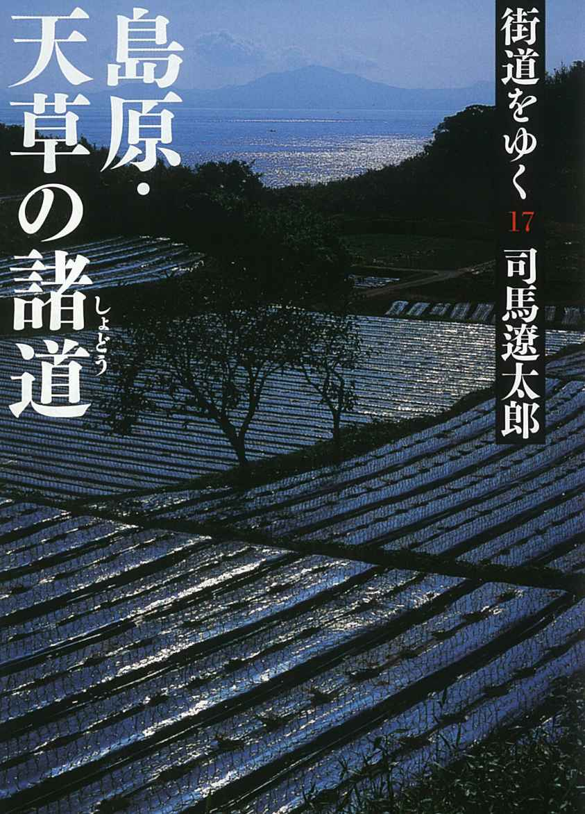
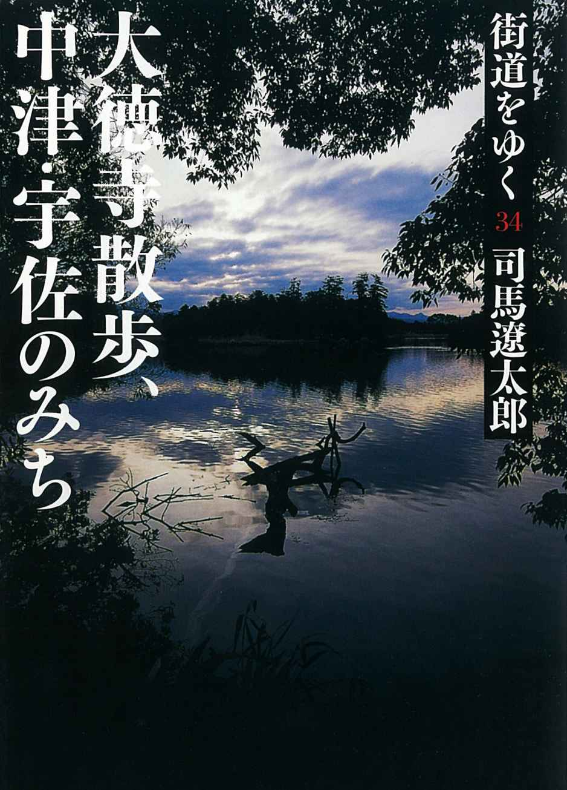

| 司馬遼太郎『街道をゆく』読書ガイド | |
| Unknown | |
司馬 太郎
『街道をゆく』
読書ガイド
はじめに
司馬 太郎さんが「週刊朝日」に『街道をゆく』の連載を始めたのは、1971年のことです。以来、毎週欠かさずに執筆を続け、その「ゆく」範囲は日本国内のみならずアイルランド、オランダ、モンゴル、台湾などの海外まで及びます。連載は司馬さんが亡くなる1996年まで続き、最終的に書籍にして全43冊を数える大紀行となりました。
このたび、『街道をゆく』全巻電子書籍化を機会に、全巻の内容と、簡易な人物名／地名インデックスをつけて読書ガイドとしました。
『街道をゆく』はどこから読み始めてもかまいません。司馬さんとゆく豊かな旅路の一助としてご利用いただければ幸いです。
2014年8月 朝日新聞出版
注意事項
○「購入ページへ」をクリックすると、Amazon.co.jpの電子書籍版・商品詳細ページに飛びます。
※このリンクは、iPhone、iPod Touch、iPadのkindleアプリからはご利用いただけません。ご了承ください。
○目次機能をご活用いただくと、一覧ページへ効率よく移動できます。
巻別街道名一覧
湖西のみち
竹内街道
甲州街道
葛城みち
長州路
加羅の旅
新羅の旅
百済の旅
陸奥のみち
肥薩のみち
河内みち
洛北諸道
郡上・白川街道と越中諸道
丹波篠山街道
堺・紀州街道
北国街道とその脇街道
ハバロフスク
イルクーツク
ウランバートル
ゴビ
那覇・糸満
石垣・竹富島
与那国島
甲賀と伊賀のみち
大和・壺坂みち
明石海峡と淡路みち
砂鉄のみち
熊野・古座街道
豊後・日田街道
大和丹生川（西吉野）街道
種子島みち
潟のみち
播州揖保川・室津みち
高野山みち
信州佐久平みち
羽州街道
佐渡のみち
蒙古塚・唐津
平戸
横瀬・長崎
五條・大塔村
十津川
壱岐・対馬の道
南伊予・西土佐の道
北海道の諸道
叡山の諸道
島原・天草の諸道
越前の諸道
中国・江南のみち
中国・蜀のみち
中国・雲南のみち
芸備の道
神戸散歩
横浜散歩
バスクとそのひとびと
マドリード周辺
ポルトガル・人と海
近江散歩
奈良散歩
中国・閩のみち
嵯峨散歩
仙台・石巻
因幡・伯耆のみち
檮原街道（脱藩のみち）
耽羅紀行
秋田県散歩
飛騨紀行
愛蘭土紀行Ｉ
愛蘭土紀行II
阿波紀行
紀ノ川流域
白河・会津のみち
赤坂散歩
大徳寺散歩
中津・宇佐のみち
オランダ紀行
本所深川散歩
神田界隈
本郷界隈
オホーツク街道
ニューヨーク散歩
台湾紀行
北のまほろば
三浦半島記
濃尾参州記
1巻『湖西のみち、甲州街道、長州路ほか』
旅はここからはじまった！ 湖西のみち、大和・竹内街道、甲州街道、葛城みち、そして長州路......司馬史観が自在に展開するシリーズ第1弾。
■ 湖西のみち
旅のルート
1970年、粉雪の舞う季節
『街道をゆく』の旅で司馬 太郎が最初に訪れたのは「楽浪の志賀」と呼ばれた湖西であった。日本人の祖形を求める司馬さんは、車で湖西のみちを北上しながら、「楽浪」は朝鮮半島（新羅）の楽浪と関係があるのか、繋がりの痕跡をさがす。古い漁港の北小松は「高麗津」、近江最古の神社である白鬚神社は「新羅神社」ではないか。安曇川町の集落では、水辺を好んで居住してきた安曇族に思いをはせる。朽木谷へ入ると、この長大な渓谷を退却した織田信長の凄みに心を奪われた。信長を助けた松永弾正と朽木元綱にも話は及ぶ。朽木氏の館があった野尻、さらに市場という集落を抜け、岩瀬の曹洞宗興聖寺、境内に残る足利義晴の庭園跡を再訪した司馬さんは、かつて見た情景を語る。
北小松の集落
古くからの漁港町。家々の軒は低く、紅殻格子を目にしたと司馬さんはいっている。
白鬚神社
滋賀県高島市鵜川215
近江最古の神社で、祭神は猿田彦。琵琶湖中に立つ大鳥居が印象的。本殿は国の重要文化財。
安曇川町の集落
朽木渓谷を源流とする安曇川が集落を流れ、アユ漁が盛ん。近江聖人・中江藤樹の生誕、終焉の地。
朽木渓谷
越前朝倉攻めの折、織田信長が京への退却の途についた山道「鯖街道」が通る。
野尻、市場の集落
朽木村野尻には、朽木氏の館があった。市場は、毎週日曜日、祝日に朝市で賑わう。
興聖寺 旧秀隣寺庭園（足利庭園）
滋賀県高島市朽木岩瀬374
かつて朽木氏の檀那寺で、近江曹洞宗の巨刹。本尊の釈迦如来坐像は国の重文。境内の庭園跡は12代将軍足利義晴のために造園されたといわれる。国の名勝。
■ 竹内街道
旅のルート
1970年ごろ
古代の倭王権についての興味を胸に、若き日本語学者、ロジャ・メイチン君を道連れにして石上神宮を訪れた。うっそうとした「布留の森」を歩き、崇神天皇の時代に思いを馳せる。次に、山辺道に沿って南下して大神神社でも森を歩き、その御神体である三輪山と古代王権について考えた。大阪への帰り道は、そこから奈良盆地を横断し竹内峠を越えることにした。叔父のことなどを思い出しながら、司馬さんの母方の実家があった竹内集落を抜けたところで車が故障し、止まってしまう。筆はそこで留められている。
石上神宮
奈良県天理市布留町384
神武天皇に捧げられた神剣「韴霊（ふつのみたま）」を御神体とする。国宝の拝殿、七支刀（七枝刀）ほか貴重な宝物を多数所蔵。
大神神社
奈良県桜井市三輪
三輪山を御神体とする古社。祭神は大物主神。拝殿のみで本殿を持たない。国史跡。
■ 甲州街道
旅のルート
1970年5月23日
甲州街道を車で八王子に向かう前に、司馬 太郎はまず、太田道灌が詠った武蔵野の広さや、『更級日記』に出てくる坂東人を思う。秀吉が小便をしながら家康に関東を与えた逸話や、直臣団の八王子千人同心、街道沿いの村出身の近藤勇ら新選組幹部を思い、車中では美しい同行者・Hさんと徳川慶喜について話す。八日町で在野の慶喜研究者・Kさんに会い、小仏峠に向かう途中、駒木野で道をまちがえて引き返し、車を降りて高尾山内の旧道を歩く。慶喜が身を引いた後も、軍を率いて甲府に向かった近藤勇らを思い浮かべつつ小仏峠を目指すが、途中で断念し、戻った八王子でKさんたちと再び慶喜談義となる。
八日町
JR八王子駅の北側に広がる繁華街。司馬 太郎が徳川慶喜について語り合ったKさんの履物屋もここにあったが、今は廃業した。
甲州街道駒木野宿跡
小仏峠に至る旧甲州街道の小仏関所跡と並んでいる。
■ 葛城みち
旅のルート
1970年または71年
葛城地方の古代に思いを馳せながら葛城古道を南下した。笛吹部の先祖・笛吹連を祀る笛吹神社から、葛城氏の先祖・一言主神を祀る一言主神社へと進みながら、一言主神と雄略天皇、鴨氏の一族とされる役行者（役小角）などを思い起こし、葛城の古代氏族と倭王権の関係を考える。さらに鴨氏の先祖を祀る高鴨神社へ至り、その周辺の景観は古代から変わっていないのではないかと思う。
笛吹神社
奈良県葛城市笛吹448
正しくは葛木坐火雷神社。祭神は火雷神と笛吹連の祖神。周辺は一大古墳群をなしている。
葛城坐一言主神社
奈良県御所市森脇432
延喜式に載る古社。「葛城の神」一言主神を祀る。「一言さん」と呼ばれ広く親しまれている。
高鴨神社
奈良県御所市鴨神1110
古代にこの地方にいたと思われる鴨氏の氏神。本殿は重文。
■ 長州路
旅のルート
1970年6月
司馬 太郎は、明治維新の推進力となった長州人の怜悧と猪突猛進を併せ持つ気風に興味を示し、長州人に関する3つの謎を解くことを望みつつ旅立った。関門海峡をこよなく愛する司馬さんは、下関の「阿弥陀寺町」「壇之浦町」といった地名に「海峡漁師」や坂本龍馬ら幕末の志士たちの宴会を思い浮かべる。さらにこの地に立つ「赤間神宮」の初代宮司・白石正一郎の悲哀を思う。そして話は、海と長州というテーマへ。大内・毛利時代に「海上の王」として君臨した長州の革命を推し進める原動力を海に見る。湯田温泉の老舗の宿で湯につかり、山口市内の瑠璃光寺へ向かった司馬さんは五重塔の尋常ならざる古色に圧倒され、大内文化の深さ、優しさを思う。山口から一路津和野を目指す途中、野坂峠から津和野城下を眺め、津和野藩が感じた長州藩への脅威を実感し、森鷗外、西周など学者を多く生み出した小藩津和野の複雑な立場を理解する。
壇之浦
山口県下関市壇之浦町
源平合戦、馬関戦争の舞台となった関門海峡を望む一帯。古くから海岸沿いに海峡漁師が住みつき、幕末頃には飲み屋街として栄えた。
赤間神宮
山口県下関市阿弥陀寺町4-1
幕末の商人・白石正一郎が初代宮司を務めた神社で、源平合戦で幼くして壇之浦の海に散った安徳天皇を祀る。境内に安徳天皇陵、平家一門の墓などがある。
松田屋ホテル
山口県山口市湯田温泉3-6-7
司馬 太郎が宿泊した宿。300年余の歴史を誇り、幕末の志士や公卿も宿泊した。回遊式庭園には西郷・木戸・大久保会見所の東屋も残る。
瑠璃光寺五重塔
山口県山口市香山町7-1
嘉吉2年（1442）に大内義弘を弔うために弟の盛見が建立した。日本三名塔のひとつと称えられる国宝。
井上馨遭難地（袖解橋周辺）
山口県山口市中園町53-2
元治元年（1864）、長州藩士で正義派の井上馨が藩内保守派に斬りつけられた場所。湯田の自宅への帰路に瀕死の重傷を負ったが一命はとりとめた。
旧山口藩庁門
山口県山口市滝町1-1
毛利敬親が文久3年（1863）に着工した藩庁の門。藩庁跡は現在県庁となっている。旧県庁（国重要文化財）も隣接している。
野坂峠
島根県津和野町中座
長州（山口県）と石州（島根県）の境の峠。野坂峠を過ぎて国道9号線沿いをゆくと、津和野城下を一望できる。
森鷗外旧宅
島根県津和野町町田イ230
津和野藩藩医の家に生まれた明治の文豪・森鷗外の生家。
殿町
島根県津和野町後田
藩校や家老屋敷が並ぶなまこ壁の町並み。側溝には津和野を象徴する鯉と菖蒲（5月～6月）が見られる。
医光寺
島根県益田市染羽町4-29
正平18年（1363）、益田兼弘のとき創建された。庭園は、第5代住職の雪舟作。
伊藤博文 、井上馨（聞多） 、上杉謙信 、大村益次郎（村田蔵六） 、織田信長 、勝海舟 、桂小五郎（木戸孝允） 、空海（弘法大使） 、近藤勇 、西郷隆盛（吉之助） 、最澄 、坂本竜馬 、高杉晋作 、徳川慶喜（一橋慶喜） 、豊臣秀吉（木下藤吉郎） 、乃木希典 、土方歳三 、毛利輝元 、山内容堂 、吉田松陰
2巻『韓のくに紀行』
1971年の連載開始から96年2月の急逝によって未完のまま閉じた司馬さんの旅は、日本国内にとどまらない。日本に最も近い外国・韓国。2000年の長きにわたる交流の歴史を持つ国を歩き、現代から過去へと遡る旅。
■ 韓のくに紀行
旅のルート
1971年5月
司馬 太郎は、古代の朝鮮を体感しようと、韓国の農村を巡る旅に出た。釜山の龍頭山では、李舜臣の像を見て、祖国を救った海将に敬意を表する。釜山の近郊の金海では、金氏の祖廟・首露王陵を訪ね、拝礼する人々を見て、李朝という儒教国家が続いているような思いにとらわれる。慶州郊外の仏国寺では、万葉集に出てくる「歌垣」を想わせる野遊びに出会い、またその近くの掛陵では、これも古代を連想させる老人たちの酒盛りに合流する。大邱近郊の友鹿洞（友鹿里）という村では、秀吉の朝鮮出兵時に朝鮮に投降した武将の実在を実感することができた。百済の旧都・扶余では、古代日本と百済の関係や白村江で散った兵士たちの心情に思いを馳せる。
龍頭山公園
釜山市中区東光洞・南浦洞
江戸時代、日本の唯一の海外公館であった草梁倭館があった。現在は李舜臣の銅像が立つ公園になっている。
首露王陵
慶尚南道金海市
金官伽耶国の始祖といわれる首露王の墓所。現在も金海金氏一族の崇敬を集めている。
仏国寺
慶尚北道慶州市進峴洞
535年創建。統一新羅時代の特徴を伝える韓国で最も有名な寺の一つ。ユネスコ世界遺産。
掛陵
慶尚北道慶州市外東邑掛陵里
原型をよく残しているといわれる新羅の国王（8世紀）の陵。
友鹿洞
大邱市達城郡嘉昌面友鹿里
秀吉の朝鮮侵攻時に朝鮮に帰化した日本の武将、沙也可を先祖とする人々の村。
倭館
慶尚北道漆谷郡倭館邑
日本の韓国併合後にできた地名だが、司馬さんは秀吉時代にできた地名と思って寄った。
扶蘇山
忠清南道扶余郡扶余邑
百済の王城。司馬さんはその麓にある3人の忠臣の祠、三忠祠を訪れた。
定林寺址
忠清南道扶余郡扶余邑東南里
定林寺は高麗時代の寺名。百済時代から寺があり、百済時代の唯一の史跡が五重石塔である。
3巻『陸奥のみち、肥薩のみちほか』
憧れだった東北南部の「陸奥のみち」、日本史に大きな役割を果たした、南九州の肥後と薩摩という、２県を合わせて命名した「肥薩のみち」。かつて日本版図の果てであった地域で生きた人々に思いを馳せる旅。
■ 陸奥のみち
旅のルート
1971年11月
八戸空港に到着。翌日、根城跡を訪れ、樹齢600～700年の銀杏の大木を見る。馬淵川沿いに南下し、櫛引八幡宮で甲冑を見て、階上、軽米を経ながら、かつて高山彦九郎も通った白樺の久慈街道をゆく。久慈の巽山公園で江戸期の代官所跡や、柔道の三船久蔵十段留魂之碑を見てから、陸中海岸沿いの浜街道（ミナト街道。明治40年代に柳田国男も歩いている）を北上し、八戸へ。板橋、侍浜、小子内、種市を経て種差海岸に向かう。八戸の旅館・石田家で夕食。翌朝、八戸から百石、十和田、陸羽街道を経て北上後、野辺地に到着。下北半島を見る。浜へ下りると、津軽と南部の藩境を示す「四ツ森」とよばれる藩境塚があった。
根城跡
青森県八戸市根城
南部氏が築城した南北朝時代の城跡。樹齢600～700年の銀杏の大木がある。
櫛引八幡宮
青森県八戸市八幡丁3
南部氏建立の古社。国宝館は鎌倉期作の国宝、赤糸威鎧と白糸威褄取鎧を収蔵。
藩境塚
野辺地湾の浜辺にある、津軽藩と南部藩の藩境を示す4つの土盛り。「四ツ森」とよばれる。
■ 肥薩のみち
旅のルート
1972年3月22日～24日
熊本空港に降り立った司馬 太郎一行はまず、熊本市の北隣の植木町（現・熊本市北区植木町）に西南戦争の古戦場として名高い田原坂を訪れる。司馬さんは、この地になお残る激戦の跡を目の当たりにし、関ケ原以来の肥後・薩摩の歴史的な対抗関係について思いを巡らし、さらに西郷隆盛という存在の歴史的な巨大さを考える。一行は八代に下り八代城跡を見た後、球磨川に沿って上流へさかのぼり、人吉で荷をほどく。鎌倉時代から700年近くにわたってこの地を治めた大名・相良氏の治績を訪ねた司馬さんは、その家系の歴史と世界史における日本の消長を重ね合わせる。人吉から肥薩の国境・久七峠を越え鹿児島に入った一行は浄土真宗の寺を見て、真宗の禁圧と隠れ門徒の存在に思いをいたす。川内を経て鹿児島市に向かう途上、苗代川の陶芸家・14代沈寿官の家に立ち寄る。司馬さんはかねて旧知の沈壽官の内面に、古い薩摩士族の面影を見出す。鹿児島市内で宿をとった後、沈壽官に勧められた蒲生を訪れた司馬さんらは、武家屋敷の青みがかった石垣に、この町に伝わる薩摩士族の気風を感じるのだった。
田原坂
資料館には無数の弾痕の残る土蔵（復元）をはじめ、150点余の資料が展示されている。周囲には両軍の墓地や、本営跡などの史跡が点在する。
八代城跡
熊本県八代市松江城町
加藤清正の子、忠広が家臣に築かせ、元和8年（1622）に完成した。現在は石垣のみが残る。
青井阿蘇神社
熊本県人吉市上青井町118
大同元年（806）の創建。桃山様式を伝える現在の楼門や本殿は17世紀初めの再建で、重要文化財（2008年に国宝指定）。
願成寺
熊本県人吉市願成寺町956
人吉藩主・相良家の菩提寺で、代々の墓所がある。
人吉城跡
熊本県人吉市麓町
相良氏700年の居城。文久2年（1862）の火事で焼失し、石垣だけが残る。
久七峠
旧肥薩国境で、境界に石造のモニュメントが立つ。
曾木ノ滝
鹿児島県伊佐市大口宮人
幅210メートル、高さ12メートルの大滝。周囲は遊歩道が整備され売店が立ち並ぶ。名物の鯉料理も。
沈寿官窯
鹿児島県日置市東市来町美山1715
苗代川（現・美山）には薩摩焼の窯元が数多く並ぶ。沈寿官窯の先代の14代沈壽官は、司馬 太郎の小説『故郷忘じがたく候』のモデルとなった。
蒲生町武家屋敷跡
鹿児島県姶良市蒲生町上久徳
薩摩藩独自の外城制度に基づいた町割が、往時のままに残る。
蒲生八幡神社
鹿児島県姶良市蒲生町上久徳2259-1
保安4年（1123）創建。境内には樹齢1500年、目の高さの幹回り24.22メートルで日本最大という楠の巨木がある。
竜ケ城磨崖梵字
鹿児島県姶良市蒲生町
蒲生氏の居城・竜ケ城の立つ岩山の断崖に、約120メートルにわたって1700もの梵字が彫られている。
■ 河内みち
旅のルート
1972年ごろ
東大阪市に住んでいた司馬さんにとって、河内はご当地。自宅を拠点として、＜古代にあっては王城の地だった＞河内を旅する。富田林から高貴寺にのぼり、高貴寺ゆかりの空海、慈雲に思いを馳せる。西行のことを考えながら、司馬さんは葛城山のふもとの弘川寺へ向かい、西行の墓といわれる古墳を見る。楠木正成のことなどを思いつつ、観心寺のそばの宿へ＜一泊の散歩＞をしたあと、大ケ塚に出かけ、八朔の祭りを楽しむ。
高貴寺
大阪府河南町平石539
役行者の開基とされる真言宗の寺院。空海が「香華の山」とよび、寺名の由来となったという。
平石峠
二上山の雌岳と葛城山のあいだの鞍部のひとつ。
弘川寺
大阪府河南町弘川43
文治6年（1190）、寄寓していた西行が「きさらぎの望月のころ」に没した真言宗の寺院。
観心寺
大阪府河内長野市寺元475
楠木正成が学んだとされる真言宗の寺院。金堂と本尊の如意輪観音像は国宝。
大ケ塚
浄土真宗の寺院・顕証寺を中心に寺内町を形成。現在も中世の自衛村落の名残をとどめる。
4巻『郡上・白川街道、堺・紀州街道ほか』
近畿・北陸の周辺にのびる古道をたどりつつ、古代から現代にいたる歴史を自在に往還する旅。鞍馬で800年前と変わらぬ形で山を守る清僧と出会い、花背峠で杣料理に舌鼓をうち、武生で自然破壊を憂う。
■ 洛北諸道
旅のルート
1972年9月10日～11日
司馬さんは、スタスタ坊主と山伏に思いを馳せながら、鞍馬街道を通って花背峠に向かい、峰定寺を目指す。途中、花背に宿を取り、夕食にワラビの海苔巻やウドの花の天ぷら、栗めしなどを食べ、杣料理と名づける。翌日、岩壁にかかる峰定寺の本堂に上り、須田さんとともに絶景を楽しむ。その後、山国街道を通って、光厳・後花園・後土御門の3人の天皇が葬られている山国陵とその御陵に隣接する常照皇寺に立ち寄り、シダレ桜を見る。山国神社で草刈りの女性と言葉を交わし、周山街道を南下して御経坂峠へ向かう。
花背
司馬さんらはこの里に宿を取った。
峰定寺
京都府京都市左京区花背原地町772
鳥羽法皇建立の本山派修験の寺院。住職は聖護院門跡が兼務する。
常照皇寺
京都府京都市右京区京北井戸町丸山
臨済宗天龍寺派の寺院。光厳上皇の開創。門前、境内に見事なシダレ桜がある。
山国陵
光厳天皇、後花園天皇、後土御門天皇の御陵。
山国神社
光仁天皇によって宝亀年間（770～781年）に創立された。祭神は大己貴神（大国主命）。
■ 郡上・白川街道と越中諸道
旅のルート
1972年10月
富山に用事ができた司馬さんは、＜出かける以上は太平洋岸から日本海岸にむかってぬけ通っている道をたどりたい＞と、郡上街道を北上する。郡上八幡城では、室町期の領主・東常縁が、奪われた領地を和歌で返してもらったという故事に触れ、当時の文化意識の円熟をそこに見る。五箇山の村上家では、＜日本人の智恵がつくった＞生活の諸道具を見て、＜道具類のもつ迫力＞に感じ入った。
郡上八幡城
岐阜県郡上市八幡町柳町一の平
永禄2年（1559）、遠藤盛数によって築城されたのが始まり。現在の城は昭和8年（1933）、大垣城を参考にして再建されたもの。
御母衣湖の荘川桜
岐阜県高山市荘川町海上
御母衣ダムの建設で湖底に沈んだ光輪寺と照蓮寺の境内から移植した樹齢約450年の2本の老桜。4月下旬～5月上旬には見事な花を咲かせる。
行徳寺
富山県南砺市西赤尾町
五箇山に真宗を布教した道宗が、文安3年（1446）に創建。本堂や茅葺きの楼門、合掌造りの庫裡が立つ。寺宝に道宗筆の「赤尾道宗心得二十一箇条」などがある。
五箇山
富山県南砺市
富山県南西部の庄川中流部の谷の総称。江戸時代には煙硝や和紙、養蚕などを主な産業としていた。世界遺産にも登録された合掌造り集落や、山村の暮らしを伝える「五箇山民俗館」などがある。
■ 丹波篠山街道
旅のルート
1972年ごろ
司馬さんは大原野神社で同行者と待ち合わせをし、老ノ坂を通る際に明智光秀が本能寺の変をおこした理由について考える。亀岡では大本教の弾圧に思いを巡らせ、車は園部を通り過ぎる。夜の7時前に篠山に到着して、由緒正しい宿に泊まる。翌日、篠山城跡にのぼったあと、日本六古窯のひとつで、柳宗悦の民藝運動で重要な役割を果たした丹波焼の製陶地・立杭を訪れ、＜パンダみたい＞な花びんを買う。その後、山中の道を通り、正午すぎ、三田の盆地にさしかかる。三田では市街地をあげての誓文払いの日で、＜縁日と夏祭りが一緒にきたような雑踏＞を楽しむ。
大原野神社
京都府京都市西京区大原野南春日町1152
都が奈良から長岡京に遷るとき、藤原氏が一族の氏神として春日様式で建てた。京春日ともよばれる。
老ノ坂
いまは新道になり、新道はトンネルをくぐっているが、旧道には「是れ従り東、山城の国」という標石がある。
亀山城跡
明智光秀が築いた石垣の一部が残る。宗教法人・大本の敷地内にある。
篠山城跡
徳川幕府の命により「天下普請」で建てられた。江戸初期は城主が頻繁に交代したが、青山氏が入部してからは明治維新までそのまま続いた。
立杭
丹波焼の窯元が集まる。17世紀初めごろに登窯が導入され、現在も使われている。
三田
8世紀の創建とされる金心寺の門前町として開け、江戸時代には九鬼氏3万6000石の首邑として栄えた。
■ 堺・紀州街道
旅のルート
1973年2月
中世に輝きを放った自由都市を思い描きながら、司馬さんは堺を旅する。宿院の蕎麦屋ちくまを目指すが運悪く定休日。千利休や今井宗久、津田宗及ゆかりの禅寺・南宗寺を訪れ、御陵前から入る紀州街道へ。船待神社に立ち寄る。関ケ原の合戦で紀州浅野勢と大坂勢が衝突した地、樫井を訪れ、古街道の匂いを嗅ぐ。塙団右衛門と淡輪六郎兵衛重政の墓碑も訪れる。
ちくま
大阪府堺市堺区宿院町
宿院町にある蕎麦屋。司馬さんが訪れた日は定休日で、軒下で雨宿りした。
南宗寺
大阪府堺市堺区南旅籠町東３丁1-2
堺にある禅寺。古田織部好みの枯山水の庭、利休の茶室「実相庵」と遺愛の手水鉢、半井家によって守られてきた津田宗及一族の墓などがある。
船待神社
大阪府堺市西湊町
御陵前から入った紀州街道沿いにある。大宰府へゆく途中の菅原道真がここで船を待ったという言い伝えがある。
塙団右衛門と淡輪六郎兵衛重政の墓
大阪府泉佐野市南中樫井
関ケ原の合戦の際に、上田宗固率いる紀州浅野勢が団右衛門を先鋒とする大坂方を迎え撃った場所で、後世に紀州方の子孫が建てた。
■ 北国街道とその脇街道
旅のルート
1973年2月20日～21日
司馬さんの旅の出発地は、初めて訪れた琵琶湖北岸の海津。海津から奈良時代の官道をたどり、国境、疋田を経て敦賀に向かった。古代に、いまの中国東北部に興った渤海国の使節団が海を渡って敦賀に上陸、この街道を通ってはるばる海津にやってきたことに思いを馳せる。翌日、敦賀から海岸道路を北上して武生に向かった司馬さんは、海まで迫る大山塊の存在が北陸の日本史にもっとも重大な影響を与えたのではなかったかと、継体天皇や柴田勝家などの行動から分析する。入り江ごとにある集落のなかで、杉津の浜の美しさにひかれ、大良の水仙に室町文化が日本の文化の原型となっていることを考え、また、赴任する父とともに武生に来た紫式部を思う。武生からは北国街道を南下。栃ノ木峠を越え余呉湖へ至ると、羽衣伝説と渡来人について考える。そして木ノ本を目指す途中、勝家と羽柴秀吉の賤ケ岳合戦に思いをめぐらし、秀吉の勝因を考えつつ、旅を終える。
海津
滋賀県高島市マキノ町海津
古代から都と越前を結ぶ交通の要路に位置し、江戸時代は天領だった。
疋田
福井県敦賀市疋田
西近江路を国境から峠道をくだった敦賀側にある集落で、塩津街道との合流点という交通の要所であった。
武田耕雲斎等墓
福井県敦賀市松島町
敦賀で処刑された武田耕雲斎ほか水戸天狗党の人々の墓。国史跡。
気比の松原
福井県敦賀市松島町
三保の松原（静岡県）、虹の松原（佐賀県）と並び称される日本三大松原の一つ。海岸沿いに約1.5キロの松原が続く。
金崎宮
福井県敦賀市金ケ崎町1-4
敦賀湾を間近に望む小高い丘の上に築かれた金ケ崎城は、延元元年（1336）から同2年にかけて、南朝の新田義貞が恒良親王と尊良親王を擁して北朝の足利軍と戦った戦場となった。国指定史跡。金崎宮は、その渦中で倒れた両親王を祀る。
今庄宿
福井県南越前町今庄
旧街道沿いには、北国街道の本陣が置かれた宿場町のたたずまいが残っている。
板取宿
福井県南越前町板取
栃ノ木峠を越えて越前に入って最初の宿場。旧宿場町の家並みは街道から見た妻入りに統一され、重厚な甲造りの屋根が特徴。
余呉湖
滋賀県長浜市余呉町
周囲6.4キロのこぢんまりとした湖で、湖面が琵琶湖より50メートル弱高い。波だつことがすくなく、「余呉湖（よごのうみ）」とも呼ばれる。
明智光秀 、石田三成 、伊藤博文 、織田信長 、桂小五郎（木戸孝允） 、加藤清正 、西郷隆盛（吉之助） 、斎藤道三 、高杉晋作 、筒井順慶 、豊臣秀吉（木下藤吉郎） 、豊臣秀頼 、福島正則 、古田織部 、源義経（牛若丸） 、源頼朝 、陸奥宗光
5巻『モンゴル紀行』
少年のころ、夢想の霧の中でくるまっているほど楽しいことはない。そのころの夢想の対象は、東洋史にあらわれてくる変な民族についてだった......憧れだった草原の国を訪ね、悠久の歴史と現在を誌す。
■ モンゴル紀行
旅のルート
1973年8月21日～31日
少年時代に空想をかき立てられ、青春期にはその言語を学んだモンゴルは、司馬 太郎にとって夢想の中のあこがれの国であった。そのモンゴルへの初めての旅は、新潟から始まる。新潟空港からソ連（現ロシア）のハバロフスクへと飛び、さらにイルクーツクのモンゴル領事館でビザを受け取り、二度の乗り換えでようやくモンゴルへたどり着く。これが当時のモンゴルへの最短ルートであった。ハバロフスクでの司馬 太郎は、アムール川の対岸にはるかに広がる中国領を望み、かつて国境をはさみソ連軍と対峙した戦車連隊士官時代の記憶に、歴史と運命の皮肉を思った。イルクーツクでは、江戸時代に日本から漂着した大黒屋光太夫の軌跡をしのぶ。ようやく入国したモンゴルの首都ウランバートルで司馬 太郎は、ノモンハン事件の悪夢に日本人とモンゴル人の不幸な出会いを嘆く一方、足を延ばした南ゴビでは、満天の星空や一望何億という花の咲きそよぐ草原、さらに純朴な遊牧民たちとの交流に、帰りがたいほどの想いにかられる。こうしたモンゴルの旅を案内したのは通訳の女性ツェベックマさんで、司馬 太郎はこのひとりの女性のなかに、モンゴル人のたどった長い歴史の苦闘のあとを見いだすのだった。
アムール川
河畔は「文化と憩いの公園」として整備され、美術館や博物館、展望台などがある。5～9月までは遊覧船も運航する。
ハバロフスク郷土博物館
「文化と憩いの公園」内にある煉瓦造りの建物。少数民族の生活用具が見られる。
イルクーツク市街
かつて「シベリアのパリ」と称された街並み。
平和橋（ピース・ブリッジ）
空港から北へと向かい、この橋を渡るとウランバートル市街に入る。1960年代に中国の無償援助で造られた。
国立中央図書館
司馬さんの訪れた時代には科学アカデミーで、ここに立っていたスターリン像は1990年2月に撤去された。
ウランバートルホテル
ウランバートルで最も格式あるホテル。司馬さんの通訳を務めたツェベックマさんは、かつてこのホテルで働いていた。
ナイラムダル公園（中央公園）
観覧車や遊具のある遊園地。モンゴル近代文学の父とされる詩人ナツァグドルジの像がある。
ザイサン・トルゴイ（革命の英霊の丘）
1971年に建てられた第2次世界大戦の戦勝記念碑がある。丘の上からは、ウランバートル市街が一望できる。
国立オペラ劇場
約500席の本格的なロシア風のオペラハウスで、日本人の抑留者によって建設された。
ガンダン寺
モンゴルの仏教の中心となる寺院。高さ25メートルの観音像が1996年に再建された。
スフバートル広場
広場の中心には、1921年のモンゴル革命の指導者の一人、スフバートルの騎馬像が置かれる。
ジョールチン・ゴビ・ツーリストキャンプ
キャンプに隣接して滑走路があるが、使用されるのは夏のハイシーズン（7～8月）の一部便のみ。
モルツォク砂丘
ツーリストキャンプから北に50キロ。見渡す限りの砂丘、というより大きな砂山がいくつも点在している。
6巻『沖縄・先島への道』
沖縄県では、本島よりもずっと南西に浮かぶ八重山諸島などを「先島（さきしま）」と呼ぶ。那覇にあって太平洋戦争の傷跡から「沖縄問題」を沈思し、離島を渡り歩き、アジア文化伝来の道を確かめる。
■ 沖縄・先島への道
旅のルート
1974年4月
4月1日、司馬 太郎は那覇へ飛んだ。首里の坂道を歩きながら沖縄戦で失われた美しい街並みを思い描く。夜、作家の島尾敏雄と「倭人」や「琉球弧」をテーマに対談。その後、糸満漁港を訪れ、海に生きてきた人たちを思い、いよいよ先島の入り口、石垣島へ。石垣の市場や商店街を巡った後、宮良殿内、石垣家、宮鳥御嶽を訪れ、沖縄の聖地について考える。午後、船で竹富島へ。オート三輪で竹富島の名所を巡る。犬の井戸、牛岡の丘、森の中の鍛冶遺跡、星砂の浜、喜宝院蒐集館、小城盛、島仲家、そして美女クヤマの安里家。サンゴでできたこの美しい島では、鉄器の伝来や海上交通、祭祀と祝女の手がかりを見いだす。台風でしばし足止めされるが、石垣空港から南西航空「さしば」で黒潮のみちを逆行して日本最西端の与那国島へ。波多浜の門中墓、遠目に見た与那国馬、サンニヌ台、女首長サンアイ・イソバの大岩と碑、トゥング田などを巡り、人頭税に苦しめられたこの島の歴史を遡る。村の劇場を訪れて狂言と琉歌を観劇しつつ旅を終える。
首里
沖縄県那覇市首里当蔵町
450年前に築かれた首里城を中心とした美しい都だったが、すべて沖縄戦で焼失した。
糸満港
沖縄県糸満市糸満
沖縄有数の海人（漁師）の町。競り市や公設市場などがあり、活気あふれる港町。
宮良殿内
1819年に建てられた八重山の頭職（最高職）の屋敷。枯山水の庭がある。国の重要文化財。
石垣家
美しく手入れ保存された枯山水の庭園は国の名勝。
宮鳥御嶽
町なかにある御嶽。鳥居と拝殿もある。
川平湾
国指定の名勝地。石垣島のリゾート地として名高い。
竹富島の集落
赤瓦の屋根が連なり、サンゴを積んだ石垣と白い道が印象的な集落は、1987年に国の重要伝統的建造物群保存地区に指定された。司馬さんも、夢のような島だと言っている。
犬の井戸（仲筋井戸）
犬が見つけた水源との伝説がある犬の井戸。
牛岡の丘
竹富島で一番高い場所で東シナ海の見張り所。現在展望台がある。
鍛冶遺跡
草むらの中にある鉄器伝来の痕跡は御嶽となっている。
星砂の浜（カイジ浜）
島の西側にあるビーチ。星の形をした砂は美しい海にしか存在しないという有孔虫の死骸。
喜宝院蒐集館
沖縄県竹富町竹富108
日本最南端の寺院の住職が島の民具などを集めてつくった民俗資料館。
小城盛
外からやってくる船の見張り台として集落のはずれに築かれた石塁。
島仲家
島で初めて舟をつくったという伝説のある家。
安里家クヤマの生家
島へ来た役人の妾になることを拒んだ美女の伝説が伝わる。
与那国馬
この島だけで産する小型の馬。東アジアの在来種。島の東岸で見かけた。
波多浜の門中墓
祖納港に面した波多浜の台上から海を見下ろすように居並ぶ。
サンニヌ台
幾重にも重なる岩層が大造形をつくりあげているすさまじい断崖。
ティンダバナ
サンアイ・イソバが寝ていたという大岩のある丘ティンダバナから見た祖納集落。地元ではティンダハナタともいう。
サンアイ・イソバの碑
ティンダバナの大岩へ向かう途中の藪中にある。
トゥング田（人マス田）
人頭税の負担を軽くするための人減らしの伝説がある田。
久部良バリ
人減らしのため妊婦に飛び越えさせたという岩の割れ目。
「坂の上の雲 」

7巻『甲賀と伊賀のみち、砂鉄のみちほか』
甲賀、伊賀、大和、淡路島、そして山陰の砂鉄のみちへ──。歴史の裏舞台で生き、そして支えた、かなしいまでに律義な、日本の職業人、とりわけ物つくり技術者の足跡と、そのありようを語る。
■ 甲賀と伊賀のみち
旅のルート
1973年春
伊賀上野城を出発点にした司馬 太郎は、自身の小説『梟の城』の最初の場面の舞台・御斎峠を目指す。途中、西高倉の集落で炭焼きをする老人ら2人に出会い、老人との会話から現代日本の忙しさをかえりみる。付近にあるはずの廃補陀落寺跡を探すが見つからず、御斎峠を越えて甲賀へ入った司馬さんは、中世の近江の守護・六角高頼の危機を救った甲賀衆を思う。多羅尾を過ぎ、信楽に至ると、この地を含め複数の地に遷都を繰り返した聖武天皇という人物を考察する。
伊賀上野城
三重県伊賀市上野丸之内106
天正13年（1585）、筒井定次が築城。関ケ原の戦い以降は築城の名手・藤堂高虎が大改修を行ったが、慶長17年（1612）に暴風雨により倒壊した。日本最大級の高さを誇る石垣は高虎時代のもの。
西高倉
三重県伊賀市西高倉
伊賀市内から御斎峠へ至る道上にある集落。高倉神社や廃補陀落寺跡、町石などが史跡として残る。
御斎峠
三重県伊賀市西山
伊賀に入る入り口「伊賀七口」のうちのひとつ。
多羅尾
滋賀県甲賀市信楽町多羅尾
伊賀市の御斎峠を越えて甲賀市に入って最初にある集落。
信楽
滋賀県甲賀市信楽町
信楽焼の町。街道沿いに焼き物の店が林立する。
紫香楽宮跡
滋賀県甲賀市信楽町
天平時代の都跡。天平17年（745）頃この地に聖武天皇が遷都した。大正時代の調査により「史跡紫香楽宮址」とされた黄瀬地区は、その後の調査で「甲賀寺」とわかり、現在ではその北に位置する「宮町遺跡」が紫香楽宮跡とされている。
■ 大和・壺坂みち
旅のルート
1973年ごろ
奈良県の地図を見ていて壺坂山、高取山に登りたくなった司馬さんは、今井町にも寄ることにする。大和八木駅から今井町に入り、ゆるやかに流れる時間を味わう。壺坂へ向かう途中、高松塚古墳に立ち寄る。城下町の土佐から高取城への急斜面を登り、本丸を目指す。頂上からの眺めを楽しみ、壺阪寺へ向かって降りていく。
今井町
中世は浄土真宗の寺院・称念寺を中心に発達した城塞都市だった。江戸時代になると大和の商工業の中心地となった。
高松塚古墳
直径約18メートル、高さ約5メートルの小型の円墳。7世紀末から8世紀初めの築造と推定される。
土佐
高取城の城下町。藩邸や武家屋敷がつくられ、藩主・重臣が移り住んだという。
高取城跡
高取山につくられた山城跡。本丸天守台付近の標高は約584メートル。寛永17年（1640）に植村家政が2万5000石の大名として入城し、明治維新まで植村家の居城だった。
壺阪寺
奈良県高取町壺阪3
正式には壺阪山南法華寺。眼病に霊験あらたかな寺として信仰される。
■ 明石海峡と淡路みち
旅のルート
1974年11月
明石に着いた司馬 太郎は、魚ノ棚商店街を歩いたのち、林崎漁港を目指し、農民国家であった日本で、漁師はどういう位置にあったかを考察する。播淡汽船で船上からの夕日に「西方浄土」を感じつつ、岩屋に上陸。古代海人さながらの漁師との会話を楽しみ、石屋神社を訪れる。淡路島の国生み伝説と古代淡路の海人について考えた司馬さんは、洲本では宮本常一と堂浦一本釣り漁師について思いをはせ、由良の漁協の組合長と語り合う。洲本城見学ののち、国分寺、慶野松原、郡家、伊弉諾神宮を巡り、松がマツクイムシにひどく荒らされている現状を嘆いた司馬さんは、背後にある土地投機問題を指摘し、日本の未来に警鐘を鳴らす。
魚ノ棚商店街
兵庫県明石市本町1
潮流の激しい明石の海でもまれたタコ、タイなど新鮮な魚が並ぶ、400年の歴史をもつ商店街。
林崎
兵庫県明石市林崎町
豊かな漁場「鹿の瀬」に面した漁師町。
明石海峡
兵庫県神戸市
本州・淡路島間の海峡。1998年、世界最長のつり橋である明石海峡大橋が完成。
石屋神社
兵庫県淡路市岩屋799
崇神天皇の頃に創建されたとされる古社。
洲本城
兵庫県洲本市小路谷字御熊山1272-2
三熊山頂にある城で、国史跡。江戸期には山の麓にもうひとつの洲本城が築かれ、山上の城は逃げ城として隠された。
国分寺
兵庫県南あわじ市八木国分331
本尊の木造釈迦如来坐像は国指定重要文化財。
慶野松原
兵庫県南あわじ市松帆慶野
播磨灘に面した松原で、約2.5キロにわたり松が植えられている。
伊弉諾神宮
兵庫県淡路市多賀740
祭神が伊弉諾大神、伊弉冉大神という淡路国一宮で、国生み神話ゆかりの神宮。
■ 砂鉄のみち
旅のルート
1975年1月6日～8日
製鉄という技術の発達が人類の文明にとっていかに重要な契機となってきたか。司馬 太郎は、鉄に対する長年の関心から、出雲から吉備にかけてのたたら製鉄の跡を訪ねる。作家の金達寿氏、考古学者の李進熙氏、そして雑誌「日本のなかの朝鮮文化」を主宰していた鄭貴文と鄭詔文の兄弟も同行した。米子空港に降りた一行はまず雲伯国境の安来市に入り、「和鋼記念館」を見学する。続いて八岐大蛇が退治されたという鳥上山（船通山）の麓で砂鉄による製鉄を行う鳥上木炭銑工場を訪れた。翌日は宍道湖畔を西進、光明寺で朝鮮鐘と対面し、斐伊川をさかのぼって吉田村（現・雲南市吉田町）で、現存する日本唯一の近世たたら遺構「菅谷たたら」を訪ねる。さらに出雲街道の難所・四十曲峠を越えて岡山に入り、湯原温泉で荷をほどく。3日目は加茂町（現・津山市加茂町）で古代製鉄を統御した豪族の墳墓とされる万灯山古墳や、桑谷の近世たたらの遺跡を回る。最後は森氏の城下町・作州津山に入り、藩お抱えの鋳物師の末裔で先祖は百済王敬福であるという「百済質店」主人に出会って、改めて朝鮮半島から連なる製鉄文化の流れを実感するのだった。
和鋼博物館
島根県安来市安来町1058
司馬さんが訪れた和鋼記念館が、日立金属から安来市に移管されてできた博物館。たたら製鉄の歴史や流通にかんする資料が展示されている。
日立金属安来製作所 鳥上木炭銑工場
島根県奥出雲町大呂529
工場内には、日本美術刀剣保存協会の所有するたたらがあり、毎年2月に操業される。一般の見学は不可。
鳥上山（船通山）
斐伊川の源流が発し、この山上でスサノオが八岐大蛇を退治したという神話がある。
揖夜神社
島根県松江市東出雲町揖屋2229
『出雲国風土記』に「伊布夜社」として登場する由緒ある古社。
光明寺
島根県雲南市加茂町大竹292
9世紀のものと思われる朝鮮鐘がある。
菅谷たたら
島根県雲南市吉田町吉田4210-2
現存する唯一の高殿形式のたたら。周辺にはたたら製鉄に従事していた人びとの暮らしていた家並みも保存されている。
田部家土蔵群
島根県雲南市吉田町吉田
室町時代に始まる鉄師で、のちには山林王となり島根県知事も務めた田部家所有の土蔵群。
四十曲峠
旧出雲街道で伯耆国（鳥取県）と美作国（岡山県）を分かつ峠。「東の箱根、西の四十曲」と称された難所だったが、現在はトンネルが通っている。
新庄
四十曲峠の東麓にある宿場町。「がいせん桜通り」には往時の佇まいが保存されている。
湯原温泉
24時間無料で入湯できる露天風呂「砂湯」は、旭川の川底から湧き出る名勝の湯。
万灯山古墳
岡山県津山市加茂町塔中
6世紀後半の築造の円墳で、多くの鉄滓が出土している。
桑谷たたら遺跡
岡山県津山市加茂町黒木
近世の製鉄遺構で、周辺には鉄滓が大量に転がっている。
津山市吹屋町
鋳物師の町ではないかと司馬さんが訪れた古い町並み。津山市には旧出雲街道沿いの城東街並み保存地区など、歴史的景観が数多く残される。
8巻『熊野・古座街道、種子島みちほか』
鉄砲は、未開の孤島ではなく鉄産業が高水準の種子島にやってきた。歴史の面白さである......。熊野・古座街道、豊後・日田街道、大和・丹生川街道、種子島など、山間の道、海の道を歩く旅。
■ 熊野・古座街道
旅のルート
1975年4月
司馬さんは西日本の習俗である若衆組に思いを馳せながら、友人のKさんに伴われ、古座の川丈七カ村を旅する。白浜駅から国道42号、むかしの大辺路を南下し、周参見から内陸の古座街道へ入る。雫の滝を経て、かつての山中の川港・真砂、洞尾の一枚岩へ。川原で山菜や川魚など土地の料理を供された後、明神の集落まで古座川下りをする。明神でKさん宅を訪ね、潜水橋、かつての若衆宿の建物を見て、河内神社の前を通り、河口の町・古座で旅を終える。
周参見
和歌山県すさみ町
室町期の豪族、周参見氏の根拠地であった集落。
雫の滝
和歌山県すさみ町小河内
古座川沿いにある瀑布。
真砂
和歌山県古座川町真砂
かつて川丈七カ村の流通の要衝、山中の川港であった集落。
一枚岩
和歌山県古座川町洞尾
名前のごとく1枚の岩が造る自然の造形。洞尾にある。
明神の若衆宿
和歌山県古座川町月野瀬
もと若衆宿だった建物が残る。現在は民家。
潜水橋
和歌山県古座川町明神
明神と潤野の集落のあいだに架けられた橋。
河内神社
和歌山県古座川町宇津木
槙の木の林に拝所がしつらえられた神社。川中に見える浮島がご神体。
古座
和歌山県串本町古座
古座川が熊野灘に流れこむ河口に拓けた集落で、川丈七カ村のうち最も栄えていた。
■ 豊後・日田街道
旅のルート
1975年8月3日～6日
大分県の由布院と日田を訪ねた。由布院では、若い当主・中谷健太郎氏が経営する宿（亀の井別荘）に泊まり、中谷氏らが推し進める由布院の「町づくり」の気運を体感した。途中にある九重高原の長者原、近世に森藩があった玖珠町にも寄って日田へ。日田では、鵜飼いを見たり、近世の名教育者・広瀬淡窓の史跡を回ったりしたが、むしろ旅館の仲居さんの話や理髪店の客同士の会話などから、天領として栄えた時代に培われた日田の風土を実感することになった。
亀の井別荘
大分県由布市湯布院町川上2633-1
由布院を代表する旅館。広い敷地に、民家を移築して造られた客室や大浴場、談話室などが点在する。
角牟礼城跡
大分県玖珠町森
全国的にも珍しい「穴太積み」の石垣など、戦国時代の山城の特徴を持つ。国史跡。
長者原
大分県九重町田野
阿蘇くじゅう国立公園内に位置する高原リゾート。九重登山の表玄関。
咸宜園跡
大分県日田市淡窓2-2-13
幕末、広瀬淡窓が開き、全国から塾生を集めた私塾の跡。国史跡。
日田温泉
大分県日田市隈
日田市街、三隈川の北側に大型温泉旅館が並ぶ。春から秋にかけて、鵜飼いを見せる屋形船が出る。
豆田町
大分県日田市豆田町
17世紀の町割り、水路、寺社、蔵などが残る。重要伝統的建造物群保存地区。
■ 大和丹生川（西吉野）街道
旅のルート
1975年9月7日～8日
この年の春、若衆組の残像に触れるために熊野・古座街道を訪れた司馬さんは、同じ紀伊半島の大山塊から流れる吉野川、丹生川の川筋も訪ねてみようと思い立つ。下市町から唐戸、十日市、鹿場とまわるが、若衆組の記憶を持つ人には遂に出会わなかった。日本の土俗の風習である若衆組は、奈良盆地に近いこの西吉野では中央の指導が行き渡り、＜あとかたもなく消えてしまった＞のだろうと考える。
十日市
奈良県五條市西吉野町十日市
丹生川流域に沿って広がる集落。かつて市が立っていたことからこの名がついた。
■ 種子島みち
旅のルート
1975年9月28日～30日
薩摩の士族文化の残像が濃厚に遺されているのではないか──司馬 太郎はそんな思いから種子島へ旅する。大阪からの直行便で種子島空港に着いた司馬さん一行は、旧友である薩摩の陶工・14代沈寿官氏と合流し、島主種子島家の旧城下・西之表の市長で郷土史家でもある井元正流氏らの案内で島の北部へと向かった。島の北西に浮かぶ馬毛島でかつて鹿狩りを催した西郷隆盛の側近・桐野利秋と田上権蔵ら種子島士族の間に生じた確執に、司馬さんは種子島と薩摩本藩との間にあった相克を考える。種子島西岸を北上した一行は、砂鉄を含む土が独特の風合いを生んだという能野焼の古い窯跡や砂鉄を採った海岸の集落をめぐる。種子島は鉄砲伝来以前から鉄の島であった。その夜、西之表のホテルで沈寿官夫妻や種子島家当主の弟・種子島時哲氏らと宴を囲む。翌日は種子島家歴代の墓に参った後、島北端の喜志鹿崎から黒潮の流れを望み、鉄砲を紀州根来をはじめ全国にひろめたであろう海上の道を思う。3日目、司馬さん一行は鉄砲伝来の地・門倉岬をめざし島の南部を訪ねる。千座の岩屋という奇岩名勝が名高い熊野浦では、その地名に紀州熊野とのつながりを想像するのだった。
浜津脇港
種子島西岸のほぼ中央に位置する漁港。
住吉神社
海上平安の守護神を祀り、住吉漁港をのぞむ小山に鎮座する。
能野焼窯跡
傾斜地を利用した登窯で、明治39年（1906）まで使われていた。能野焼は砂鉄を含んだ土を用いた深く素朴な風合いが特徴。
日本甘藷栽培初地之碑
元禄11年（1698）に種子島久基が琉球から譲り受けたサツマイモを初めて栽培した。
西之表港
鹿児島から続く国道58号の島内での起点。
西之表市立 種子島開発総合センター（鉄砲館）
鹿児島県西之表市西之表7585
司馬さんが訪れた市立種子島博物館が前身。外観は南蛮船をイメージしたもの。
内城跡
鹿児島県西之表市西之表7617
寛永元年（1624）までの種子島家の居城（赤尾木城）跡。
栖林神社
鹿児島県西之表市西之表7597
甘藷（サツマイモ）栽培を初めて導入した19代島主・種子島久基を祀る。
種子島家累代之墓
栖林神社の境内にある島主歴代の墓地。
喜志鹿崎
種子島最北端の地。メヒルギの自生群や灯台がある。
島間港
国道58号の島内での終着点。屋久島行きのフェリーが発着する。
門倉岬
鹿児島県南種子町西之
種子島の最南端。鉄砲をもたらした船はこの岬から見おろす海岸に漂着した。岬周辺は公園として整備されている。
前之浜
明治27年（1894）にイギリス船ドラメルタン号が漂着した。救助にあたった島民と船員の交流を記念する碑がある。
千座の岩屋
鹿児島県南種子町平山
太平洋の荒波にさらされた海蝕洞窟。
熊野神社
鹿児島県中種子町坂井
享徳元年（1452）、種子島幡時が紀州熊野権現宮から分霊して祀ったといわれる。
9巻『信州佐久平みち、潟のみちほか』
桜井や海野の地名から、中世信濃の武士団の興亡を思った信州佐久平みち、耕作の土地に恵まれなかった人々の苦労の歴史にひかれ、新潟の低湿地を訪れた潟のみち、空海を思った高野山など、各街道を紡ぐ旅。
■ 潟のみち
旅のルート
1975年11月
耕作に適した土地に恵まれなかった人々が、それでも苦労して田畑を拡げていった歴史に興味をひかれた司馬さんは、新潟の低湿地を訪れた。まず、信濃川と阿賀野川の中州にできた亀田郷を訪ね、亀田郷土地改良区の事務所で佐野藤三郎理事長の話を聞いたり、排水機場や鳥屋野潟を見学して、低湿地を水田に変えていった労苦を思う。ついで、阿賀野川を渡って豊栄市（現・新潟市）では、全国に名をとどろかせた木崎村小作争議の話を、当時を知る古老たちに聞いた。翌日は、この旅行のもう一つの用事として、村松町の山中に、友人で詩人のぬやまひろし氏の息子さんらがやっている「新潟・中国語講座・上杉専門課程研修所」を訪ねた。
亀田郷
新潟県新潟市
信濃川、阿賀野川、小阿賀野川に囲まれた輪中地帯。350年以上かけて乾田化が進められてきた。
亀田郷土地改良区
新潟県新潟市江南区東早通1-2-25
土地改良法に基づき、農業の基盤整備を中心に事業を進める法人の事務所。資料展示館もある。
親松排水機場
亀田郷の揚水機場・排水機場の中でも最も大きい施設。
木崎村小作争議記念碑
新潟県新潟市北区笠柳
1920年代を代表する大争議だった木崎村争議の碑。
■ 播州揖保川・室津みち
旅のルート
1976年3月22日～23日
『播磨灘物語』の主人公・黒田官兵衛が一時居城としていた山崎を訪れたいと考えた司馬さんは、西播州の生まれで少年時代をこの地で過ごした歌人の安田章生氏とともに揖保川沿いに車を進める。古代稲作民について思索を巡らせながら伊和神社の境内を歩き、安田氏の母校・山崎小学校で山崎城のわずかな名残を見る。龍野では三木露風を心に浮かべる。揖保川を下り、奈良朝以来の港である室津に宿をとった司馬さんは、現在のものさびた町並みを前に、中世、外洋を航海した船のことや、四国に流される途上でこの地に立ち寄った法然上人に思いをはせる。
伊和神社
兵庫県宍粟市一宮町須行名
祭神は大己貴神。古木がうっそうと茂る境内には、司馬さんが古代信仰の対象だったと考える「鶴石」がある。
山崎小学校（山崎城跡）
兵庫県宍粟市山崎町鹿沢82
戦国時代末期、木下勝俊が築城し、明治以降は藩邸がそのまま学校になった。同行した安田章生氏の母校。
揖保川
全長約71キロ。流域は清流を利用した醤油、そうめんなどの産業が盛ん。川に沿って姫路と鳥取を結ぶ因幡街道が通る。
龍野公園（龍野城跡）
兵庫県たつの市龍野町中霞城
龍野は江戸時代、脇坂氏の城下町として栄えた。本丸御殿、多聞櫓などが復元されている。
賀茂神社
兵庫県たつの市御津町室津75
室津港を抱くように突き出した岬の上に立つ。室津は古くから京都上賀茂神社の神領だったため、その別宮として建てられた。社殿や回廊、唐門は国指定重要文化財。
浄運寺
兵庫県御津町室津168
法然上人二十五霊場のひとつ。法然上人像や法然に帰依したとされる遊女・友君の墓がある。
■ 高野山みち
旅のルート
1976年6月5日～6日
空海の開創した高野山をめざす司馬 太郎一行は、車で大阪から紀見峠を南へ越えて麓の九度山に入る。真田父子の悲運に思いをいたし、慈尊院で空海の母を思う。九度山から高野山へ登る町石道は当時荒れ果てて廃道同様になっていた。その入り口で、司馬 太郎は鬱然とした樹々の木下闇に、深山幽谷に引き込まれていくような畏れを感じた。高野聖たちが空海と浄土信仰を結びつけたことを思い、その晩遅くに山内へ上がる。翌日、旧知の西南院住職の案内で、奥の谷に入り、修行僧たちが念仏を専修する真別処を訪ねる。森閑とした域内に佇む沙羅双樹の木を見て、司馬 太郎はインド仏教の原思想とそれを移入した日本文化との関係に思いを巡らせる。
真田庵（善名称院）
和歌山県九度山町九度山1413
真田昌幸・幸村父子隠棲の地。境内には昌幸の墓や宝物資料館がある。
慈尊院
和歌山県九度山町慈尊院832
弘法大師空海が弘仁7年（816）に開いた古刹。本尊の弥勒仏坐像は国宝。
丹生官省符神社
和歌山県九度山町慈尊院835
空海が開いたとされる。本殿は天文10年（1541）再建で、重要文化財。
壇上伽藍
和歌山県高野町高野山152
奥の院と並ぶ高野山の二大聖地。根本大塔や国宝の不動堂など多くの堂塔が立ち並ぶ。
大門
和歌山県高野町高野山大門
かつての表参道である町石道を登りきった所に立つ。宝永2年（1705）の再建。重文。
西南院
和歌山県高野町高野山249
司馬 太郎の宿泊した宿坊。
苅萱堂
和歌山県高野町高野山479
苅萱道心とその子・石童丸をめぐる親子の悲劇が堂内の板絵で紹介されている。
熊谷寺（持宝院）
和歌山県高野町高野山501
一の谷で平敦盛を討った熊谷次郎直実が出家し、ここで両軍戦死者の霊を弔う法要を開いたと伝えられている。
円通律寺（真別処）
和歌山県高野町高野山
数十人の僧が厳しい修行を重ねている道場であり、観光客の入山は許されていない。
■ 信州佐久平みち
旅のルート
1976年7月25日～27日
旅の前、司馬さんは信濃の地図を眺めて、信濃には更級や蓼科など「科（級）」のつく地名が多いことに気付き、その意味を考える。また桜井や海野などという地名から、桜井氏や海野氏など、中世信濃武士団の興亡を思う。旅の起点はJR長野駅。最初の宿泊地・別所温泉に行く途中、上田市の商店街の街灯に真田六文銭のマークがあるのを見て、上田が「真田氏の町」であることを実感する。別所温泉では、この地を訪れた捨聖・一遍の、すべてを捨てて求道をつらぬいた生を考える。翌朝、常楽寺、安楽寺を訪ね、午後は臼田の佐久総合病院に入院中の知人（詩人のぬやま・ひろし）を見舞う。南軽井沢に泊まった翌日、旧中山道沿いの望月宿をめざした。その途中、昼食を食べるために立ち寄った岩村田の蕎麦屋のテレビで田中角栄前首相の逮捕を知る。望月は平安朝の御牧のあった所。信州の騎馬が木曾義仲の軍事の要だったこと、清少納言『枕草子』の望月宿の記述へ思いをはせ、旅を終える。
常楽寺
長野県上田市別所温泉
円仁の開山で、北向観音の本坊。徳川家康の「日課念仏」などが常楽寺美術館に展示されている。
安楽寺
長野県上田市別所温泉
日本唯一の八角三重塔は、長野県で最初に国宝に指定された。
信濃国分寺跡
長野県上田市国分1125
礎石が残された史跡公園として整備されている。園内に信濃国分寺資料館がある。
海野宿
長野県東御市本海野
国の重要伝統的建造物群保存地区に指定。旧宿場内に海野宿歴史民俗資料館がある。
塩名田宿
千曲川の河畔にあり、橋がかけられていなかった江戸時代には、渡し場の宿として栄えた。
望月宿
長野県佐久市望月
江戸時代の文化元年（1804）には29軒の旅籠があってにぎわった。7～8世紀には朝廷に馬を貢納する御牧があった。
秋山真之 、秋山好古 、石田三成 、織田信長 、空海（弘法大使） 、黒田官兵衛（如水） 、最澄 、真田幸村（信繁） 、徳川家康 、豊臣秀吉（木下藤吉郎） 、正岡子規 、源義経（牛若丸） 、源頼朝 、陸奥宗光 、脇坂安治
10巻『羽州街道、佐渡のみち』
東北とは？ 中学生のころ、箱根以東はひとつの世界だと思っていた著者が初めて訪れ、念願の最上川と対面する羽州街道。書誌をひもといて、地元の人々も知らない地を訪ねるなど、独自の「佐渡観」をあらわした佐渡のみちを収める。
■ 羽州街道
旅のルート
1976年9月23日～26日
「五月雨をあつめて早し最上川」。──芭蕉の名句に誘われた司馬 太郎は、現実の最上川の情景を確かめるべく、山形へ旅立つ。まず訪れたのは、天台宗の古刹、山寺・立石寺。司馬さんは東北地方への仏教伝播の歴史を思いながら、ここで芭蕉の句を味わいかえす。その後、山形市郊外の紅花農家に立ち寄り、羽州街道を一路南下し、米沢市西南の小野川温泉に泊まる。翌日は米沢出身の旧友である川口忠夫、漢学者の尾崎周道の両氏に案内され、上杉神社や林泉寺など、上杉氏ゆかりの旧跡を訪ねた。米沢から北上する途中、司馬さんは白鷹町荒砥で念願の最上川と対面し、＜人格というほかない大きな気魄＞に圧倒される。さらに置賜平野（米沢盆地）の風景に、稲作が育んだ日本人の精神に思いをめぐらし、狐越街道沿いの佇まいに、東北の自然の豊かさを感じる。上山温泉で泊まり、翌日山形市内に入った司馬さんは、山形と米沢の城下町としての歴史に対比の妙を覚える。そして須田画伯の画友である遠藤賢太郎、漆芸家の佐藤正巳、草木染の大場キミの3氏と語らう中で、山形という土地の文化の深さを改めて感じるのだった。
立石寺
山形県山形市山寺4456-1
慈覚大師円仁によって開基された東北随一の天台宗霊場。
米沢城趾（松が岬公園）
山形県米沢市丸の内1-4-13
もともと石垣も天守閣もない質素な城であった。城内は史跡公園として整備され、上杉神社や稽照殿などが点在する。
稽照殿
山形県米沢市丸の内1-4-13
上杉家ゆかりの宝物約1000点を収蔵展示。前立に「愛」の文字を施した直江兼続の兜が見られる。
上杉神社
山形県米沢市丸の内1-4-13
米沢城奥御殿跡に建てられた上杉謙信公を祀る神社。
小野川温泉
平安時代に小野小町が発見したという言い伝えがある米沢の奥座敷。
林泉寺
山形県米沢市林泉寺1-2-3
上杉氏歴代の奥方と支侯の菩提寺。直江兼続夫妻、杉原親憲の墓がある。
千歳山
アカマツに覆われたなだらかな円錐形の山容は、山形市のシンボルとして親しまれている。
長井
江戸時代、最上川水運の中継基地として栄えた。
荒砥
朝日連峰を背景にローカル鉄道フラワー長井線の鉄橋が渡る光景は、最上川の絶景ポイントの一つ。
狐越街道
山形市と白鷹町を結ぶ古街道。関ケ原の戦いのとき、直江兼続は山形城の最上義光を襲うためこの道を攻め上った。
春雨庵
山形県上山市松山
「紫衣事件」で幕府と対立した沢庵和尚が流罪となり、3年を過ごした。
上山温泉
松平氏3万石の城下町。羽州街道と米沢街道が分岐する宿場町としても栄えた。
平清水
千歳山西南麓の集落。文化年間（1804～18年）から平清水焼の窯が開かれている。
■ 佐渡のみち
旅のルート
1976年10月
司馬さん一行は、新潟空港経由、プロペラ機で佐渡に入った。両津の佐渡空港で地元の郷土史家の山本修之助氏らの出迎えを受け、熱串彦神社に寄る。恋ケ浦で宿泊、翌日、旧本陣であった山本家で資料を見せてもらった後、南の小木に向かう。蓮華峰寺では、廉直な役人が追いつめられて立てこもった「小比叡騒動」に思いを馳せ、小木港では海に出て、佐渡の玄関口だった近世の景観を想像した。宿を取った真野の恋ケ浦では、当時小説を準備していた司馬凌海の取材をした。翌日は相川に向かい、金山に送り込まれた無宿人たちについて思いを巡らす。道中、金山開発に功績があった大久保長安や、幕末の佐渡奉行・川路聖謨についても考える。
熱串彦神社
新潟県佐渡市長江
加茂郡衙跡と考えられている古社。境内に能舞台がある。
二宮神社
新潟県佐渡市二宮
配流された順徳上皇の第2皇女忠子を祀る。
道遊の割戸
新潟県佐渡市相川宗徳町
相川金山初期、露頭鉱脈を縦掘りした結果、山がたち割られたような形で残った。国史跡。
相川
新潟県佐渡市
近世、鉱山町として大いに栄え、金銀山関係史跡が多数残る。
小木港
新潟県佐渡市小木町
近世、佐渡金銀山の積み出し港として栄えた。司馬さんはここから沖に出てみた。
蓮華峰寺
新潟県佐渡市小比叡
蓮華の花のような地形に、古建築を多数含む伽藍が展開する古寺。小比叡騒動の舞台。
羽茂の一里塚
新潟県佐渡市羽茂大橋
唯一完全な形で残っている小木街道の一里塚。道の両側にある。
倉谷の大わらじ
新潟県佐渡市大倉谷
集落の両口にかけ、疫病の侵入を防ごうとする民俗が、現在も続いている。
「項羽と劉邦 」
11巻『肥前の諸街道』
地図の中で肥前の島々や浦々をたどっていると、にわかに貿易風の吹きわたるにおいを感じてしまう──唐津から平戸・佐世保をめぐり長崎へ。肥前の浦々を歩きつつ、大航海時代のオランダや英国、ポルトガルについて思いを馳せる旅。
■ 肥前の諸街道
旅のルート
1977年1月、3月
1月に諫早、大村、長崎をめぐる2泊の旅をする。3月、春めいてきた頃に再び旅へ。福岡に入り、蒙古襲来（元寇）に思いを馳せながら、今津の元寇防塁、蒙古塚をたずねる。虹の松原を通り、海人の松浦党に思いをめぐらし呼子、外津へ。唐津泊。平戸口からフェリーで平戸島に渡り、平戸城、オランダ商館跡、ザビエルの碑、松浦史料博物館、印山寺屋敷跡、三浦按針埋骨碑などをめぐり、大航海時代のオランダや英国、ポルトガルについて考える。再びフェリーで平戸口へ戻り、佐世保に宿泊。平戸を出たポルトガル人の足跡を追って横瀬浦へ向かい、大村湾沿いに長崎まで南下して宿泊。福田浦、トードス・オス・サントス教会跡地に立つ春徳寺、長崎氏の居城跡を訪れ、ポルトガル領だった時代の長崎を想う。
蒙古塚
福岡県福岡市西区今津4820-2
2つあり、西塚（千人塚）は野の花学園の校庭に、東塚（万人塚）は学園近くの畑のなかにある。
今津の元寇防塁
福岡県福岡市西区今津今津浜
埋もれた石積みを掘り出して、高さ2メートルほど、長さ200メートルほどの防塁が復元されている。
虹の松原
佐賀県唐津市
秀吉の時代の唐津城主が、2里（8キロ）にわたってつくった防風林。
呼子
佐賀県唐津市呼子町
イカで知られる漁港。
平戸城
松浦氏の居城。江戸前期の1707年に山鹿流法で築城。
オランダ商館跡
オランダ井戸、オランダ坂の石段、オランダ塀、埠頭の一部などが残る。
松浦史料博物館
長崎県平戸市鏡川町12
松浦家の史料や遺品など約3万点を収蔵。オランダ船の船首像など南蛮紅毛交易時代の遺物もある。
三浦按針埋骨碑
平戸で没したウィリアム・アダムスの碑。夫婦塚も立つ。
横瀬浦
長崎県西海市西海町横瀬郷
平戸を出たポルトガル人が最初に移った浦。
福田浦
長崎県長崎市福田本町
ポルトガル人が横瀬の次に移った浦。
春徳寺と城の越
長崎県長崎市夫婦川町11-1
春徳寺はトードス・オス・サントス教会が建てられていた場所。寺背後の高台が城の越で、長崎甚左衛門の城があった。
明智光秀 、伊藤博文 、織田信長 、長曽我部元親 、豊臣秀吉（木下藤吉郎）
12巻『十津川街道』
十津川の農民の不思議さは、主観的には全村が武士だと大山塊の中で思いこんできたことである──奈良・吉野の山奥に広がる十津川郷の知られざる歴史を歩く。天辻峠で天誅組の命運を、上湯で新撰組に追われた田中光顕らを思う興趣尽きない紀行。
■ 十津川街道
旅のルート
1977年9月12日～14日
タクシーで大阪を南下した司馬 太郎は、富田林を経て、金剛山の山中に入り、五條で土地のタクシーに乗り換える。十津川へと向かう山道で、司馬さんは、十津川郷について＜「十津川共和国」というものをつくることもできるし、ひるがえっていえば実態は多分にそうだった＞と考える。天辻峠では天誅組の命運を、上湯では新選組に追われ十津川に逃げた田中光顕らのことを思う。最後に玉置神社を参詣し、熊野に抜けた司馬さんは、隠国と呼ばれた熊野が、十津川に比べて＜目を見はりたいほどに広闊な野に感じられる＞と書く。
五條
奈良県五條市
江戸時代に宿場町として栄えた。新町通りには古い町家が軒を連ね、往時の面影をしのばせる。天誅組に関する史跡も点在する。
天辻峠
奈良県五條市大塔町天辻
旧大塔村と旧西吉野村の境をなす標高約800メートルの峠。峠付近の集落天ノ川辻は物資の集散地として賑わった。
谷瀬の吊り橋
奈良県十津川村谷瀬
全長297メートルの歩行者専用吊り橋。絶景とスリルが人気を呼び、観光シーズンには順番待ちの行列ができるほど。本来は生活道路なので、マナーを守って楽しみたい。
十津川村歴史民俗資料館
奈良県十津川村小原225-1
十津川郷士や天誅組に関する資料、山郷の暮らしに用いた民具が並び、十津川村の歴史や概略がわかる展示になっている。
玉置山
奈良県十津川村
標高1076メートル。修験者が修行の場とした山岳道「大峯奥駈道」が通る。シャクナゲやブナ林が美しく、ハイキングを楽しむ人も多い。
玉置神社
奈良県十津川村玉置川1
老杉の巨木に囲まれて、豪壮な総欅造りの本殿や国重要文化財の社務所が立つ。
岩倉具視 、大村益次郎（村田蔵六） 、勝海舟 、雑賀孫市 、西郷隆盛（吉之助） 、坂本竜馬 、武市半平太 、田中光顕（浜田辰弥） 、徳川慶喜（一橋慶喜） 、豊臣秀長 、豊臣秀頼 、土方歳三 、松平容保 、源義経（牛若丸） 、源頼朝 、陸奥宗光
13巻『壱岐・対馬の道』
朝鮮半島と日本の間に位置し、古来より鉄の海上輸送の経路となり、神話や伝承の上で不思議な様相を帯びつつ、日韓両国の人と文化の歴史的な交流の舞台となった「壱岐・対馬」。壱岐人と対馬人。性格の違う、この二つの島を訪れて、両国の関係に思いを馳せる。
■ 壱岐・対馬の道
旅のルート
1977年11月
福岡空港で作家の金達寿氏、考古学者の李進熙氏と落ちあい壱岐へ飛ぶ。印通寺浦の唐人神、遣新羅使の墓を訪れ、原の辻遺跡の報告書を読んで、鉄の流入ルートを考える。岳ノ辻に登り、平戸藩に搾取された壱岐の歴史を振り返る。郷ノ浦で宿泊。国分寺跡に立ち寄り、勝本漁港へ。公民館で須藤資隆氏と出会う。河合曾良の墓、朝鮮通信使の迎接所であった神皇寺跡で秘仏に対面し、唐神遺跡に立ち寄った後、郷ノ浦発のフェリーで対馬の厳原へ。海上2時間。郷土史家・永留久恵氏に出迎えられ、厳原泊。＜壱岐人と対馬人は、仲がよくない。＞と、2つの島の性格の違いに興味を示す。旅の目的の一つ、かつての同僚A氏の菩提寺・国昌寺に参り、雨森芳洲と申維翰を通して朝鮮通信使を語り、厳原町郷土館で「告身」を見、南北縦貫道で北をめざす。雞知の集落を過ぎ、大船越、万関瀬戸、小船越と浅茅湾を進む。骨卜・亀卜と天つ神の来た道を想像しながら、木坂の海神神社、新羅仏のあるその宝物館、天道山の天神多久頭魂神社を訪れ、千俵蒔山に『対馬まで』（金達寿著）の想いを感じ、韓国の釜山港に近い佐須奈まで北上する。
唐人神
中世の頃、印通寺浦に若い唐人の下半身が流れつき、それを土地の漁師が祀ったという。後に、夫婦和合、良縁、安産の神になる。
遣新羅使の墓
遣新羅使の一員として壱岐で死に、『万葉集』で仲間に挽歌を贈られた雪連宅満の墓。
原の辻遺跡
弥生時代の大規模な多重環濠集落。「魏志倭人伝」の中の「一支国」の王都と特定された。
岳ノ辻
壱岐で最も高い山。白村江の戦いで敗れたのち、防人と狼火台が置かれた。212.9メートル。
郷ノ浦
壱岐の国府があった。司馬さんは1泊し、民俗学者山口麻太郎の協力者であった郷土史家の目良亀久氏に会う。
国分寺跡
現在は跡地の石仏のみが立つ。
河合曾良の墓
勝本漁港を見おろす丘の上、曾良の最期を看取った中藤家の墓地にある。
勝本浦（漁港）
壱岐の北端に位置する漁港。
神皇寺跡（朝鮮通信使の迎接所）
現在は阿弥陀堂と呼ばれる地域の寄りあい所。新羅仏が伝わる。
厳原
室町時代に宗氏が本拠を置き、対馬の国府となる。江戸期、城下町として栄える。
国昌寺
厳原にある日蓮宗の寺。司馬さんのかつての同僚A氏の菩提寺。
雞知の集落
阿比留氏ゆかりの水田地帯。5世紀の前方後円墳など古墳も多い。
大船越
かつて船をひっぱり揚げて陸路を通した。のち開鑿された。
万関瀬戸
久須保という入り江に明治の海軍が掘り切った運河。
小船越
大船越と異なり掘削しなかったため、のち寂れた。阿麻氐留神社がある。
海神神社
木坂の集落にあり、海の神を祀る。
天神多久頭魂神社
佐護川の河口近く、天道山をご神体とする神社。
佐須奈
韓国・釜山港に最も近い港町。対馬藩が対朝鮮貿易を行うため、鎖国時代も開港していた。
「梟の城 」
14巻『南伊予・西土佐の道』
伊予は愛比売で、文字どおりいい女という意味である。ずいぶん粋な言葉を県名にしたものだと思うが、おそらく松山の教養人が『古事記』を披いて、その判断資料にしたのではないか......大洲から宇和島、そして土佐との国境を越えて山岳地帯を辿り、四万十川沿いの土地を歩く。
■ 南伊予・西土佐の道
旅のルート
1978年6月
松山空港を出た司馬 太郎は、松山市内の伊予豆比古命神社の豪壮な長屋門に注目、宮司と話した後、重信川を越えて砥部焼の町、砥部町に入る。窯元「梅山窯」で砥部焼制作を見学して知人と再会したのち、大洲を目指す。途中、古い町並みの残る内子を通り過ぎ、大洲城下町の肱川と城山が織りなす＜刺繍画のような＞風景を楽しみにしていた司馬さんは、城跡の隣に建てられたコンクリートの建物に失望する。南下して卯之町へ入った司馬さんは、明治時代に建てられた「開明学校」に立ち寄り、明治期の教育資料に触れて日本語教育について考察。通りに出てからは、江戸期にこの町に住んだ蘭学者・二宮敬作や彼に学んだシーボルトの娘・イネに思いをはせる。さらに南下して法華津峠を越えた司馬さんは、吉田を経て宇和島に至る。途中、農民の側に立って死んでいった宇和島藩惣奉行の山家清兵衛と吉田藩家老・安藤儀太夫継明のことを考える。宇和島では、念願の寄合酒を行い、土地の人々との交流を楽しむ。高知県との県境の町・松野に入ると、江戸時代の目黒村山境争いのことを思い、建徳寺で当時つくられた山型模型を見て感嘆。土佐側へ抜けた後は四万十川に沿って中村に向かった。
伊予豆比古命神社
愛媛県松山市居相2-2-1
椿神社とも呼ばれる松山市郊外の神社。どっしりとした長屋門が目を引く。
大森彦七供養塔
愛媛県砥部町宮内
南北朝争乱期の伊予の豪族・大森彦七の供養塔。
砥部町
愛媛県砥部町
230年余の伝統をもつ砥部焼の町。約100軒の窯元がある。
内子町
愛媛県内子町
江戸時代後期から明治時代にかけて、和紙と木蠟で栄えた町。八日市・護国地区の町並みは重要伝統的建造物群保存地区。
大洲
愛媛県大洲市大洲
豊かな水量を誇る肱川が流れる城下町。江戸期に櫨蠟の生産で栄え、昔ながらの町並みが今も残る。
開明学校
愛媛県西予市宇和町卯之町3-110
宇和島藩内の在郷町として栄えた卯之町に明治時代に建てられた小学校。
高野長英の隠れ家
愛媛県西予市宇和町卯之町3-239
幕府から追われる高野長英が卯之町滞在中に隠れ家としていた家。二宮敬作の家の敷地内にあった離れで、今も保存されている。
法華津峠
愛媛県西予市宇和町皆田
宇和島へ抜ける旧道にある峠で、西予市と宇和島市の境。近くに展望台があり、法花津湾を見おろせる。
吉田町
愛媛県宇和島市吉田町
宇和島藩より3万石を分知され、吉田藩として栄えた陣屋町。みかん栽培が町の基幹産業で、広大なみかん畑が広がる。
天赦園
愛媛県宇和島市天赦公園
宇和島藩7代藩主・伊達宗紀が隠居所として慶応2年（1866）につくった池水回遊式庭園。
神田川原
愛媛県宇和島市神田川原
神田川沿いの一角で、古い家が残っている。村田蔵六（大村益次郎）の住居跡がある。
愛宕公園
愛媛県宇和島市大超寺奥
宇和島市内南部の高台にある公園で、展望台からは市内が一望できる。
滑床渓谷
愛媛県松野町
四万十川の源流のひとつで、四季を通じて美しい。
松野町
愛媛県松野町
土佐（高知県）との県境の山深い町。
中村市（現・四万十市）
高知県四万十市
中心部を日本有数の清流・四万十川が流れている。
15巻『北海道の諸道』
函館を出発点に札幌、旭川、陸別へ──古代から幕末維新までの長い道のりをたずね歩く旅。原野を切り開いた開拓使や劣悪な環境で労働を強いられた囚人、屯田兵の時代を振り返り、アイヌとの抗争から台頭した松前氏の京風文化を思う。
■ 北海道の諸道
旅のルート
1978年9月3日～12日
『北海道の諸道』は函館から書き起こされるが、実際のルートは千歳空港が起点である。新聞社勤めだった21年前に、作家の今東光に同行した時のことを思い出す。札幌から新十津川を経由して旭川、陸別へ向かう道のりで、司馬 太郎は、厳しい環境の下、北海道の原野を切りひらいた人々のことを考える。＜多分にキリスト教的な要素の加わった＞明治はじめの開拓使から始まり、劣悪な環境下で労働を強いられた囚人や屯田兵の時代をふり返る。『胡蝶の夢』を連載中だった司馬さんは、関寛斎が開拓した陸別を訪れる。空路函館入りし、中世、道南にいた「渡」と呼ばれた和人集団へと思いが飛ぶ。また、アイヌとの抗争を抑え、台頭した松前氏が京風文化を希求し、中央との均一化を図った背景を思う。江差では、沈没した軍艦「開陽丸」の遺品確認作業に立ち会う。
高田屋嘉兵衛像
北海道函館市宝来町
箱館を拠点にした廻船業者。ロシア軍艦に捕えられカムチャツカに幽閉される。小説『菜の花の沖』の主人公。
函館ハリストス正教会
北海道函館市元町3-13
万延元年（1860）、箱館ロシア領事館付属聖堂として建立。翌年、領事館付司祭としてニコライ来日。高い鐘塔は元町地区のシンボル。
松前城
北海道松前町
アイヌの乱を平定した武田（蠣崎）信広を祖とする松前氏の本拠。道内唯一の日本式城郭。
復元された「開陽丸」
北海道江差町
江差沖合には戊辰戦争で新政府軍と戦った旧幕府軍の軍艦「開陽丸」が眠る。
厚田村（現・石狩区厚田区）
厚田村は作家の子母澤寛、画家の三岸好太郎兄弟ゆかりの地。
旧樺戸集治監本庁舎
北海道月形町1219
明治14年（1881）に政治犯や重罪犯の収監を目的に設置。館内に独居房や囚人の獄衣などを展示。
新十津川町
明治22年（1889）の集中豪雨によって家屋が損壊した奈良県十津川村の村民が入植した地。
陸別町
『胡蝶の夢』の主人公のひとり関寛斎入植の地。
大久保利通（一蔵） 、織田信長 、勝海舟 、桂小五郎（木戸孝允） 、河井継之助 、高田屋嘉兵衛 、伊達政宗 、徳川慶喜（一橋慶喜） 、豊臣秀吉（木下藤吉郎） 、豊臣秀頼 、土方歳三 、源義経（牛若丸）
16巻『叡山の諸道』
「すべてが鬱金色のなかに沈んでいる。......私は、中世の光と影のなかへ連れ込まれてしまっている」。最澄が開き、後に時の権力と真っ向から対峙する一大勢力となった比叡山。法然、親鸞らの反逆者を生んだ中世最大の学林の様々な相貌を描く。
■ 叡山の諸道
旅のルート
1979年秋
司馬 太郎は2回に分けて叡山を訪ねる。まず、叡山へのいくつかの登り口で麓の文化を探る。東麗の町・坂本では、近江穴太衆の高い技術が反映された石垣に着目。さらに最澄が登った道とされる本坂に近い日吉大社に詣で、叡山と日吉大社の歴史的つながりを考える。続いて円仁入唐に思いをはせて円仁ゆかりの赤山禅院を訪れる。また叡山西麓の坂・雲母坂付近にある曼殊院門跡を訪れ、公家文化が反映された建築を見る。その後、良源（元三大師）を思いつつ横川へ登った司馬さんは、高野山の賑わいと比較して叡山の静謐な魅力を思う。日を改めて叡山山上を訪れた司馬さんは、千日回峰行の本拠地・無動寺谷を訪れ、日本人の不動信仰や回峰行の祖・相応について考察。最後に天台宗の秘儀・法華大会を受講する知人の連れとして大講堂で儀式を拝観、叡山の真髄に触れる。
坂本
滋賀県大津市坂本
叡山東麓に位置する延暦寺の門前町。穴太積みの石垣に囲まれた里坊が密集するなかに、代々の天台座主の住居であった滋賀院門跡もある。
日吉大社
滋賀県大津市坂本5-1-1
坂本に鎮座する日吉神社・日枝神社の総本宮。延暦寺創立以後はその守護社となるが、明治の神仏分離により独立。
赤山禅院
京都府京都市左京区修学院開根坊町18
最澄の弟子・円仁の遺命により仁和4年（888）、比叡山延暦寺の別院として創建された。本尊は中国の道教神・泰山府君（赤山明神）。京都の表鬼門にあたる。
曼殊院門跡
京都府京都市左京区一乗寺竹ノ内町42
洛北にある門跡寺院。延暦年間に最澄によって鎮護国家の道場として叡山に創建されたのが始まり。叡山西麓の京都側からの登り口である雲母坂付近に位置する。
横川
東塔、西塔と並ぶ叡山の三塔のひとつで、円仁によって開かれた。横川中堂、良源（元三大師）の住居跡と伝えられる元三大師堂（四季講堂）などがある。
無動寺谷
滋賀県大津市坂本本町
相応が9世紀に開いた東塔の谷で、千日回峰行の本拠地。不動明王を本尊とする明王堂がある。
明智光秀 、織田信長 、空海（弘法大使） 、最澄 、豊臣秀吉（木下藤吉郎）

17巻『島原・天草の諸道』
天草は、旅人を詩人にするらしい。まして詩人が旅人であれば、......若き日の北原白秋たちの面影を追いつつ、吟遊詩人を生む天草の風土を愛で、初期の幕藩体制を揺るがした島原の乱の遺跡をたどりながら、島原・天草の歴史を考える。
■ 島原・天草の諸道
旅のルート
1980年2月1日～5日
まずは長崎県の島原半島を島原湾に沿い、島原城、原城跡を通って口之津まで行く。そして、島原の乱の原因となった領主・松倉氏の苛政に思いをいたす。その後フェリーで熊本県の天草下島に渡る。明治以降の本渡市の繁栄を思いながら、本戸（本渡）城跡にある殉教公園の丘に登り、＜切支丹は、天草になにを遺したのだろう＞と考える。公園に隣接する明徳寺の石段に十字架が刻まれていることに気づき、切支丹禁制時代の凄みを感じる。本渡から西に向かい富岡城跡に立ち寄り、天草灘を見ながら崎津を目指す。
島原城
長崎県島原市城内1-1183-1
4氏19代の居城。明治維新で解体されたが、昭和39年（1964年）に天守閣を復元。内部の史料館では切支丹関係の文物を展示。
武家屋敷通り（鉄砲町）
城下の徒士階級の屋敷が区画ごとにのこる。京都のように碁盤目で、北近江余呉町の柳ケ瀬のように、通りの中央に溝が石組みで堅牢に造られ、清水が勢いよく流れる。
有家セミナリヨ跡
天正8年（1580）に建てられた小学校。少年少女たちはラテン語を学び、オルガンで唱歌を習い、絵画も勉強した。現在は標柱と石積みがのこる。
琴平大神
海に突き出した小高い丘の上にある社。司馬さんはこの丘に登って原城跡を見た。
板倉内膳正重昌の碑
島原の乱の幕府軍総司令官として派遣され、寛永15年（1638）1月1日の朝、原城へ総攻撃を決行し大損害を出して失敗、自身も戦死した。
原城跡
原城は島原半島の領主だった有馬氏が別城として築いた。島原の乱では一揆軍が立て籠もった。
口之津
島原の乱の発端となる口之津事件がおこった。のちに三池炭鉱から採掘される石炭の輸出港として明治時代に繁栄。現在も国立口之津海上技術学校があり、船員を養成している。
加津佐コレジヨ跡
豊後の府内、周防の山口などを経て、天正18年（1590）、当地に置かれた大学。後に天草に移るが、加津佐時代のコレジヨに天正遣欧使節の4人が活版印刷機を持ち帰った。
鬼池
天草市五和町にある港町。「オンノイケ（鬼池）の久助どん」という人買いが島原の子守唄に出てくる。
延慶寺
熊本県天草市浜崎町9-32
兜梅という白梅がある浄土真宗の寺。
殉教公園
本戸城跡は殉教公園となり、その丘に天草市立天草キリシタン館がある。
明徳寺
熊本県天草市本渡町本戸馬場1148
島原の乱の後に建てられた曹洞宗の寺院。石段に十字架が刻まれている。
鎮道寺
熊本県苓北町富岡2452
勝海舟の落書きがのこる浄土真宗の寺。
富岡城跡
寛永14年（1637）晩秋、天草の一揆勢に攻められるが、城将原田伊予を中心に籠城し、持ちこたえた。
頼山陽の詩碑
「雲耶山耶 呉耶越耶」で始まる「泊天草洋」の詩が刻まれている。
大江天主堂
熊本県天草市天草町大江1782
昭和7年（1932）起工。吉井勇の「白秋とともに泊りし天草の大江の宿は伴天連の宿」という歌碑が立つ。
崎津天主堂
熊本県河浦町崎津574
永禄12年（1569）に建てられ、天草のキリスト教の中心となった。現在の建物は昭和9年（1934年）に建てられた。
明智光秀 、石田三成 、織田信長 、桂小五郎（木戸孝允） 、加藤清正 、黒田官兵衛（如水） 、後藤又兵衛 、真田幸村（信繁） 、長曽我部元親 、筒井順慶 、豊臣秀長 、豊臣秀吉（木下藤吉郎） 、豊臣秀頼 、藤原広嗣
「宮本武蔵 」
18巻『越前の諸道』
平泉寺の菩提林の美しさには聖と俗の痛烈な戦いがあり、それは幾重にも重なった二律背反の力学の上に成り立っていた......九頭竜川、日野川、足羽川が作り上げた越前の国を散策し、律令時代以降の歴史を振り返り、永平寺で道元を考察する。
■ 越前の諸道
旅のルート
1980年10月初旬
司馬さんの越前の旅は宝慶寺から始まる。宝慶寺は、道元を慕って中国から来た僧、寂円が開いた寺である。ひたすら座禅を組み、道元の禅風を守り通した寂円のことを考えつつ、山深い地にある宝慶寺を訪れる。若い雲水が宝物館に案内してくれ、司馬さんは、そこに有名な道元と寂円の画像があるのを見て驚く。勝山市の老舗旅館に泊まった翌朝、平泉寺を訪れる。中世、「法師大名」といわれた平泉寺の興亡を思い浮かべつつ境内を歩くと、以前来たときと同じ老人がいて、浄域の由来を語っていた。さらに一乗谷の朝倉家の遺跡に赴いた司馬さんは、信長に焼き滅ぼされた朝倉義景の武将としての一面に思いをいたす。丸岡城や三国港を経て、旅の最後に訪れたのは、越前陶芸村。勅使河原宏氏が工房を開いていて、いまだに古越前の工法で作陶している藤田重良右衛門氏を紹介され、藤田氏の「輪積み」の工法を見て、舞のようだと思う。
宝慶寺
福井県大野市宝慶寺1-2
道元を慕って来朝した中国僧の寂円が開いた寺。
平泉寺
福井県勝山市平泉寺町平泉寺56-63
養老元年（717）、泰澄大師が創建したといわれ、美しい苔に覆われた境内に静寂な気が満ちている。
永平寺
福井県永平寺町志比5-15
寛元2年（1244）、越前に来た道元が開山した。当初は大仏寺と称した。
一乗谷朝倉氏遺跡
福井県立一乗谷朝倉氏遺跡資料館
福井県福井市安波賀町4-10
天正元年（1573）に織田信長に滅ぼされた、朝倉家の城下町跡。昭和42年（1967）、初めて本格的な発掘調査が行われた。
丸岡城
福井県坂井市丸岡町霞町1-59
天正4年（1576）に柴田勝豊が築城し、昭和30年（1955）に修復再建された。重要文化財。
みくに龍翔館
福井県坂井市三国町緑ケ丘4-2-1
三国の郷土資料館として、千石船の復元模型などを展示。
剱神社
福井県越前町織田金栄山鎮座
国宝の梵鐘を有する越前二の宮。
越前陶芸村
福井県陶芸館
福井県越前町小曽原120-61
昭和46年（1971）に開館した福井県陶芸館を中心に、文化交流会館や彫刻広場、越前焼を直売する「越前焼の館」などがある。
「項羽と劉邦 」
19巻『中国・江南のみち』
蘇州の美しさの第一は、民家である。──江南（長江下流の南側に広がる肥沃な地域）は、歴史を通じて日本との関係が深かった。大いなる古代文明を築き上げた長江流域である蘇州、杭州、紹興、寧波を巡りながら、日本史とのかかわりを探る。
■ 中国・江南のみち
旅のルート
1981年5月31日～6月6日
江南（長江下流の南側に広がる肥沃な地域）は、歴史を通じて文化的水準が高く、日本との関わりが深かった。司馬さんは、江南を代表する4つの都市、蘇州、杭州、紹興、寧波を巡りながら、日本にとって「文明の灯台」だった中国について考えを深めていった。蘇州では、現存する城門に沿って旧蘇州城の外郭を歩いた。杭州では、そこに都をおいた南宋と日本との関わりについて考え、また龍井（竜井）の茶畑を見て中国茶の日本への影響を思った。紹興では魯迅故居を訪ね、中国の知識人階級の暮らしについて考察する。最後に訪れた寧波では、遣唐使や鎌倉時代の留学僧らが上陸した港や天童山を訪ね、文化の吸収に努めたかつての日本人たちへ思いを馳せた。
盤門
蘇州城市の南の玄関口。1351年再建で、現存する城門ではもっとも古い。
宝帯橋
北京と杭州を結ぶ運河の要衝にある。全長317メートルで、石橋としては中国でもっとも長い。
塩官鎮
塩を管理する役所があった町。満潮時に銭塘江を潮が逆流する現象を見る観潮公園がある。
西湖
杭州を代表する名所。広さ約6平方キロ、周囲約15キロ。「西湖十景」が有名。
岳飛廟
南宋の名将軍として国民的な人気がある岳飛の廟所。
龍井
緑茶の最高級ブランド「西湖龍井茶」の産地。
霊隠寺
中国禅宗十刹の一つ。創建は4世紀。南側にある飛来峰は石仏の宝庫。
魯迅故居
近代文学を代表する作家・魯迅の生家、魯迅記念館などが集中している。
禹陵
「中華」の祖とされる伝説の聖王・禹の陵。
三江口
市街中心部にある余姚江と奉化江の合流点で、古代から国際的な港として栄えた。
天童寺
中国禅宗五山の一つ。栄西や道元もここで学んだ。
20巻『中国・蜀と雲南のみち』
かつて劉邦が治め、諸葛孔明が活躍した地・蜀（四川省）。諸葛孔明を祀った武侯祠を訪れ、『三国志』や英雄たちに思いをはせる。また、かつて雲南省で暮らしていた民族「西南夷」が日本人の祖先ではないかとの思いを巡らせ、昆明へ向かう。
■ 中国・蜀と雲南のみち
旅のルート
1981年6月
【蜀】上海から成都へ向かう上空で、司馬 太郎はかつては到達が困難だった峻険な地、蜀（四川省）を思う。地形の影響で年中曇り空だと聞いていた通りの成都に到着した。地元の人々と、少数民族や唐辛子、豆腐などについての会話を楽しんだあと、2000年以上成都盆地を潤し続けるダム・都江堰へ向かい、ダムをつくった李冰やその技術に感嘆する。そして成都への帰途、幸福人民公社という村の農家に立ち寄り、日本の民家との共通点を考える。成都へ戻った司馬さんは、諸葛孔明を祀った武侯祠を訪れ、『三国志』や蜀の英雄たちに思いをはせる。杜甫草堂で儒教国家の知識人について考えた後、望江楼公園で日本とは違う竹を見、隣接する四川大学を訪れる。
【雲南】成都から昆明へ向かう機上で、司馬さんは古代の雲南省で漢民族とは別の文明圏を形成していた民族「西南夷」を思い、彼らの稲作のこと、また、彼らが日本人の祖先なのではないかと考えを発展させる。そして滇池近くの石寨山遺跡から出土した金印に関して日本とのつながりを思考する。睡美人（西山）にある道観（龍門石窟）を訪れて滇池を上から眺めた司馬さんは、昆陽に生まれた大航海家・鄭和を思う。雲南省博物館では、石寨山遺跡から出土した見事な青銅器を見る。また、昆明郊外の少数民族イ族の支族、サメ族の村を訪ねる。滇池を望む大観公園を訪れ、市内で抗日戦線に参戦した老人と市内の茶館で語り合うなどして旅を終える。
都江堰
氾濫しやすかった岷江の水を調節するために、紀元前3世紀に建造されたと伝えられる巨大水利施設。
幸福人民公社
都江堰近くの農村。都江堰の水によって潤され、菜の花と稲作の二毛作が行われている。幸福人民公社は現在はないが、紅光鎮がその場所にあたる。
武侯祠
成都市武侯祠大街231号
三国時代の蜀漢の丞相・諸葛孔明の祠堂。4世紀初めに建てられた。明代に孔明の主君・劉備玄徳を祀った廟と一体化された。
杜甫草堂
成都市草堂路
唐代の詩人杜甫の旧居。成都市西郊の浣花渓に立つ。杜甫は759年に成都に移り、4年間暮らした。現在の建物は北宋時代に再建されたもの。
望江楼公園
成都市望江路30号
錦江のほとりにある公園で、唐代の女流詩人・薛涛ゆかりの場所。多種の竹が植えてある竹の公園として名高い。
四川大学
四川省を代表する国立大学で、望江楼公園に隣接する。敷地面積は広大で、構内がひとつの都市のようである。
滇池
昆明市の南に拡がる周囲150キロの湖。土地が肥沃なため、周辺は早くから人々が生活を営み、青銅器文化も存在した。中原の雲南支配も当然ここから始まる。
西山（睡美人）
滇池の西側にそびえる山で、まるで美女が横たわっているかのように見えるため、睡美人と通称される。「髪」を滇池に垂らしているとされる。
龍門石窟
西山森林公園の主峰羅漢山には断崖につくられた道教寺院・三清閣がある。そこから達天閣までの石窟を龍門石窟といい、途中に慈雲銅などがある。
雲南省博物館
昆明市五一路118号
雲南省の民族、歴史、美術関係の収蔵品を多数保存し、展示している。石寨山遺跡から出土した青銅器や金印も収蔵されている。
昆明市中心部
近年昆明市内はビルラッシュ。古い町並みは次々と姿を消し、大都会の様相である。
自由市場
市場では、あらゆる食品、雑貨が売られている。日本人になじみ深いコンニャクや豆腐も売られ、コンニャクなどはほとんどの人が大きな塊で買ってゆく。
イ族（サメ族）の村
昆明市東郊にある「高橋村」という、イ族の支族サメ族の村。現在は都会からのリゾート客を受け入れる観光地となっている。
大観公園
昆明市大観路284号
昆明市の西南に位置し、滇池を望む公園。清代に建てられた「大観楼」が名高い。大観楼正面には、清代の某詩人が滇池を詠んだ漢詩が掲げられている。
「項羽と劉邦 」
21巻『神戸・横浜散歩、芸備の道』
横浜は、時間についての意識をもちすぎているだけに神戸よりも哲学めいている。維新前夜、居留地文化が開花した２つの港の風土を探る「神戸・横浜散歩」。安芸に毛利元就と安芸門徒、備後に古代タタラ集団の足跡を訪ねる「芸備の道」。
■ 芸備の道
旅のルート
1979年6月4日～7日
安芸と備後とから成る広島県を司馬 太郎は、広島駅を起点に国道54号を吉田と三次を目指して北上する。上根のあたりで川が日本海に向かって流れていることに気がつき、古代の広島県は瀬戸内海よりも日本海文化圏に入っていたのではないかと考える。2泊した吉田では戦国大名毛利元就ゆかりの郡山城趾や猿掛城跡を訪れる。地元で今なお慕われ続ける元就は「領民撫育」と「一郷団結」の方針をもつ人物で、そのことがのちに幕末、長州藩が身分を超えて団結する気風につながったと指摘する。吉田郊外の浄土真宗高林坊も訪れる。三次では町の名の由来を考える。岩脇古墳の丘の上から幾筋もの川が渦巻く三次盆地を見下ろしながら、思いははるか古代へとさかのぼる。三次に点在する古墳群は古代朝鮮から渡来し、出雲に定着したタタラ衆の墓ではないか──と想像する。三次で１泊し、最終日には鳳源寺を訪ねて古い城下町の雰囲気を愛でる。
上根の分水嶺
広島県安芸高田市八千代町上根
標高267メートル。日本海に流れ込む江の川水系と瀬戸内海へ流れ込む太田川の分岐点。
長州藩士ゆかりの里
広島県安芸高田市吉田町
国道54号沿いには、国司氏や桂氏など、幕末に活躍した藩士の祖先ゆかりの場所が点在する。毛利氏が関ケ原の戦いで敗れて防長2州へ移封されたのに従った家だ。
安芸高田市歴史民俗博物館
広島県安芸高田市吉田町吉田278-1
古代から近世の吉田町の歴史を紹介。中世の毛利氏関連の展示が中心で、毛利元就画像や郡山城復元模型などがある。
郡山城趾
広島県安芸高田市吉田町吉田
大永3年（1523）に家督を継いだ毛利元就が、全山の城郭を完成させたといわれる。
猿掛城跡
広島県安芸高田市吉田町多治比
毛利元就が家督を継いで郡山城に移るまでの幼年期を過ごしたといわれる中世山城跡。
高林坊
広島県安芸高田市甲田町高田原929
明応5年（1496）開基と伝わる浄土真宗本願寺派の巨刹。寺宝の銅鐘は県指定重要文化財。
岩脇古墳
広島県三次市粟屋町
約3000基といわれる三次の古墳の中でも最大規模の直径30メートルの円墳。石室がいくつかある。副葬品が出ていないため築造年代は不明だが、5世紀以前とされる。
三次の橋
広島県三次市中心部
可愛川（江の川）、馬洗川、西城川の3つの川の合流点になっている三次中心部には、それぞれ個性のある橋が架けられている。
鳳源寺
広島県三次市三次町1057
寛永10年（1633）に、三次浅野家初代の長治が創建。境内に「赤穂事件」で知られる浅野長矩の正室だった瑤泉院の遺髪塔がある。
■ 神戸散歩
旅のルート
1982年7月29日～31日
神戸港に浮かぶ人工島のホテルに宿泊した司馬さんは、布引の滝や外国人墓地を歩き、「神戸」という街の原形について思索を深める。さらに、陳徳仁氏の紹介で神戸に住むロシア人のモロゾフ氏やウラジオストクの英国商人の子息・金井厚氏に出会う。韓晳曦氏が設立した朝鮮史の専門図書館「青丘文庫」では、私費で運営されてきた文庫が生み出した学問的な功績を思う。
布引の滝
兵庫県神戸市中央区葺合町
生田川の源流である布引渓流にかかる名瀑。『伊勢物語』などで古くから知られる。雄滝（43メートル）、雌滝（19メートル）、夫婦滝、鼓ケ滝がある。
神戸市立外国人墓地
兵庫県神戸市北区再度公園内
慶応3年（1867）に開設され、昭和27年（1952）、この地に移転した。日本とかかわりのある外国人約2500柱が埋葬されている。敷地の一部が一般公開されている（葬儀中や礼拝堂使用中は除く）。
旧居留地
兵庫県神戸市中央区
神戸開港とともに開かれた外国人居留地は、明治32年（1899）まで存続した。現在でも大正～昭和初期の建物が随所に残る。
青丘文庫
兵庫県神戸市中央区楠町7-2-1
韓晳曦氏が設立した朝鮮史専門図書館。須磨区にあったが、現在は移転して神戸市立中央図書館の一施設となっている。
神戸華僑歴史博物館
兵庫県神戸市中央区海岸通3-1-1
陳徳仁氏によって昭和54年（1979）に設立された博物館。神戸の華僑に関する文物、文献、写真などが展示されている。
■ 横浜散歩
旅のルート
1982年9月12日～14日
司馬 太郎は、幕末に横浜区域とされていた「関内」を旅の範囲と定める。吉田橋や馬車道では、福沢諭吉や英国の女性旅行家イサベラ・バードら開港早々の横浜にやってきた人々のことを考える。「灯台局発祥の地」碑や旧幕府の語学所跡では、英国人土木技師R・H・ブラントンや、宣教師でフランス語教師のメルメ・カションら居留地で活躍した外国人のことを思う。浜辺の倉庫群では、大正3年（1914）に新港ふ頭が完成するまでの紆余曲折に触れる。そして、三島由紀夫や長谷川伸らの多くの文学作品を生み出した横浜の都市の気分に思いをはせる。横浜市港湾局では港務部長の中新井昂さんに「ポート・セールス」の話を聞き、山下公園に繋留されている氷川丸を訪ねて旅を締めくくる。
吉田橋関門跡碑
神奈川県横浜市中区吉田町1
横浜開港後、開港場の外国人保護と警備のため、この場所に関所を設けて出入りを取り締まった。明治2年（1869）に日本で初めて鉄製の橋が架けられ、「かねの橋」の愛称で親しまれた。
馬車道
神奈川県横浜市中区吉田橋～本町通
慶応3年（1867）に居留地の外国人の要請で造られた馬車専用の道。馬車道は緑化のための街路樹やガス灯の発祥の地でもある。
灯台局発祥の地
神奈川県横浜市中区北仲通6-34
明治元年（1868）に来日した英国人土木技師R・H・ブラントンは、全国の灯台事務を管理する灯台局をこの地につくった。ブラントンは明治9年（1876）に帰国するまでに28基の灯台建設を手がけた。
みなとみらい21新港地区
完成当時、「東洋一」と呼ばれた「新港ふ頭」。横浜開港後、外国船が荷を積みおろしする碇泊場所として大正3年（1914）に完成した。2棟ある赤レンガ倉庫は展示場や雑貨店が入る複合施設として平成14年（2002）に新装オープンした。
大さん橋国際客船ターミナル
明治25年（1892）、横浜港最初の築港工事として着工した「鉄桟橋」。設計は英国人技師のH・S・パーマー。現在は「飛鳥」や「クリスタル・ハーモニー」などの豪華客船が入港することで知られる。
氷川丸
神奈川県横浜市中区山下町山下公園
名前の由来は埼玉県の氷川神社。日本郵船の社船として昭和5年（1930）に竣工し、戦前、戦後を通じて北太平洋を238回横断し、延べ2万5000人を運んだ。昭和36年（1961）に山下公園に永久繋留された。
石田三成 、井上馨（聞多） 、織田信長 、加藤清正 、河井継之助 、空海（弘法大使） 、西郷隆盛（吉之助） 、最澄 、坂本竜馬 、高杉晋作 、徳川家康 、豊臣秀吉（木下藤吉郎） 、福島正則 、陸奥宗光 、山内容堂 、吉田松陰 、劉邦
22巻『南蛮のみちＩ』
バスクは浮世の国ではない。常世の、本質的な国であるような感じがする──日本史のなかでもっとも印象的だった「南蛮人」の代表、宣教師フランシスコ・ザビエルの痕跡を求め、パリからザビエルの生地であるバスク地方へと訪ね歩く。
■ 南蛮のみちⅠ
旅のルート
1982年9月27日～10月16日
フランス・スペイン・ポルトガル3国にわたる司馬 太郎の旅は、＜「南蛮」とはなにかということをこの旅で感じたい＞という＜ごく単純＞な動機で始まった。日本に初めて南蛮文化をもたらした宣教師の一人フランシスコ・ザヴィエルは、スペイン・ナバラ地方出身のバスク人であり、青年時代にパリで学んでいた。司馬さんはまず、パリの学生街カルチェ・ラタンを訪ね、ザヴィエルの＜青春の痕跡＞を追う。やはりスペイン・バスク出身のロヨラはパリでザヴィエルと出会い、二人はやがてイエズス会を結成する。司馬さんは二人のバスク人キリスト者のなかに対照的な精神性を感じとった。パリを離れた司馬さんは、スペイン国境沿い、ピレネー山麓のバスク地方へと向かう。フランス・バスクの中心バイヨンヌは都市化され、バスク文化を特別に感じることは少なかったが、サンティアゴ・デ・コンポステーラへの巡礼の宿場町サン・ジャン・ピエ・ド・ポールとその周辺の農村の風景のなかに、司馬さんは＜浮世の国ではない＞バスク独特の気配を感じとるのだった。このあと一行はピレネー山脈を越え、スペイン・バスクへと向かい、ポルトガルへと足を延ばす。
パリ第2大学図書館（旧聖バルブ学院）
パリに留学したザヴィエルはここで11年間学び教えた。カルチェ・ラタンの一角で、パンテオンの北側に位置する。
カルチェ・ラタン
パリ大学の周囲に形成された中世以来の文教地区で、学生街の代名詞にもなっている。
モンマルトルの丘
サクレ・クール聖堂を中心とするパリ北部の丘陵地帯。ユトリロやマティスなど、多くの画家たちが暮らした芸術家の街でもある。
シャルティエール通り
この路地の突き当たるあたりが、聖バルブ学院の裏門だった。
サン・ジュリアン・ル・ポーヴル教会
ロマネスク様式で建てられた石積みの質素な教会。12世紀の建築で、ザヴィエルはここで何度か試験を受けたという。
殉教者サン・ドニ礼拝堂
モンマルトルの丘の中腹にある。ザヴィエル、ロヨラらがイエズス会結盟の誓いを立てた場所。
バイヨンヌ港
海から約8キロさかのぼったアドゥール川沿いの川港。
バスク博物館
37 quai des Corsaires 64100 Bayonne
バスク地方の暮らしを伝える家具や民具が展示されている。
バイヨンヌ
フランス・バスクの中心都市。中世には貿易港として栄えた。現在は生ハムとチョコレートの名産地。
サン・ミシェル
サン・ジャン・ピエ・ド・ポールから南へ3キロほど下った小さな農村。
カンドウ神父の生家
宣教師として来日し客死したソーヴール・カンドウ神父（1897～1955）の生家。
サン・ジャン・ピエ・ド・ポール
ピレネーを越えてスペインに向かうサンティアゴ巡礼の起点となっている宿場町。
ビダライ
サン・ジャン・ピエ・ド・ポールへの途上で通過したバスクの農村。ここで司馬さんは石造の大きな造形物をみつけた。
フランス・スペイン国境
ニヴ川をはさんでスペインに接するアルネギー村の旧国境検問所。EU統合後は通過は自由になり、廃止された。
「翔ぶが如く 」
23巻『南蛮のみちII』
ポルトガルは、いうまでもなく海に依存する国である。海の国であることがはじまったのは、周知のようにエンリケ航海王子からであった──スペイン、ポルトガルを歩き、大航海時代を築きあげた華やかな歴史とその影を追う。
■ マドリード周辺
旅のルート
1982年9月27日～10月16日
ピレネー山中の国境の村アルネギーを越えて、司馬さん一行は、バスク自治州とナバラ自治州からなるスペイン・バスクに入った。武勲詩『ローランの歌』の舞台となったローラン戦死の地とされるロンセスバージェス、ヘミングウェイが鱒釣りを楽しんだ村ブルゲーテを経て、ナバラの州都パンプロナを車窓に見ながら、フランシスコ・ザヴィエルの生家である古城ザヴィエルまで、一行を乗せたバスは駆け抜ける。ザヴィエル城を管理するアルベルディ修道士は、夕暮れに突如現れた異邦からの来訪者を歓待する。修道士の心のこもったもてなしとザヴィエル城の質朴な造作に深い感銘を受けた司馬さんらは、続いて同じくバスク出身の宣教師イグナティウス・デ・ロヨラの生地であるロヨラ城（聖堂）を訪ねるが、後代改修されたバロック様式の過剰な装飾になじめない。続いて一行は、ビスケー湾に面する海バスクへと向かう。南仏風の海浜都市サン・セバスチャンで司馬さんは、バスク人の＜フランス好きとスペインぎらい＞に思いをめぐらす。バスク自治州の首都ビトリアで面会した自治政府の大統領に人格的魅力を感じとった司馬さんは、バスク語の回復を通じたバスク文化の復興のなかにバスク国の将来の可能性を思うのだった。
ロンセスバージェス
サンティアゴ巡礼の宿場町。武勲詩『ローランの歌』の舞台ともなった
フランス・スペイン国境
司馬さんの訪れた当時の国境検問所は廃止されている。
サン・セバスチャン
コンチャ海岸の砂浜が美しいリゾート都市。「グルメの都」としても名高い。
ブルゲーテ
パンプロナで暮らした作家ヘミングウェイが鱒釣りのためにたびたび訪れた村。
ザヴィエル城（ハヴィエル城）
フランシスコ・ザヴィエルが生まれた古城。内部は博物館として公開されている。
サングエサ
ザヴィエル城のある村の隣町。パンプロナからザヴィエル城へ行くには、まずここを目指す。
パンプロナ
旧ナバラ王国の都で、現在は毎年7月に行われるサン・フェルミン祭（牛追い祭り）で有名。
アリバ
バスク自治州との境界に近い、ナバラの山村。司馬さんはここでバスク人たちの祭礼に出会った。
ロヨラ城（ロヨラ聖堂）
イグナティウス・デ・ロヨラの生まれた居館を取り囲むように建てられた聖堂。ロヨラの生涯についての資料館が併設されている。
ゲタリア
ビスケー湾に面した小さな港町。微発泡性の白ワイン「チャコリ」は、バスクの名産品として知られる。
ビトリア
12世紀に建設された古都で、バスク自治州の州都。
バスク国会議事堂
1853年に学校として建てられたもので、1981年からバスク議会の議事堂として使われている。
バスク大統領官邸
もとビトリアの豪商の屋敷で、学校として使われていたのを1980年にバスク自治政府が買い取って大統領官邸とした。
■ ポルトガル・人と海
旅のルート
1982年9月27日～10月16日
映画の題名にもなった「リスボン特急」という名のもつ、物語の匂いに惹かれた司馬さんは、マドリードからリスボンへ列車の旅を選ぶ。現実のリスボン特急は牧歌的な単線列車であったが、国境を挟んで一変した建築様式を見て、司馬さんはスペイン、ポルトガル両国が積み重ねてきた歴史と文化の変遷を思う。テージョ川に沿って開けたリスボンの街で、司馬さんはかつてザヴィエルら多くの航海者が旅立ったであろう河口港や、水中の岩礁に立つ大理石のベレンの塔、ヴァスコ・ダ・ガマの航海が持ち帰った富がつぎ込まれたジェロニモス修道院など、大航海時代の繁栄のあとを訪ねる。これらの繁栄を築いた航海王子エンリケの事績を追って司馬さん一行はポルトガルを南下、ついにヨーロッパの果てサグレス岬へとたどり着く。突きだした断崖が突如大洋に落ち込み、涯のない海が広がる光景に、司馬さんは、かつてこの大海へ漕ぎ出して世界のありようさえ変えてしまった人びとの＜信じがたいほどの勇気＞を改めて感じるのだった。
セゴビア
ローマ時代の水道橋や、ディズニー映画『白雪姫』のお城のモデルになったという古城アルカサルがある。
サン・ヘロニモ修道院
Calle Moreto 4 28014 Madrid
プラド美術館に隣接する教会。ここで天正遣欧使節がフェリペ2世に謁見した。
トレド
タホ川（テージョ川）に三方を囲まれた古都。歴史的景観が保存され、街全体が世界遺産に登録されている。
エル・エスコリアル
Grimaldi 2 28280 El Escorial
フェリペ2世の命で16世紀後半に造営された修道院。中に宮殿や美術館がある。
マルバウン・ベイラ駅
スペインとの国境に近いポルトガルの駅。リスボン特急がポルトガルに入って最初に停車した。
サン・ジョルジェ城
Largo do Chão da Feira
ローマ時代の要塞が起源で、1500年にわたって要塞として用いられてきた。アルファマの丘の上にあり、夕日の名所でもある。
コメルシオ広場
マヌエル1世の宮殿が1755年の大地震で破壊された跡に造られた広場。南側はテージョ川に接し、残る三方を政府官庁の建物に囲まれている。
アルファマ
リスボンの下町。庶民的な家々を、迷路のように入り組んだ路地や階段が結ぶ。
海洋博物館
Praça do Império
大航海時代を中心に、海洋国家ポルトガルの歴史を紹介する博物館。ジェロニモス修道院の西に隣接する。
海洋発見記念碑（発見のモニュメント）
Av.Brasilia 1400-038 Lisboa
1960年、エンリケ航海王子の500回忌に造られたモニュメント。内部は資料館と展望台になっている。
ジェロニモス修道院
Praça do Imperio
エンリケ航海王子とヴァスコ・ダ・ガマの功績を記念し、16世紀初めに造営された。
ベレンの塔
Av. Brasilia 1400-038 Lisboa
ジェロニモス修道院から1キロほど西のテージョ川河畔に立つ塔。船の行き来を監視する要塞として、1520年に完成した。世界遺産。
シルヴェス
8～13世紀、イスラム王朝であるアルガルヴェ王国の首都がおかれていた。
ラゴス
15世紀にはエンリケ航海王子の居館があり、アフリカ遠征の根拠地として栄えた。
サグレス岬
Fortaleza de Sagres 8659 Vila do Bispo
ヨーロッパの南西の果てにあたる岬。突端には16世紀に築かれた要塞がある。
サン・ヴィンセンテ岬
サグレスの約6キロ北西にある岬で、ヨーロッパ大陸の西南端。
24巻『近江散歩、奈良散歩』
近代の歴史の舞台、湖東平野を歩き、民家のたたずまいや近江門徒という精神的な土壌や風土から語る「近江散歩」。1000年以上も続いてきた東大寺修ニ会（お水取り）を始め、奈良の寺々を訪ね、仏教文化と哲学世界を考察する「奈良散歩」。
■ 近江散歩
旅のルート
1983年12月8日～10日
＜どうにも近江が好きである。＞司馬 太郎は、その理由を民家のたたずまいや、近江門徒という精神的な土壌、風土から語る。かつて神崎郡金堂で作家・外村繁の生家を訪れたことに言及し、近江商人への関心を示す。関ケ原の不破関資料館に立ち寄った後、近江へ引き返し寝物語の里をめざす。中山道柏原宿でもぐさ屋「亀屋佐京家」に立ち寄り、近江人の商売の極意を考察。彦根城を見て、築城した井伊直勝と直孝父子、同朋衆の金阿弥を思う。翌日、姉川古戦場で浅井・朝倉と織田・徳川の合戦を思い描き、国友鍛冶の村で鉄砲伝来と信長との関係に思いを至す。中学の時に見た風景を期待して安土城趾山頂まで登るが、かつて見えた湖は消えていた。琵琶湖の埋め立てと日本の土地問題を考える。近江八幡市で水郷めぐりをしながら、琵琶湖に息づく生命のつづくことを祈りつつ旅を終える。
不破関資料館
岐阜県関ケ原町松尾21-1
不破関の資料をはじめ、「和同開珎」などの出土品を展示。
寝物語の里
滋賀県米原市長久寺
近江と美濃の国境の村。国境を分ける小溝と芭蕉の句碑が残る。
柏原のもぐさ屋「亀屋佐京家」
滋賀県米原市柏原
かつて中山道の宿として賑わった柏原には、名物のもぐさを商う店が1軒だけ残る。
彦根城
滋賀県彦根市金亀町1-1
井伊直継（のち直勝）・直孝によって築城。現存する天守閣は国宝。博物館を併設。
姉川古戦場
滋賀県長浜市野村町
戦国時代、浅井・朝倉軍約1万8000人と織田・徳川軍約2万8000人が姉川を挟んで壮絶な戦いを繰り広げた場所。
国友鍛冶の村
戦国時代、経済的に織田家と結びつき、鉄砲の生産地として栄えた。
安土城趾
織田信長が3年の歳月をかけて完成させた絢爛豪華な城と伝えられるが、本能寺の変の後、焼失。現在、石段や天守閣礎石などが発掘・整備されている。
近江八幡北ノ庄 水郷めぐり
西の湖などの水路をめぐる風流な舟遊びができる。
■ 奈良散歩
旅のルート
1984年3月1日～3日
東大寺二月堂の修二会（お水取り）の行が始まった3月1日の午後、司馬さんは奈良を訪れた。須田画伯とともに境内を歩き、東大寺別当の上司海雲や写真家の入江泰吉、画家の杉本健吉など、東大寺ゆかりの人々を回想する。翌日は多武峰を訪れ、洋画家・六條篤を心に浮かべる。また、興福寺では阿修羅の美しさを愛で、五重塔をめぐる明治初期の廃仏毀釈について考える。さらに、東大寺二月堂のまわりを歩きながら、戦後まもなくの頃に修二会を参観した時の出来事を回想し、1000年以上も続いてきた修二会の"文化"について思いをはせる。
東大寺
奈良県奈良市雑司町406-1
奈良時代に建立された華厳宗の大本山。東大寺の寺号は、平城京の東の大寺であることに由来する。
興福寺
奈良県奈良市登大路町48
藤原氏の氏寺として栄えた名刹。境内には五重塔をはじめ国宝や重要文化財が数多い。
猿沢池
奈良県奈良市登大路町猿沢49
周囲約360メートル。池越しに見る五重塔の姿が美しい。中秋の名月の日には篝火を焚いた船が巡る「采女祭り」が行われる。
談山神社
奈良県桜井市多武峰319
藤原氏の祖、藤原鎌足を祭神とする。緑深い山中に室町時代再建の十三重塔が立つ。紅葉や桜の名所としても有名。

25巻『中国・閩のみち』
船は、どの船でも人格を感じさせる。特にジャンクは中国人の思想を具象化したものといえる──福建省の古代名である「閩」。古くは稲作の民にして漂流民でもあった越人の地、そして大航海時代には東西文明の交流の舞台となった地域を歩く。
■ 中国・閩のみち
旅のルート
1984年4月2日～10日
「閩」は古代からの福建省の地域名である。司馬さんは、上海から飛行機で福建省の福州に入った。福州では、福建省博物館で「独木舟」の木棺を見て、「越」の国の古代に思いを馳せた。さらに、渡し舟で川を渡り、焼き畑民族のショー族が住む福湖村を訪れ、思いがけず「歌垣」の歌を聞いた。随行者の張和平氏のふるさとであり、天目茶碗のふるさとでもある徳化という町を経由して泉州へ。泉州ではイスラム寺院の清浄寺や仏教寺院の開元寺、出土した宋代の船を展示している海外交通史博物館などを訪ね、泉州を舞台に繰り広げられた東西文明の交流について考える。最後に訪れた厦門では、鄭芝竜（龍）・鄭成功父子を思う。そして、一時期、厦門に身を潜めていた魯迅を思いつつ、厦門をたった。
福建省博物館
武夷山岩壁から出た船棺や、中国に現存する最古の綿布など貴重な文物を所蔵する総合博物館。
福湖村
省内に散在する少数民族、ショー族の村。周辺はショー族の居住地（ショー族郷）になっている。
屈斗宮古瓷窰
宋・元時代の輸出用陶器の産地だった徳化で発見された窯の遺跡。6700点以上の磁器標本と工具が発見された。徳化ではこのような窯跡が多数発見されている。
清浄寺
11世紀初めに創建された中国現存最古のモスク。宋代のイスラムとの交流を物語る遺産。漢化していないアラブ様式の建築。
イスラム教聖者の墓
7世紀、マホメットの在世中に泉州に布教に訪れた高弟の墓とされる。
開元寺
唐代の7世紀後半に創建された古刹。参拝客が多く、門前町も賑やか。石造の東塔と西塔は泉州のシンボル。
泉州海外交通史博物館
中国の海上交通の歴史を紹介する規模の大きい博物館。また、開元寺の境内にある分館に、泉州港で出土した巨大な宋代の船を展示している。
南普陀寺
唐代の創建。清の時代に復興し、福建省南部の仏教の中心地となった。厦門島観光の中心で、精進料理も有名。
26巻『嵯峨散歩、仙台・石巻』
古来、京都に定住し、現存する土木技術に多大な影響を与えた渡来系氏族の秦氏について考える「嵯峨散歩」。『奥の細道』に沿うように歩を進め、仙台藩の風儀の奥深さや奥州の武将、北畠顕家や伊達政宗などに思いを馳せる「仙台・石巻」。
■ 嵯峨散歩
旅のルート
1984年12月5日～6日
嵯峨野の旅は、古くは、「絶壑ノ間ニ孤立ス」と表現された山峡の水尾から始まった。司馬 太郎は、はるか昔この地に辿り着いた清和天皇に触れ、天皇を祀るお社を護持し続ける里人の心遣いに注目する。嵐山の渡月橋では、古代、山城国（京都）に定住し、土木技術によって田野を切り開いたといわれる渡来系氏族の秦氏について考える。見まわせば、渡月橋下の中洲も松尾大社も、現代に残る秦氏の足跡なのだった。天竜寺塔頭の妙智院で嵯峨名物の湯豆腐を食べながら、司馬さんの思いは遠く豆腐の起源にまで遡る。旅は「芸能」や「売り掛け」の神として信仰を集める車折神社で締めくくられる。かつてこの社を「ヨリナリサン」と呼んでいた女性の懐かしい思い出を振り返りながら。
水尾
京都府京都市右京区嵯峨水尾
平安初期に退位後出家した清和天皇を祀るお社がある。柚子を多く栽培し、10月～5月には民家で柚子風呂、水炊きの接待（有料）もある。
鳥居本
京都府京都市右京区嵯峨鳥居本
愛宕神社の門前町として古くから参詣者でにぎわう。嵯峨野の奥座敷、清滝や水尾へもここを通る。重要伝統的建造物群保存地区。
天龍寺
京都府京都市右京区嵯峨天龍寺芒ノ馬場町68
暦応2年（1339）、足利尊氏が後醍醐天皇の菩提を弔うため、夢窓疎石を開山として建立。元との天龍寺船貿易で資本を捻出した。
渡月橋
嵐山の法輪寺再興に伴って架けられた橋がはじまりといわれる。当初は現在よりやや上流にあった。「くまなき月の渡るに似る」と亀山天皇によって命名された。
大悲閣千光寺
京都府京都市西京区嵐山中尾下町62
保津川の突貫工事や高瀬川（京都～伏見）の開削を手がけたことで知られる江戸期の豪商、角倉了以の木像を安置する。
松尾大社
京都府京都市西京区嵐山宮町3
大宝元年（701）に、渡来系氏族の秦忌寸都理が、海上交通の守護神として知られる筑前国宗像社の神を勧請して創建したといわれる。現在は酒造の神としての信仰を集める。
車折神社
京都府京都市右京区嵯峨朝日町23
平安末期の明経博士、清原頼業を祀る。商売繁盛や売掛金の回収など、現世利益の信仰を集める。境内には芸能上達を願う宝塚関係者らの玉垣も並ぶ。
■ 仙台・石巻
旅のルート
1985年2月25日～28日
大阪空港から仙台へと飛んだ司馬 太郎は、機上から見る富士の光景に＜奥州人がいつ富士をみたか＞と、歴史上いく度か興った東北の勢力の西上を思い返す。仙台南方の阿武隈川河口を訪ね、伊達政宗の造った運河「貞山堀」を目にした司馬さんは、400年の時を経て静かに保存されている運河の佇まいに仙台藩の風儀の奥深さを感じた。さらに桃山文化の風を残す岩沼の竹駒神社、仙台の大崎八幡宮へ詣り、ここにも大藩の骨太な文化を見いだす。芭蕉の『奥の細道』に沿うように、北東に歩を進め、「遠の朝廷」多賀城跡では、政庁跡や多賀城碑に、古代から続く詩へのあこがれを思う。松島湾に臨む港町塩竈では、陸奥一宮であった鹽竈神社を訪ね、奥州の古風を感じる。松島では観光化されすぎて芭蕉への厳粛な敬意を失ったかに見える風を嘆く。終着点の石巻で日和山山上から、政宗が改修させた北上川を眺めた司馬さんは、あらためて政宗に「すっきりした男」という印象を抱き、また北上川の中洲にあるロシア正教の教会堂に「東北のハイカラさ」を感じとるのであった。
貞山堀
阿武隈川河口から北へ、三十数キロにわたって掘られた運河。工事は伊達政宗の時代から明治維新後まで続けられた。
阿武隈川河口
仙台市中心部から南に約24キロ。司馬さんは河口にかかる亘理大橋から、仙台湾に注ぐ阿武隈川を眺めた。
竹駒神社
宮城県岩沼市稲荷町1-1
承和9年（842）創建で、日本三大稲荷の一つという。
岩沼市の街並み
空襲を免れた市中心部の商店街には、蔵造りの街並みが見られる。
大崎八幡宮
宮城県仙台市青葉区八幡4-6-1
慶長9年（1604）、伊達政宗の仙台開府とともに造営が開始された。本殿、拝殿、石の間は国宝。
仙台城趾（青葉城趾）
宮城県仙台市青葉区川内
伊達政宗によって慶長8年（1603）完成した。当時から現存するのは石垣のみ。
瑞鳳殿
宮城県仙台市青葉区霊屋下23-2
昭和54年（1979）に再建された伊達政宗の霊廟。資料館も併設。
魯迅下宿跡
宮城県仙台市青葉区米ケ袋1-1-11
仙台医学専門学校（現東北大学医学部）に留学していた魯迅の下宿「佐藤屋」の跡。
東北大学 片平キャンパス
宮城県仙台市青葉区片平2-1-1
本多光太郎の開いた金属材料研究所や魯迅が学んだ階段教室がある。市西郊の青葉山キャンパスには理学部・工学部の研究室や講義棟が置かれている。
一番町
東北随一の繁華街。時計の下には支倉常長を象ったブロンズ彫刻が施されている。
JR仙台駅
東北新幹線開業とともに整備されたペデストリアン・デッキ（歩行者回廊）は司馬さん絶賛。
多賀城跡
宮城県多賀城市市川
奈良時代、陸奥国府と鎮守府が置かれていた史跡。芭蕉ゆかりの多賀城碑もある。
鹽竈神社／志波彦神社
宮城県塩竈市一森山1-1
律令時代から続く陸奥国一宮。志波彦神社は鹽竈神社の境内にある。
御釜神社
宮城県塩竈市本町
毎年7月4日～6日、「塩竈」の名の由来となった藻塩焼神事が行われる。
塩竈港
観光桟橋からは松島への遊覧船が出港する。芭蕉もここから船で松島へ渡った。
瑞巌寺
宮城県松島町松島町内91
伊達家の菩提寺であった臨済宗の寺。本堂、庫裡は国宝。宝物館も併設されている。
日和山公園
宮城県石巻市日和が丘1
中世に葛西氏の居城・石巻城が築かれていた標高56メートルの小山。芭蕉と曾良、川村孫兵衛の像があり、旧北上川河口や石巻港、牡鹿半島が見渡せる。
旧石巻ハリストス正教会教会堂
宮城県石巻市中瀬3-18
明治13年（1880）建築の日本最古の木造教会堂。ビザンチン様式を模した八角形の外観で、内部は畳敷きになっている。東日本大震災で被災し、移転・復元の方針。

27巻『因幡・伯耆のみち、檮原街道』
「因幡の白兎」の神話で知られる白兎海岸や万葉歌人・大伴家持のゆかりの地など、古代文化が息づく鳥取地方を歩く「因幡、伯耆のみち」。坂本龍馬ら幕末の志士たちが土佐（高知県）から伊予（愛媛県）へと脱藩した道筋を辿る「檮原街道」。
■ 因幡・伯耆のみち
旅のルート
1985年5月26日～30日
司馬さんは、かかりつけの開業医・安住先生の故郷、鳥取県智頭町の早野を訪ねてみたいと思う。早野は千代川の源流域で、千代川は鳥取平野を潤し、因幡国はこの川なくしては成り立たなかったのではないか、と思う。まず早野に行き、川沿いの国道を鳥取市まで下る。夜、町に出た司馬さんは、町のほどよい暗さに安らぎを覚える。そこから柳宗悦の民藝運動のこと、それが吉田璋也によって鳥取でも展開されたことを考える。翌日、因幡国庁跡へ行き、国守として赴任してきた万葉歌人・大伴家持に思いをはせる。そして少年のころの「砂漠へのあこがれ」を思い出しながら鳥取砂丘を訪ねる。翌朝、鳥取を発って「因幡の白兎」の神話で知られる白兎海岸に向かう。神話に登場する白兎、ワニ、大国主命について考察し、白兎神社を創建した亀井 矩を思う。 矩が城主となった鹿野町を散策したあと、倉吉に。その途中、三徳山皆成院で食べた木綿豆腐のおいしさに驚き、倉吉絣の伝統を守る福井貞子さんの著書『木綿口伝』の魅力を語る。米子に泊まって市内から大山を遠望し、大山寺では、後醍醐天皇の倒幕挙兵に参じた名和長年のことを考える。最終日、大山を海から眺めるため、島根半島最先端の西洋人設計による美保関灯台まで足を延ばす。帰途、美保神社で、江戸期の北前船で富を得た船頭たちが寄進した石灯籠に往時の賑わいを感じ、旅を終える。
早野
鳥取県智頭町早野
黒尾峠の麓の集落で、千代川の源流の地。田植えが早くワサ（早稲）を植えるため、この地名になったという。
因幡国庁跡
鳥取県鳥取市国府町中郷
東西150メートル、南北200メートルほどの規模で、国指定史跡。その一部が整備され、公園となっている。
鳥取砂丘
鳥取県鳥取市
東西16キロ、南北2キロに砂丘が広がり、日本ばなれした景観になっている。「馬の背」とよばれる高さ48メートルの台地からの展望はすばらしい。
白兎海岸
鳥取県鳥取市白兎
「因幡の白兎」の神話で、だまされたワニが怒って赤裸にした白兎が泣いていたところを、大国主命に救われたという伝承のある海岸。
夏泊港
鳥取県鳥取市青谷町
長尾鼻の西海岸沿いの崖下にある、こぢんまりとした漁港。鹿野城主・亀井 矩が朝鮮出兵の際に知り合い、因幡に来るように誘った筑前の漁民が開いたという。
鹿野城跡
鳥取県鳥取市鹿野町鹿野
亀井氏が、 矩・政矩の2代、37年間、この城で統治した。のち「一国一城制」で破却され、現在は堀や石垣の一部が残るだけだが、二の丸跡が城跡公園として整備されている。
三徳山三仏寺
鳥取県三朝町三徳
慶雲3年（706）に役行者が開山したという古刹。嘉祥2年（849）に円仁が弥陀・釈迦・如来の三尊を安置したため三仏寺とよばれるようになった。
倭文神社
鳥取県湯梨浜町宮内
「伯耆一の宮」で、安産の神としても知られる。この地方では織物が盛んだったため、主神は織物の神・建葉槌命。現在の社殿は、文化15年（1818）の再建。
大山寺
鳥取県大山町大山
開山については諸説あり、修験道が山岳仏教化した奈良時代と思われる。戦国期には多数の僧兵を抱えるほど繁栄した。
美保神社
島根県松江市美保関町美保関608
『出雲国風土記』に登場する古社。文化10年（1813）再建の本殿は、大社造の社殿を2つ並べた「比翼大社造」（「美保造」ともよばれる）で、重要文化財。
■ 檮原街道
旅のルート
1985年10月
司馬 太郎は、坂本龍馬ら幕末の志士たちが土佐から伊予へと脱藩した道筋を辿る旅に出る。最初の晩、高知市内で檮原出身の女主人がいるスナックを訪れ、土佐の脱藩者たちが身分の自由を求めたことを考える。翌日、向かった佐川町では、青山文庫を訪れ、その収集をした田中光顕を思いながら、酒造業の古い街並みを歩く。東津野村（現・津野町）に入ると、室町時代、義堂周信と絶海中津という五山文学の雄が輩出した高い文化をもつ地であったことを思いつつ、茶畑や高野の茶堂に立ち寄る。檮原町では町長らの出迎えを受け、神在居の「千枚田」や六志士の墓に参る。かつて檮原への道は別の山を通っていたと教えられ、坂本龍馬を思う。夜は三嶋神社の拝殿で津野山神楽を見学する。翌日は宮野々の番所や、海津見神社を訪れたあと、県境の姫鶴平で高知の人々と別れて、松山へと向かう。
佐川町立青山文庫
高知県佐川町甲
龍馬自筆の手紙や高杉晋作の遺墨など、維新の志士たちの資料を多数所蔵している。
酒蔵通り
高知県佐川町上町
土佐藩筆頭家老深尾氏の城下町だった、古い白壁や木格子の家が続く町並みがある。
高野の茶堂
高知県津野町北川
高野三嶋神社にある。同所にある「高野の舞台」は国重要有形民俗文化財。
千枚田
高知県檮原町神在居
高知県西部を代表する棚田。檮原町の入り口。
六志士の墓
高知県檮原町檮原
津野山郷出身の6人の志士の墓。檮原町中心部を見おろす丘の上にある。
三嶋神社
高知県檮原町川西路
司馬さんが神楽を見学した三嶋神社。
宮野々番所跡
高知県檮原町宮野々
県境の村、津野山郷には番所がいくつもある。
姫鶴平
愛媛県久万高原町
愛媛県との県境の尾根沿いに広がる四国カルストの高原。牛の放牧が見られる。
「功名が辻 」
28巻『耽羅紀行』
ひょっとすると、父母未生以前に、自分はこの耽羅国にいたのではないか──シャーマン、海女、モンゴル馬など、若いころから思い続けていた古代が息づく島、韓国・済州島を２度にわたって訪れ、韓国と日本の文化の原像を探る。
■ 耽羅紀行
旅のルート
1985年10月～11月、12月
司馬 太郎は友人の玄文叔、文順礼夫妻との出会いに導かれるように、彼らの故郷、済州島へと旅立つ。旅には朝鮮思想史研究家の姜在彦氏も同行した。済州市では聖地、三姓穴を訪問し、姜氏の儒礼式墓参にも立ち会う。島を西回りに南下した一行は、元の支配に最後まで抵抗した三別抄軍の終焉の地や翰林公園に立ち寄る。島南部の西帰浦市では康昌鶴氏ら地元の父老と呼ばれる人たちに出会う。漢拏山麓を車で横断した司馬さんは、13世紀、草原を求めて南下してきたモンゴル人と蒙古馬のことを考える。古い港の朝天では、「士禍」の絶えなかった李朝時代に島に流されてきた官僚らを思う。帰国して1カ月後、司馬さんは再び済州島を訪れ、念願のシャーマンや海女らと会って旅を締めくくる。
済州郷校
済州道済州市竜潭1洞
李氏朝鮮王朝太祖元年（1392）に創建された済州儒学の本家。現在も子どもたちに漢詩や道徳教育を行っている。
観徳亭
済州道済州市3徒2洞
李氏朝鮮王朝世宗30年（1448）に、青少年の練武場として建てられた。島に残る最古の木造建築。
三姓穴
済州道済州市2徒1洞
高、良、夫の三神が誕生したと伝わる建国神話の地。春と秋の年2回、三姓祠祭が行われる。
抗蒙遺跡址（抗坡頭里）
済州道済州市涯月邑古城里
蒙古軍の高麗遠征に最後まで抵抗した三別抄軍の終焉の地。石垣と土塁に二重に囲まれた朝鮮式山城。
翰林公園
済州道済州市翰林邑挟才里2487
挟才窟、双竜窟の2つの溶岩洞がある公園。亜熱帯植物園や盆栽園などもある。
中文観光団地
済州島を代表する高級リゾート地として知られる。
漢拏山国立公園
30万～10万年前に噴出した溶岩によって作られた火山、漢拏山は標高1950メートルの韓国最高峰。
榧子林（ピジャリム）
済州道済州市旧左邑坪垈里
樹齢300～600年のカヤ約2600株が群生する原生林。
恋北亭
済州道済州市朝天邑新興里
李朝時代の官港・朝天港を見おろす場所に立つ。本土の政争に敗れ流されてきた官僚がここから本土を恋うたという。
29巻『秋田県散歩、飛騨紀行』
象潟から秋田、能代を経て鹿角へ。明治の特異な学者、狩野亨吉や近代東洋史学の祖、内藤湖南を生んだ地を訪ねる「秋田県散歩」。左甚五郎作の彫り物を見て、伝説の匠を思い、高山の町に大名・金森氏の美学を感じた「飛騨紀行」。
■ 秋田県散歩
旅のルート
1986年6月26日～28日
古代以来＜歴史がおだやかに流れつづけてきた＞秋田県で、＜"人間の蒸留酒"とおもわれるような＞人々の生きた跡を訪ねた。まず戦友が住職を務める象潟の蚶満寺を訪ね、かつてこの地を訪れた文人たちや、景観を守るために立ちあがった19世紀の住職・覚林のことを考えた。秋田市では、漂泊の学者・菅江真澄の墓や、真澄が滞在した住居を訪れ、その生き方について考察、能代の「風の松原」では、防砂林を作るために尽くした佐竹藩士・栗田定之丞や能代の豪商を想う。そして大館、鹿角では、安藤昌益を発見した明治の特異な学者、狩野亨吉の生家跡や、彼によってアカデミズムの世界に進出した近代東洋史学の祖、内藤湖南の旧居などを訪ねた。
蚶満寺
秋田県にかほ市象潟町象潟島2
象潟の中心にあり、『おくのほそ道』にも出てくる古刹。山号は皇宮山。
象潟
秋田県にかほ市象潟町九十九島ほか
水田地帯に多数の「小島」が点在する独特の景観を持つ景勝地。天然記念物。
菅江真澄の墓
秋田県秋田市寺内
江戸後期の学者、菅江真澄は、人生の後半約30年を秋田藩内で過ごし、秋田で没した。
旧奈良家住宅
秋田県秋田市金足小泉上前8
18世紀中頃に建てられた豪農奈良家の遺構。国指定重要文化財。現在は秋田県立博物館の分館。
寒風山
秋田県男鹿市
四方に裾野を広げ、眺望が良い。山頂には土産物店などを併設した展望台がある。
八郎潟
秋田県大潟村
琵琶湖に次いで大きかった湖を、1957年から約20年かけて開発した干拓地。
風の松原
秋田県能代市能代町ほか
近世に、能代海岸に沿って作られた防砂林。南北約14キロに約700万本のクロマツが並ぶ。
狩野亨吉生家跡
秋田県大館三ノ丸
亨吉が4歳まで過ごした生家跡に、碑だけが残されている。
内藤湖南旧宅
秋田県鹿角市十和田毛馬内古下タ
近代東洋史学の祖、内藤湖南が過ごした家。非公開。
■ 飛騨紀行
旅のルート
1986年10月
＜飛騨へは、ゆるゆるとゆくことにする。＞岐阜羽島からタクシーに乗り、飛騨を目指す司馬さん。車中、『今昔物語集』の＜飛騨の工＞や『万葉集』に詠まれた＜斐太の大黒＞についてふれながら、＜ひろやかな美濃平野の北方にあって、棚をなすような山国＞という飛騨のイメージをふくらませる。飛騨一ノ宮の水無神社では、左甚五郎作と伝わる彫り物を見て、伝説の名工と飛騨の匠のことなどを考える。下呂温泉、松倉城趾、飛騨古川と回った司馬さんは、越中国（富山県）との国ざかいを見るために、神岡町の茂住まで北上する。そして、再び高山の市内を歩きながら、飛騨の美学を形作った大名・金森氏の遺風に思いをはせる。
中山七里
岐阜県下呂市
約28キロにわたって断崖絶壁が連なる益田川（飛騨川）の景勝地。金森長近が難工事の末に整備した益田街道に沿って続く。
下呂温泉
岐阜県下呂市
開湯は古く延喜年間（901～923年）とも天暦年間（947～957年）ともいわれている。宿場町として開け、昭和5年（1930）の高山本線開通後は、飛騨屈指の温泉街になった。
飛騨一宮水無神社
岐阜県高山市一之宮町5323
聖武天皇（在位724～749年）の時代に、飛騨一ノ宮に定められた。左甚五郎作とされる神馬などがある。
飛騨古川
岐阜県飛騨市古川町
飛騨北部の城下町。建武の新政の時、国司として下向してきた姉小路家綱が屋敷を置いた。和蝋燭などの伝統産業がさかん。
高山
岐阜県高山市
飛騨地方の中心都市。金森氏の治世で町並みが京都風に整備された。天領時代には町人文化が栄え、高山祭などの行事も興った。
高山陣屋
岐阜県高山市八軒町1-5
江戸時代に代官（のちに郡代）が政務を行った建物。明治以降も、地方官庁などとして昭和44年（1969）まで使用された。郡代・代官所の中で、当時の建築物が残る唯一の遺構。
日下部民芸館
岐阜県高山市大新町1-52
幕府（代官所）の御用商人として栄えた商家・日下部家を民芸館として公開。江戸時代の町家建築の特徴をよく伝えている。
「峠 」

30巻『愛蘭土紀行Ｉ』
アイルランドにあるのは、無気力、空元気、天才的な幻想、雄弁。また、家々や谷々にいる妖精──。ロンドン、リヴァプールを経て、アイルランドの首都ダブリンへ。隣国イギリスとの長く苦い関係からヨーロッパ文明の光と影を探る。
■ 愛蘭土紀行Ｉ
旅のルート
1987年3月23日～4月15日
司馬さんはアイルランドへわたる前にロンドンに立ち寄った。その理由は＜英国という光を多少感じてから、影であるアイルランドに入りたい＞ということからだった。夏目漱石が抱いたであろう＜明治の悲しみ＞について考察したり、シャーロック・ホームズを思い浮かべてチャリング・クロス駅付近を散歩したりしながら、＜親しみやすくて気分がいい＞ロンドンの街を楽しむ。その後、全市民の約4割がアイリッシュというリヴァプールに向かい、ビートルズのなかにあるアイルランドについて考える。また、英国国教会とカトリックの大聖堂を訪ね、＜八百年におよぶ軽侮（イギリス側）と罵倒（アイルランド側）の関係＞に思いを致す。3月31日、空路ダブリンに入った一行は、市内の聖パトリック大聖堂で、首席司祭を務めたジョナサン・スウィフトに思いを馳せ、郊外の「ジョイスの砲台」で、ジェイムズ・ジョイスの文学について考察する。
チャリング・クロス駅
ロンドンから南・南東へ向かう列車の発着駅。司馬さんはしばしば周辺を散歩したという。
夏目漱石が住んだ下宿
漱石がロンドンで5番目に住んだ部屋。倫敦漱石記念館の真向かいにある。
倫敦漱石記念館
1984年開館。夏目漱石のロンドン留学当時の資料、写真、新聞などが展示されている。
ウォルドーフ・ホテル
ロンドンでの司馬さんの滞在先。1905年の創業。司馬さんは「"鯨の村"ホテル」と親しみをこめて呼んでいる。
マシュー・ストリート
ビートルズがライブをしていたクラブや、たむろしていたパブがあった。
アルバート・ドック
マージー川沿いの港湾地区は再開発され、博物館やアート・ギャラリー、レストランなどが立ち並ぶ。
マージーサイド海洋博物館
港町で移民の町、リヴァプールの歴史を紹介。この町で造られた多数の大型船の模型や奴隷貿易のジオラマなどが展示されている。
メトロポリタン大聖堂
1967年に5年の工事で完成したカトリックの大聖堂。
リヴァプール大聖堂
英国国教会の大聖堂。着工から74年をかけ、1978年に完成。
聖パトリック大聖堂
イギリス国教会のアイルランド最大の教会建築。18世紀にはスウィフトが首席司祭を務めた。
ジョイス・タワー（ジョイスの砲台）
19世紀初めに英国軍が建設した。ジョイスがここに滞在したことから、現在はジョイス博物館になっている。
オコンネル像
ダブリンのメインストリートに立つ、19世紀前半の独立運動家ダニエル・オコンネルの像。
31巻『愛蘭土紀行II』
アイルランド人は、客観的には百敗の民である。が、主観的には不敗だとおもっている──ダブリンからアイルランド西部のゴールウェイ、アラン島、そそいてケリー半島へ。荒蕪の地で形成された不屈のアイルランド魂とケトル的神秘への道。
■ 愛蘭土紀行II
旅のルート（アラン島への旅）
1987年3月23日～4月15日
ロンドン、リヴァプールをへて3月31日、空路ダブリンに入った司馬 太郎は、3日間、ダブリン市内及び近郊を見学する。
4月3日からはゴールウェイ、アラン諸島、ケリー半島などを巡りダブリンに戻る5泊6日の旅をする。アイルランド島の西端に近いコングの村では、そこで撮影されたジョン・フォード監督の映画『静かなる男』をもとに、アイルランド人とアイルランド系移民の民族性について考察。アラン諸島では、記録映画『アラン』などを手がかりに、岩盤だけで土がない過酷な自然の中で生きるということについて考える。さらに、ケリー半島、キラーニィ、ケンメアと回りながら、イェイツや小泉八雲を素材に、妖精大国としてのアイルランドに思いをはせた。
キルベガン
18世紀に造られた初期のウィスキー工場「ロックズ蒸留所」が現在、博物館になっている。
アスローン
シャノン川と古城が景観を形づくっている古代からの街道筋の町。
ゴールウェイ
芸術が盛んな、西海岸の中心的な都市。
イニシュモア島
岩盤に被われたアラン諸島最大の島。ケルト文化の遺跡が多く残る。
ドン・エンガス
高さ約100メートルの断崖の上に残る古代要塞跡。アラン諸島観光の中心。
クール・パーク
19世紀末からの文芸復興運動のサロンとなったレイディ・グレゴリー（グレゴリー夫人）の館。
バンラティ城
民俗村として公開されている中世の城。隣には老舗レストラン「ダーティ・ネリーズ」がある。
キラーニィ
キラーニィ国立公園を控えた観光都市。
レディーズ・ヴュー
キラーニィ国立公園を望む展望スポット。土産物店の前に「レプラコーン・クロッシング（靴直しの小人が通ります）」の標識がある。
ロック・オヴ・キャシェル
マンスター王の居城。クロムウェルの侵略までキリスト教の中心だった。
旅のルート（ダブリン周辺）
1987年3月23日～4月15日
ゴールウェイからアラン島、ケリー半島などを旅した一行は、4月8日に再びダブリンに戻ってくる。そして、北郊のドロヘダ、ニューグレンジや、南のグレンダロッホなどの旧跡を訪ね、さらにアイルランドの作家たちを思い浮かべ、アイルランド文化の源流について考察を深めていく。さらにアイルランドを代表する大学、トリニティ・カレッジを訪ねた。
グレンダロッホ
6世紀頃に開かれた修道院の跡。円塔と、「キッチン」という俗称を持つ礼拝堂が特徴。
ドロヘダ
ニューグレンジ、モナスターボイス方面への観光拠点となっている古い町。城門が残る。
ニューグレンジ
紀元前3000年頃に建造されたケルト文化以前の巨大墳墓。世界遺産。
キルデア
聖ブリジッドが修道院を建てたことに始まる古い町。聖ブリジッド大聖堂や日本庭園がある。
トリニティ・カレッジ
1592年に設立された、アイルランドを代表する大学。
「坂の上の雲 」
32巻『阿波紀行、紀ノ川流域』
淡路島と四国をつなぐ大鳴門橋で念願のうず潮を眺め、一本釣り漁法やテグスを広めた堂浦の漁師の功績を思う「阿波紀行」。異端のため山を追われた元高野山座主、覚鑁が建てた根来寺から和歌山市へと歩いた「紀ノ川流域」。
■ 阿波紀行
旅のルート
1988年2月
大阪の小さな港・深日からフェリーに乗り込み、淡路島の洲本港に到着。車で淡路・阿波をつなぐ大鳴門橋を渡る途中、念願の鳴門のうず潮を眺めた。土佐泊へ行き紀貫之に思いをはせつつ、浦々を巡って堂浦へ。司馬さんは江戸時代に一本釣り漁法とテグスを広めた堂浦の漁師の功績を高く評価する。その後大麻比古神社へ行き、ドイツ橋を見る。吉野川流域へ出ると勝瑞城跡、田中家住宅とたどり、なじみの料亭で阿波おどりも経験する。四国八十八カ所1番札所の霊山寺でお遍路さんや高群逸枝について考え、吉野川北岸を西へと進み、市場町ほかを通り過ぎて江戸期に栄えた脇町へ。その後、池田を経て、平家の落人伝説の残る「秘境」祖谷へと足を進める。
潮明寺
徳島県鳴門市鳴門町土佐泊浦高砂22
土佐泊にある真言宗の寺。紀貫之の歌碑が境内にある。
堂浦
徳島県鳴門市瀬戸町堂浦
鳴門市内の漁師町で、一本釣りのふるさと。
大麻比古神社
徳島県鳴門市大麻町板東広塚13
阿波国一宮。この境内の奥に入ると「ドイツ橋」がある。
ドイツ館
徳島県鳴門市大麻町檜東山田55-2
第1次大戦時、この地に収容されていたドイツ人俘虜と地元民との友好を記念して建てられた資料館。
霊山寺
徳島県鳴門市大麻町板東塚鼻126
四国八十八カ所1番札所。
勝瑞城跡
徳島県藍住町勝瑞
南北朝時代から戦国時代にかけて阿波の中心地だった場所で、三好氏の最後の砦。
田中家住宅
徳島県石井町藍畑高畑705
江戸時代の藍商の館。土蔵、寝床など11棟が国指定重要文化財。
脇町
徳島県美馬市脇町
古くからこの地方の政治・経済の中心地として栄えた町。
池田
徳島県三好市池田町
「四国のへそ」といわれる位置にある町で、古くから交通の要衝として重視されてきた地。
祖谷のかづら橋（かずら橋）
徳島県三好市西祖谷山村善徳
祖谷川にかかる吊り橋で、シラクチカズラを使ってつくられている。日本三大奇橋の一つ。
■ 紀ノ川流域
旅のルート
1988年6月1日～4日
司馬 太郎はふくらみのある根来塗の器を思い浮かべながら、かつて栄華を誇った根来寺を訪ねた。密厳浄土をとなえた覚 が空海の教義を新展開させたことを考え、鉄砲集団として武威を誇った根来衆に思いをはせる。和歌山市内で旧知の住職の営む"聖天さん"に立ち寄ったあと、司馬さん一行は住職や旧友である作家・神坂次郎らとともに宴を囲む。和歌山城では、古式を伝える石垣や雑賀衆の兜に強い印象を受け、市の中心部に近い日前国懸神宮の森では、樟の若葉の息吹にただならぬ神威を感じるのだった。
和歌山城
和歌山県和歌山市一番丁
聖天宮法輪寺
和歌山県和歌山市吉田495
境内には「ぼけよけ地蔵」から恵比須神社、弘法大師像まで、様々な神仏が祀られる。
日前国懸神宮
和歌山県和歌山市秋月365
紀伊国一の宮として古くから尊崇を集めた。
根来寺
和歌山県岩出市根来2286
新義真言宗総本山。宗祖覚 が開いた名刹。国宝の大塔（多宝塔）はじめ、大師堂（重文）、庭園（国指定名勝）などが往時の盛華をしのばせる。
「空海の風景 」
33巻『白河・会津のみち、赤坂散歩』
平安朝の貴族や文人、芭蕉らの奥州への憧れの歴史から始まり、幕末の悲劇、会津藩に思いを巡らす「白河・会津のみち」。霊南坂や溜池付近を歩きながら、乃木希典の幼少期や高橋是清の人生などについて触れる「赤坂散歩」。
■ 白河・会津のみち
旅のルート
1988年7月9日～15日
司馬 太郎は、平安期の貴族・文人の奥州こがれの歴史をふりかえりつつ、白河へと旅立つ。まずはふたつの白河の関跡や関東と奥州の境に立ち、幽邃な空間で古代に思いを馳せる。続いて平安時代に多量の金が産出された八溝山を眺めに、犬神ダムへ。東北の金が都の文化を支えたことを思う。さらに、明治の女流画家・山下りんのイコンが飾られている白河ハリストス正教会などを訪れて、会津へ。道中、大内宿の江戸時代そのままの姿に須田画伯とともに度肝をぬかれ、その後、最澄と大論争を繰り広げた学僧・徳一が会津にいたことを奇蹟のようだと思う。会津若松市に入ると、幕末の会津藩への強い同情心が溢れてきて、松平容保と会津藩士の牢固な士風がもたらした悲劇の後に、国家が会津藩にした仕打ちを苛烈な言葉で批判する。飯盛山など会津藩ゆかりの地をめぐってはいるが、観光地化された変貌ぶりに失望した司馬さんの思いはひたすらに幕末の会津藩へ向かうのだった。
境の明神
福島県白河市白坂明神前1
栃木県との境に立つ神社。
白河の関跡
福島県白河市旗宿関ノ森118
古代の白河の関とされている。関ノ森中央には「白河神社」が鎮座する。
追分明神
栃木県那須町蓑沢1352
福島県との境、道幅が極端に狭くなっているところに立つ神社。
犬神ダム
福島県白河市表郷金山犬神
昭和46年（1971）、農業用水確保のためにつくられたダム。
関川寺
福島県白河市愛宕町94
鎌倉時代の白河城主・結城宗広ゆかりの寺。宗広の墓がある。
白河ハリストス正教会
福島県白河市愛宕町50
明治のイコン画家・山下りんが描いたイコンが飾られている。
大内宿
福島県下郷町大内山本
江戸時代の宿場町が当時のままに残る。重要伝統的建造物群保存地区。
蒲生氏郷の墓
福島県会津若松市栄町2-12
興徳寺境内にある。氏郷は16世紀末の会津領主で城下町の整備を行った人物。
飯盛山
福島県会津若松市一箕町八幡弁天下33
白虎隊士が自刃した山。隊士19人の墓が並ぶ。白虎隊記念館が隣接している。
松平家墓所
福島県会津若松市東山町石山墓山甲
2代正経から9代容保までの歴代藩主の墓が並ぶ。
慧日寺跡
福島県磐梯町磐梯本寺八幡
徳一開基の寺跡。史跡内に恵日寺があり、慧日寺資料館が隣接する。
■ 赤坂散歩
旅のルート
1988年10月16日～18日
赤坂のホテルを起点として、界隈を歩く司馬さん。霊南坂や溜池を歩きながら、江戸時代の赤坂の光景を頭に描き、氷川神社や豊川稲荷で徳川吉宗や大岡越前守忠相のことを思い出す。青山通りや乃木坂では、乃木希典の幼少期のエピソードや高橋是清の人生について触れてゆく。
溜池
東京都港区赤坂1～2丁目
台地に囲まれた低地で、かつて溜池があったことからその名がついた。江戸時代には飲用水源となる。明治時代に埋め立てられた。
日枝神社
東京都千代田区永田町2-10-5
江戸氏、太田道灌らにより江戸城の鎮守として祀られた。山王祭は将軍上覧の天下祭りとして著名。
氷川神社
東京都港区赤坂6-10-12
天暦5年（951）の創建と伝わる古社。現在の社殿は、享保15年（1730）、8代将軍吉宗によって建立されたもの。
豊川稲荷
東京都港区元赤坂1-4-7
愛知県の豊川稲荷の東京別院。大岡越前守忠相ゆかりの寺として、開運出世、盗難除けの御利益が江戸庶民の人気を集めた。
乃木神社
東京都港区赤坂8-11-27
明治天皇に殉じた乃木希典大将夫妻を祀る。大正12年（1923）の創建。
高橋是清翁記念公園
東京都港区赤坂7-3
蔵相、首相などを歴任し、2・26事件で殺害された高橋是清の邸跡。由緒碑と銅像が立つ公園になっている。
石田三成 、岩倉具視 、大久保利通（一蔵） 、織田信長 、勝海舟 、空海（弘法大使） 、西郷隆盛（吉之助） 、最澄 、伊達政宗 、徳川家康 、徳川慶喜（一橋慶喜） 、豊臣秀吉（木下藤吉郎） 、豊臣秀頼 、乃木希典 、正岡子規 、松平容保 、源義経（牛若丸） 、源頼朝 、山内容堂

34巻『大徳寺散歩、中津・宇佐のみち』
後醍醐天皇、一休、利休、狩野永徳、小堀遠州など、多くの貴族、大名、文化人と縁の深い地を散策する「大徳寺散歩」。全国に4万社余りあるという八幡神社の故郷に古代を思い、福沢諭吉の人間性を育んだ道を歩く「中津・宇佐のみち」。
■ 大徳寺散歩
旅のルート
1989年2月26日～3月1日
司馬 太郎は新聞社の宗教担当記者時代以来、約40年ぶりに大徳寺を訪れる。以前と変わらず厳然と俗化を拒む大徳寺のみが、その昔平安貴族の禁野であったというかつての紫野のたたずまいを残していると感じ入る。堺の商人が寄進した真珠庵では、風狂を貫き、市井の人々に愛された一休の生涯に思いをはせる。そして楼上に置かれた像が利休を死に追いやったという大徳寺三門の金毛閣、利休遺愛の灯篭を安置する細川忠興の高桐院、狩野永徳の豪胆な筆致が襖を飾る聚光院、「綺麗さび」の美意識で磨き上げられた小堀遠州の孤篷庵など、かつて大徳寺に参禅し、一級の芸術を花開かせた戦国武将や文人らの世界に驚嘆するのだった。
真珠庵
京都府京都市北区紫野大徳寺町52
開祖は一休宗純。応仁の乱の後、一休に帰依した堺の豪商、尾和宗臨らによって再建された。通常は非公開。
大徳寺三門（金毛閣）
大徳寺に帰依した茶人、千利休が寄進した朱塗りの門。楼上に置いた利休像が秀吉の怒りを買い、利休切腹につながったといわれる。
大仙院
京都府京都市北区紫野大徳寺町54-1
公開塔頭。開祖は古岳宗亘。古岳作と伝わる石組みの枯山水庭園は国史跡、特別名勝。
高桐院
京都府京都市北区紫野大徳寺町73-1
公開塔頭。織豊期の武将、細川忠興が父幽斎の菩提所として創建。庭園の忠興の墓石は利休遺愛の石灯篭と伝わる。
■ 中津・宇佐のみち
旅のルート
1989年5月31日～6月3日
司馬 太郎は、全国に4万社余りあるという八幡神の故郷、中津と宇佐を訪れた。まず宇佐八幡の前身ともいわれる薦神社（中津）を訪ね、三角池に自生する薦から古代へ思いを馳せる。ついで宇佐神宮や和間神社などに足をのばし、八幡神と渡来人の関係について考える。その後、中津に戻り、福沢諭吉の旧居を訪れ、諭吉の人間性を育んだ家族の影響について考察。さらに中津周辺を巡って、安土桃山時代の武将、黒田如水の中津時代について、また、如水の後に中津の領主を務めた細川忠興の土木工事などについて考えた。
薦神社
大分県中津市大貞209
9世紀の開基とも、宇佐神宮の元宮ともいわれる古社。御神体は三角池。
和間神社
大分県宇佐市松崎
宇佐神宮の仲秋祭で八幡神が渡御し、「放生会」の神事が行われる。
宇佐神宮
大分県宇佐市南宇佐
全国に4万以上ある八幡社の総本社。広大な社叢の中に社殿が点在する。本殿は国宝。
合元寺
大分県中津市寺町973
戦国武将の黒田如水が創建。豊前の豪族、宇都宮（城井）氏の謀殺にまつわる赤壁の伝説が有名。
福沢諭吉旧居
大分県中津市留守居町586
福沢諭吉が19歳まで過ごした家。記念館を併設している。国史跡。
中津城
大分県中津市二ノ丁
16世紀末、黒田如水が築城し、明治10年（1877）の西南戦争で焼失した。復元されて、江戸時代に中津藩主だった奥平家の遺品などが展示されている。
「播磨灘物語 」
35巻『オランダ紀行』
まことに世界は神がつくり給うたが、オランダだけはオランダ人がつくったということが、よくわかる──いち早く自律主義や合理主義、近代的な市民精神を持ったオランダ。レンブラントやゴッホ、スピノザらを生んだ風土や日本に果たした役割を思う。
■ オランダ紀行（アムステルダム ライデン）
旅のルート
1989年9月23日～10月10日
＜二十世紀の半ばまでオランダ人は、海でしごとをしてきた。＞＜海ときりはなしてオランダ史もオランダ人も成立しなかった。＞と書く司馬さんは、空路、アムステルダム入りした後、オランダの町を歩きながら、その国土や貿易の歴史について考える。ライデンではシーボルトが日本から持ち帰ったトチの木を眺めながら、＜決死の大航海＞で日本にたどり着いた1隻のオランダ帆船から始まった日蘭交流のことを思う。港町ホールンでは、オランダが貿易立国となるきっかけになったニシン漁について考える。そして、＜「ネザーランダー（低い土地のひとびと）」＞と呼ばれながら、低地を干拓することによって国土を造ってきたオランダの国民性に思いをはせ、アイセル湖と北海を仕切る大堤防へと足をのばす。
このあと、司馬さんは、ゴッホの故郷でもあるニューネンを訪ね、マーストリヒトやアーヘンを経てベルギーのアントワープに入る。プッテで再びオランダに入国した司馬さんは、フラウエン・ポルダー、ヘルフットスライス、ロッテルダムをまわってアムステルダムに戻る。
アムステルダム
オランダの首都。16～17世紀の貿易によるオランダ黄金時代を象徴する都市。さまざまな破風を持つカナルハウス（運河沿いの家）が立ち並ぶ。
ライデン
中世に交易の要衝や毛織物工業の街として栄えた。ライン川支流の城塞都市。1575年創立のライデン大学を中心とする学園都市で、日本研究もさかん。
ライデン大学植物園
1587年に開設された植物園。チューリップ栽培がさかんなオランダらしく、球根園などが充実している。
城塞（ブルヒト）
16世紀、スペインからの独立戦争の際に、市民たちが立てこもって戦った城塞。
ピルグリム・ファーザーズの家
17世紀初め、イギリスから移住したピューリタンたちが、新大陸に渡る前に住んでいた家。
西フリース博物館
1632年に建てられた当時のオランダ連合東インド会社（VOC）の社屋。世界各地から集めた工芸品や調度品などが展示されている。
ホールン
17世紀、アムステルダムと並んで、オランダ黄金時代を象徴した貿易港。現在でも当時の建物が残り、博物館やレストランとして使われている。
大堤防
1932年に完成した大堤防。内海を淡水化して塩害を防ぎ、干拓して農地を増やす国家事業として始められたが、現在は湖のままにされている。
■ オランダ紀行（マーストリヒト アントワープ）
旅のルート
1989年9月23日～10月10日
オランダ北部で海を見てきた司馬さん一行は、＜国境あそび＞への旅に出る。アムステルダムを出発し、南下してベルギー、西ドイツ（当時）の国境地帯を目指す。山を越え、西ドイツに入った司馬さんは、数世紀にわたる戦争を経て、国境に重々しさがなくなったヨーロッパの歴史に思いをはせる。ベルギーでは、作家ジョルジュ・シムノンが生まれた町・リエージュや、港町のアントワープへ足をのばす。アントワープではユダヤ人街やノートルダム（聖母）大聖堂を訪れ、日本で人気を博した『フランダースの犬』がヨーロッパで忘れ去られた理由を考える。アントワープで数日宿泊し、プッテという町からオランダに再入国する。
トーン
ベルギー国境に近い、白い家並みが特徴の小さな町。10世紀末から約800年にわたって、修道院教会による統治が続いた。トーン博物館では町のミニチュア模型を展示している。
マーストリヒト旧市街
リンブルグ州の州都。ローマ時代の遺跡が多く残されている。
ノートルダム（聖母）教会
11世紀に建築が始まったカトリック教会。マース川地方特有の堅牢な構造。内部の祭壇に、溺れる人を救ったという聖母を祀る。
ドゥリーランデンプント
ドゥリーランデンプントは「3カ国のポイント」の意。オランダ最高峰のファールザーベルク（標高322.5メートル）山頂に、オランダ、ベルギー、ドイツ3カ国の方向を示す石柱が立つ。
アーヘン
ベルギー国境沿いのドイツの町。
リエージュ
ベルギー国内のフランス語圏（ワロン地方）の中心地。「メグレ警視」シリーズで知られる作家、ジョルジュ・シムノンの生誕地。
ホーボーケン
『フランダースの犬』の舞台になったアントワープ近郊の小さな村。観光案内所の前にネロ少年とパトラッシュの銅像が立つ。
ルーベンスの家
17世紀に活躍したバロック時代の画家ルーベンスの家。自画像をはじめとする絵のほか、ルーベンスが収集した美術品などを展示。
ペリカン通り
アントワープ中央駅の南2キロ四方に広がる、世界有数のダイヤモンド研磨、取引の商業地。第2次世界大戦後のユダヤ人救済政策により集住したユダヤ人が主に取引を行う。
マルクト広場
かつて商業取引が行われた広場。広場中央のローマ戦士ブラボーの像は、19世紀の彫刻家ランボーの作。「アントワープ」の由来は、ブラボーがスヘルデ川に棲む巨人の手を投げたという伝説にちなむ。
ノートルダム（聖母）大聖堂
1352年から169年の歳月をかけて造られたゴシック様式教会。聖堂内部に『フランダースの犬』のネロ少年が憧れたルーベンスによる3連祭壇画が展示されている。世界遺産。
プッテ
ベルギー国境沿いのオランダの町。
■ オランダ紀行（ニューネン ナールデン）
旅のルート
1989年9月23日～10月10日
国境の町プッテを発した一行は、オランダのゼーラント州に入る。＜ゼーラントは、日本史とむすびついている＞と、咸臨丸についてふれる。州都ミデルブルグでタラを食べ、咸臨丸に大砲を搭載するなど軍艦の準備がされたかつての軍港ヘルフットスライス（「地獄への第一歩の水門」の意味）港へゆく。ロッテルダムの街の灯りを目にしながら、アムステルダムに戻り、運河遊覧船に乗って、街を散策する。間口の狭さ、破風のかたちの面白さにふれている。その後、星形をした城塞都市ナールデンを訪れて、スペインからの独立戦争や、その後のオランダの没落など、中世～近代の歴史に思いをはせる。そして、深い思い入れとともに、ゴッホへの旅をはじめる。ゴッホが2年間を過ごしたニューネンをたずね、描くことへのゴッホの情熱や精神の在り方などについて熟考する。
ミデルブルグ
ゼーラント州の州都。ZeelandはSea landで「海の土地」という意味。
ヘルフットスライス
咸臨丸が艤装された軍港があった場所。
ロッテルダム
世界に冠たる貿易港。第2次世界大戦で爆撃を受けたため、街並みは新しい。咸臨丸も日本に向けてここから船出した。
アムステルダム
運河が縦横に街をめぐるオランダの首都。大航海時代、入港地であったため活況を呈した。
ナールデン
17世紀に造られた星形の城塞都市。
ニューネン
ゴッホが1883年から2年間住んだ町（当時は村）。ここで「馬鈴薯を食べる人びと」が生まれた。
36巻『本所深川散歩・神田界隈』
鳶の頭や木場の筏師、落語などから江戸の時代を生きた人々を訪ねる「本所深川散歩」。ニコライ堂、神田明神、神田神保町の古書店街などをたどるとともに、森鷗外、夏目漱石ら、この町に住み、関わった人々の足跡を訪ね歩く「神田界隈」。
■ 本所深川
旅のルート
1990年5月20日～22日
深川を訪れた司馬 太郎は、鳶の頭やかつての川並（木場の筏師）に会い、江戸の昔から侠気で生きてきた人々に思いを馳せる。本所では吉良上野介の屋敷跡や勝海舟の生地を訪ね、また、本所割下水の界隈に住んだ三遊亭円朝や河竹黙阿弥のことを考える。さらに、船で隅田川を下り、川から町や橋を眺め、最後は領国の回向院で、芥川龍之介の小説を心に浮かべる。
富岡八幡宮
東京都江東区富岡1-20-3
江戸時代、徳川家の保護を受け、勧進相撲などで賑わった。3年に1度の本祭りは、大小あわせて120基余の神輿が練り歩く勇壮な祭りとして有名。
深川江戸資料館
東京都江東区白河1-3-28
江戸時代の深川の街並みを再現した施設。家々のたたずまいや生活用具などから、当時の庶民の暮らしぶりが窺える。
墨田区立松坂町公園（吉良邸跡）
東京都墨田区両国3-13
元禄15年（1703）に赤穂浪士が討ち入りした吉良上野介義央の屋敷跡。園内に吉良邸の見取り図や解説が掲示されている。
回向院
東京都墨田区両国2-8-10
明暦の大火（1657年）の犠牲者を弔うために建立。以後、江戸の災害による無縁仏が葬られるようになった。鼠小僧次郎吉の墓もある。
■ 神田界隈
旅のルート
1990年10月25日～29日
共立女子大講堂付近の交差点に立った司馬 太郎は、一帯を見回しながら、江戸期から幕末にかけての護持院ヶ原に思いをはせる。想像は、関東入国当時の徳川家康の城下町造成工事から、福沢諭吉の逸話や森鴎外の小説へと飛ぶ。やがて、旅は＜世界でも有数な物学びのまち＞を作った歴史を辿り始める。神田於玉ヶ池跡で、北辰一刀流の千葉周作に触れ、湯島聖堂で江戸の学問を考える。ニコライ堂、神田明神に立ち寄りながら、神保町の古書店街に足を踏み入れた司馬さんは、出版社や本屋の巨人たちを次々に思い起こし、最後は、明治期の私学の勃興と、そこで学んだ人びとの志に思いをいたす。
「右文尚武」の碑
東京都千代田区神田東松下町22
千葉周作の玄武館の跡地にある石碑。千代田区立千桜小学校の敷地だったが、現在は統廃合で廃校になった。
湯島聖堂
東京都文京区湯島1-4-25
徳川綱吉建立の孔子廟。
ニコライ堂
東京都千代田区神田駿河台4-1
日本ハリストス正教会の中央本部。
神田明神
東京都千代田区外神田2-16-2
江戸総鎮守府として、江戸城の鬼門を守る神社であった。
聖橋
神田川に美しいアーチを映す。
神田古書店街
世界一の規模を誇る古書店街。
江藤新平 、織田信長 、勝海舟 、桂小五郎（木戸孝允） 、清河八郎 、近藤勇 、坂本竜馬 、伊達政宗 、千葉周作 、徳川家康 、豊臣秀吉（木下藤吉郎） 、豊臣秀頼 、乃木希典 、土方歳三 、正岡子規 、源頼朝
37巻『本郷界隈』
近代化を急ぐ明治期の日本において、欧米文明を受け入れ地方へ配る「配電盤」の役を担い、さらに日本最初の大学が置かれた街、本郷。往時をしのぶ町並みに、夏目漱石、森鷗外、樋口一葉ら、この街を愛した文豪が書き残した面影をたどる。
■ 本郷界隈
旅のルート
1991年5月中旬、6月上旬、11月上旬
武蔵野台地の東縁にある本郷界隈は、台地に大小の谷が刻まれた坂の町である。司馬さんは、坂を幾度となく上り下りしながら、その地が経てきた歴史を感じようとする。まず、縄文時代には入り江だった上野・不忍池から"陸地"へと無縁坂、切通坂、弥生坂を上る。台地の頂上には東京大学がある。当時、旧加賀藩邸の発掘調査が行われていた東大医学部付属病院構内を訪れ、また、近隣の屋敷跡や寺社で高島秋帆や最上徳内などの江戸時代の偉人を思う。さらに森鷗外や夏目漱石の小説の舞台でもある団子坂の藪下の道、若き日の正岡子規が寄宿した「常磐会」跡などをめぐる。最後に漱石の三四郎を取り上げ、三四郎池の畔にたたずみながら、寺田寅彦や明治期の化学者に思いを馳せる。
団子坂
別名、潮見坂。明治期には菊人形展でにぎわい、夏目漱石『三四郎』にも描かれた。
根津神社
東京都文京区根津1-28-9
権現造りの社殿は、徳川5代将軍綱吉の造営。ツツジの名所としても知られる。
弥生坂
根津から本郷通りに向かう坂。途中に弥生式土器発見の碑文がある。
無縁坂
森鷗外の名作『雁』の舞台になった坂。作中では主人公・岡田青年の散歩道。
旧岩崎邸庭園
東京都台東区池之端1-3-45
三菱財閥岩崎家本邸として明治29年（1896）に完成。庭園とともに公開されている。
湯島天満宮（湯島天神）
東京都文京区湯島3-30-1
祭神は菅原道真。新派が演じた泉鏡花作『婦系図』の舞台としても有名。
切通池
湯島の台地を切り開いて作られた。江戸時代から急坂として知られる。
三四郎池（育徳園心字池）
東京都文京区本郷7-3
江戸初期に造られた名庭園『育徳園』の池。夏目漱石『三四郎』にちなんで『三四郎池』と呼ばれる。
旧加賀屋敷御守殿門（東大赤門）
東京都文京区本郷7-3
東京大学に残る代表的な加賀藩前田家上屋敷の遺構。国指定重要文化財。
樋口一葉の菊坂旧居跡
東京都文京区本郷4-32
明治23年（1890）から明治26年（1893）にかけて、ここに住んだ。一葉ゆかりの井戸がある。
炭団坂
石段の急な坂。その名は、炭団のように人が転がり落ちるからとも、炭団を商う人がいたからともいう。
坪内逍遥旧居跡／常磐会跡
東京都文京区本郷4-10-1
明治17年（1894）から3年間、坪内逍遥が住む。その後、常磐会という寄宿舎になり、正岡子規が住んだ。
かねやす
東京都文京区本郷2-40-11
享保年間に歯磨き粉の「乳香散」で繁盛した店。「本郷もかねやすまでは江戸の内」と川柳に詠まれた。現在は洋服店。
本郷の大楠
東京都文京区本郷1-28
樹齢約600年、高さ25キロメートル、直径3.3メートルに及ぶクスノキ。江戸時代から有名だった。
小石川後楽園
東京都文京区本郷1-6-6
江戸藩上屋敷に造られた、代表的な江戸時代の大名庭園。国指定特別史跡。
38巻『オホーツク街道』
私どもの血の中に、北海の怪獣狩人の血がまじっていることを知っただけで豊かな思いを持った──流氷寄せる北海道の海辺に、謎の海洋漁労民族「オホーツク人」を訪ねる旅。北辺に消えた民族を追いつつ、日本人とは何かを地球規模で考える。
■ オホーツク街道
旅のルート
1991年9月、92年1月
【秋の旅】札幌の北海道開拓記念館で講演を聴き、同館学芸員の野村崇氏の同行で網走へ。網走観光ホテルに宿泊して、道立北方民族博物館、能取湖、サンゴ草のひろがる卯原内、サロマ湖、モヨロ貝塚、網走市郷土博物館などを訪れる。ウイルタの資料館「ジャッカ・ドフニ」で北川アイさんに、登呂遺跡で東大考古学研究室の宇田川洋氏に会う。
【冬の旅】札幌から特急列車で約6時間の稚内へ。サロベツ原野を目にしつつ南稚内に到着。飲み屋街を訪れ、水蛸のしゃぶしゃぶを堪能。抜海岬、野寒布岬、声問岬と岬めぐりをし、オンコロマナイ遺跡を訪れ、宗谷丘陵を通って最北端の宗谷岬へ。間宮林蔵の碑、海軍望楼跡を見て、北方40キロの樺太と韃靼大陸に思いを馳せる。猿払村、浜頓別、枝幸町とオホーツク海沿岸を南下。目梨泊遺跡の発掘調査作業所、雄武町の興部警察署幌内警察官駐在所を訪ね、紋別市のオムサロ遺跡公園、オホーツク流氷科学センターをめぐってから網走市へ。小清水を経て斜里町で津軽藩史の慰霊碑をまわり、旅の最終地である知床半島へ。
北海道開拓記念館
北海道札幌市厚別区厚別町小野幌53-2
北海道の歴史を先史時代から近代まで時代を追って展示。
網走
北海道のオホーツク沿岸では大きな都市。冬は流氷観光砕氷船「おーろら」が就航。
北方少数民族資料館「ジャッカ・ドフニ」
北海道網走市大曲2-96
北川源太郎（D・ゲンダーヌ）さん、北川アイ子さんらが作製した、ウイルタほかの生活文化を伝える作品を展示。
道立北方民族博物館
北海道網走市天都山
アイヌやウイルタ、イヌイットなど、北方諸民族の生活文化を展示。
ところ遺跡の森
縄文、続縄文、オホーツク、擦文時代の竪穴住居などがある大規模な遺跡。以下の施設がある。「ところ遺跡の館（北海道常呂町栄浦371）」「東京大学文学部登呂資料陳列館（北海道常呂町384）」
モヨロ貝塚
米村喜男衛が発見したオホーツク人の遺跡
モヨロ貝塚館
北海道網走市北二条東2丁目
モヨロ貝塚の出土状況の展示館。
網走市郷土博物館
北海道網走桂町1-1-3
国の史跡であるモヨロ貝塚の出土品を収蔵。
サンゴ草の群生地
北海道網走卯原内
能取湖南岸の卯原内に、9月にサンゴ草が赤い絨毯のように群生する。9月第2日曜日はサンゴ草祭りも開催。
野寒布岬
夕陽の名所。近くにノシャップ寒流水族館がある。
声問岬
宗谷岬と野寒布岬の間にあり、声問川がそそぐ穏やかな湾に突き出す。
オンコロマナイ遺跡
考古学者の泉靖一が発見したオホーツク遺跡。
宗谷岬
日本最北端の岬。間宮林蔵の像が北方40キロの樺太を見つめている。近くの丘に海軍望楼跡がある。
猿払村の浜鬼志別
昭和14年（1939）沖合のトド岩という岩礁でソ連船インディギルカ号の遭難事件があった。
浜頓別
クッチャロ湖に飛来するハクチョウで有名
枝幸
かつてゴールドラッシュに沸いた街。神威岬や目梨泊遺跡などがある。
オサムロ遺跡公園
紋別市西郊外にある古代住宅の遺跡
紋別
網走と同じくオホーツク沿岸では大きな都市。流氷砕氷船「ガリンコ号」が就航。
小清水原生花園
オホーツク海と濤沸湖に挟まれた広大な花園。
斜里
知床博物館、津軽藩士の慰霊費などがある。
知床半島
北海道の美しく雄大な自然が残る。
「峠 」
39巻『ニューヨーク散歩』
建設中に命をおとした父のあとを息子が受け継ぎ、大事業を成し遂げたブルックリン橋を渡りつつ、勃興期のアメリカ文明を思う。また、ドナルド・キーン教授のコロンビア大学退官に立ち会いながら、豊かに広がった日本学の水脈を遡行する。
■ ニューヨーク散歩
旅のルート
1992年3月
司馬 太郎は、タクシーで、かつてインディアンが住んでいたマンハッタン島北端にあるインウッド・ヒルズを訪ねた。そこで貝塚を目にし、翌日アメリカン・インディアン博物館とセントラル・パークを訪ねる。ブルックリン区では、19世紀にブルックリン橋をつくったローブリング親子の命がけの大事業を思いながら橋をわたり、この土地を舞台にした映画『ソフィーの選択』のなかのブルックリン橋のシーンを思い出す。連想は写真家マーガレット・バーク＝ホワイトとアメリカの機械文明にまで広がってゆく。続いてプロスペクト・パーク、ウィリアムズバーグのユダヤ人居住区へ向かった司馬さんは、正統派のユダヤ人について考える。さらにグリーンウッド共同墓地では、幕末の日本に派遣された米国公使タウンゼント・ハリスの墓を探しながら、その業績の大きさを思う。
日本学が盛んなコロンビア大学ではドナルド・キーン教授の定年退官を祝う晩餐会に出席し、自身も「日本仏教小論」の講演を行った。また、この大学の日本学の祖、角田柳作先生の生涯に思いをはせる。最後に司馬さんは、コニー・アイランドとブライトン・ビーチを訪れ、人間の思想やアイデンティティーについて考える。
インウッド・ヒルズ
マンハッタン北端に広がる公園。自然がよく残され、島の岩盤が露出しているところなどがある。かつてインディアンが住んでいた。
コロンビア大学
1754年、アメリカで5番目の大学として創立された総合大学で、アイビー・リーグの一つ。日本学の拠点として多くの人材が輩出している。
セントラル・パーク
マンハッタンの中央に、1857年から計画的につくられた公園。ニューヨーカーが憩う芝生「シープ・メドウ」やオノ・ヨーコデザインの広場「ストロベリー・フィールズ」があり、ジョン・レノンが住んだダコタ・ハウスも隣接している。
アメリカン・インディアン博物館
The George Gustav Heye Center, 1 Bowling Green, NY 10004
先住民の文化を紹介している博物館。
ブルックリン橋
マンハッタン島とブルックリン区を結ぶ橋で、1883年に完成したニューヨーク最古の吊り橋。
ウィリアムズバーグのユダヤ人居住区
正統派のユダヤ人が多く住む街。彼らの集会所であるシナゴーグが点在する。
プロスペクト・パーク
ブルックリン区にある公園。園内にはブルックリン美術館やブルックリン植物園がある。
グリーンウッド共同墓地
南北戦争の死者なども多く埋葬されている広大な墓地。タウンゼント・ハリスがここに眠る。受付で墓石の位置をコンピューター検索できるようになっている。
コニー・アイランド
マンハッタンから最も近いビーチ。大西洋を望むボードウォークや遊園地、露店などがあるため、市民や観光客で賑わう。
ブライトン・ビーチ
コニー・アイランドに隣接するロシア人街。古本、パン、雑貨などを売る露店で賑わうストリートにはロシア語が飛び交い、ロシア文字が溢れている。
40巻『台湾紀行』
国家とはなにか──「古くは国主なき国」だった台湾は、その後、スペイン、オランダ、日本、そして大陸から来た"外省人"に支配され続けた。「奇跡」を経て、"本島人"の国になりつつある変革期の台湾を歩く。李登輝氏との対談を併録。
■ 台湾紀行
旅のルート
1993年1月
【1月の旅】「国家とはなにか」を考えながら台湾をゆく。台北へゆき、作家の陳舜臣氏とともに官邸へ招かれ、李登輝総統に会う。台北のまちを歩きながら、この地とかかわりあった明治の日本人の名が脳裏に明滅。新竹のシリコンバレー、山中の景勝地・日月潭などを訪れ、嘉南平野にある「烏山頭水庫」で、ダム工事を指導した八田與一の銅像と夫妻の墓碑を見る。高雄から台南へ。大航海時代のオランダ人が建てた赤 楼とゼーランジャ城を見て、担仔麺を食べながら、彼らの活動ぶりを思い描く。その後に台湾を統治した鄭成功の短い生涯を惜しむ。
台北
台湾の政治・経済の中心地で街は繁華。総統府や蒋介石を記念して建てられた中正紀念堂、龍山寺があり、古い街並みも残る。
総統府
日本統治時代の台湾総督府だった建物が戦後修復され、中華民国の総統府となった。
中正紀念堂
蒋介石を記念して中正公園に建てられた。巨大な蒋介石像がある。
龍山寺
台北市内でもっとも歴史が古く、参拝者で賑わう寺。
新竹
企業や研究所が立ち並ぶ「シリコンバレー」がある。
日月潭
美しい湖がある台湾有数の景勝地。
烏山頭水庫
台南市官田区嘉南里68-2
八田與一が設計・造営したダム湖「珊瑚潭」を中心に、現在リゾート公園になっている。
台南
17～19世紀の台湾の治所。オランダ人の築いた赤レンガ建築の赤 楼やゼーランジャ城がある。
赤 楼
オランダが築いた赤レンガの要塞跡。現在は中国式楼閣、オランダ人を逐った鄭成功の銅像がある。
ゼーランジャ城（安平古堡）
オランダが築いた城塞跡。
■ 台湾紀行
旅のルート
1993年4月
【4月の再訪】高雄から新営へ足を延ばし、嘉義市南郊で、北回帰線の標柱と二・二八事件の記念碑を見た後、高雄から特急列車で台東へ。フィリピンから日本に向けて北上する黒潮にふれ、柳田国男の海上の道を思う。東部の台東と花蓮では「高砂族」の生活や日本統治時代の街の名残を見て歩く。花蓮のホテルで家族旅行中の李登輝氏に再会。記述は花蓮で終わるが、旅は基隆、台北まで続いた。
高雄
台北に次ぐ台湾南部の大都会。市中に愛河が流れる。
新営
戦前、日本人も働いていた製糖工場があった。司馬さんは同行者の恩師・沈先生を訪ねた。
嘉義
近郊に北回帰線の碑、二・二八事件の記念碑がある。
高雄から台東へ
高雄駅から鉄道で台湾東部へ。大武駅から黒潮が流れる海が見える。
知本温泉
台東近郊の温泉地。
台東
南国情緒あふれる、台湾東南部最大の都市。アミやプユマの人びとが多く暮らす。司馬さんは卑南郷にプユマの大野さんを訪ねた。
花蓮
日本統治時代、官営の開拓移民村の吉野村があった。かつて花蓮港として栄えた。
基隆
古くから拓けた台湾北端の港街。中正公園の丘からは港が見え、航海者を見守る大観音像が立つ。
41巻『北のまほろば』
縄文の昔は「まほろば」として栄えた本州最北端の地・青森を歩き、風土に即した生活とは何かを問う。太宰治が悲しき国と嘆いた津軽・南部・下北など、「けかち（飢饉）」に悩まされてきた地に、豊饒の歴史の鉱脈を探る。
■ 北のまほろば
旅のルート
1994年1月
【冬の旅】青森空港到着後、弘前へ。石場家を訪れ、家刀自に"洋さん"こと石坂洋次郎の思い出話を聞き、弘前城の本丸から岩木山を眺める。「松陰室」のある養生学園を訪れ陸羯南の書を見て、禅林街にある津軽氏の菩提寺・長勝寺を訪れる。巨大な遮光器土偶がはめ込まれたJR木造駅の駅舎に仰天し、縄文住居展示資料館で亀ケ岡遺跡の発掘品を見る。鰺ケ沢で日本海に出て、七里長浜を十三湖へ。河口沿いでシジミ汁を食べ、福島城跡へ。金木で太宰治の生家「斜陽館」を訪ね、垂柳遺跡を見てから、津軽と南部の藩境塚のある野辺地を通って下北半島へ向かう。田名部で斗南藩の史跡を訪れ、川内、脇野沢を通って、川内の畑の集落でマタギの人と会う。
石場家住宅
青森県弘前市亀甲町88
津軽藩の御用商人であった。弘前城の亀甲門の前に立つ。国の重要文化財。
弘前城
青森県弘前市下白銀町弘前公園
桜の季節が圧巻。天守閣内部には、津軽藩の資料を展示する弘前城史料館がある。
養生学園
青森県弘前市元長町19
かつて吉田松陰が訪れた「松陰室」がある。陸羯南の書も所蔵。
長勝寺・禅林街
青森県弘前市西茂森1-23-8
津軽氏の菩提寺である長勝寺は、2代藩主・津軽信枚が33カ寺を集めた禅林街に立つ。
JR木造駅
駅舎前面に巨大な遮光器土偶が。
つがる市縄文住居展示資料館（通称カルコ）
青森県つがる市木造若緑59-1
亀ケ岡遺跡からの出土品を中心に、縄文の世界が学べる展示館。
斜陽館
青森県五所川原市金木町朝日山412-1
太宰治記念館。金木にある太宰治の生家。
十三湖
中世に十三湊として栄えた港湾都市があった。
垂柳遺跡
田舎館村にある。水田跡が発見された弥生遺跡。
田名部
円通寺、徳玄寺など斗南藩の史跡が残る。
川内
江戸時代、南部藩の海港として栄えた。司馬さんは郷土史家の寺田徳穂さんを訪ねる。
蠣崎
蝦夷地（北海道）の松前氏がかつて居住していた地。
畑
マタギの人が暮らす集落。
■ 北のまほろば
旅のルート
1994年7月
【夏の旅】三内丸山遺跡を訪れる。八甲田山、青森市の棟方志功記念館、津軽半島の外ケ浜にある蟹田、義経伝説の残る三厩、津軽最北端の龍飛崎を訪れ、小泊を通って十三湖で夕陽を見、五所川原へ。
三内丸山遺跡
青森県青森市三内丸山
青森市郊外で発見された国内最大規模の縄文前期～中期の集落跡。竪穴住居や大型掘立柱建物などが復元され、資料館「縄文時遊館」も併設。国の特別史跡。
八甲田山
青森市の南方の山岳地帯。明治35（1902）年、陸軍の歩兵連隊が雪中行軍中に遭難した事件で有名。
棟方志功記念館
青森県青森市松原2-1-2
青森市出身の板画家・棟方志功の作品が展示される。展示替えあり。大作「釈迦十大弟子」は常時展示。
龍飛崎
津軽海峡の向こうに北海道を望む津軽半島最北端の岬。灯台や階段国道、太宰治と吉田松陰の記念碑がある。
秋山好古 、江藤新平 、大久保利通（一蔵） 、勝海舟 、西郷隆盛（吉之助） 、伊達政宗 、徳川家康 、徳川慶喜（一橋慶喜） 、豊臣秀吉（木下藤吉郎） 、乃木希典 、正岡子規 、松平容保 、源義経（牛若丸） 、源頼朝 、吉田松陰
42巻『三浦半島記』
武家政権が生まれた地、鎌倉。軍港として、造船の町として昭和海軍を支えた横須賀。三浦半島から発した巨大は栄光の根底にあったものは何か。鎌倉の武士たちと昭和海軍から日本人のありかたの源泉をさぐり、行く末の姿に想いを馳せる。
■ 三浦半島記
旅のルート
1995年1月3日～8日、1月19日、2月4日～7日、4月24日～26日
司馬 太郎の旅の拠点は、三浦半島の付け根部分にあたる横浜・磯子のホテル。ここから＜毎日勤め人のように＞半島に通い、鎌倉幕府出現の背景を考える。司馬さんは、源頼朝の挙兵成功の理由を、三浦、房総、伊豆の3半島の連動にあったと思い至る。それぞれの半島の勢力が海路を使って連携したのだ、と。大楠山の山頂から3半島の位置を改めて確認し、衣笠山では、頼朝を助けた三浦大介義明に思いを馳せる。そして、若宮大路、鶴岡八幡宮、極楽寺坂、朝比奈切通しなど、頼朝や義経、新田義貞らの足跡を辿る。半島を下り、横須賀で考えたのは、「スマートであれ」が教育方針だった旧海軍のこと。日露戦争で活躍した連合艦隊旗艦「三笠」を訪ねて、かつて出会った品のいい元海軍士官の紳士たちを思い出すのだった。
大楠山
神奈川県横須賀市芦名3丁目
高さ241メートル。三浦半島最高峰。司馬さんはここから房総半島、伊豆半島を眺めた。
頼朝の墓
神奈川県鎌倉市西御門2丁目
建久10年（1199）、落馬したのがもとで死んだ頼朝の墓と伝わる。
若宮大路（段葛）
鶴岡八幡宮から由比ケ浜まで一直線に伸びる道。中央に盛り土をして一段高くなったのが段葛。
鶴岡八幡宮
神奈川県鎌倉市雪ノ下2-1-31
源頼朝が開いた鎌倉幕府の政治の中心地。
由比ケ浜
鎌倉期の人骨が多数発掘された浜。夕陽が美しい。
極楽寺坂
神奈川県鎌倉市極楽寺2丁目
鎌倉七口の一つ。坂上に忍性開山の極楽寺、坂途中にあじさいで有名な成就院がある。
久里浜
ペリー上陸の地。米国大統領の親書の受け渡しが行われた。
浦賀湾
嘉永6年（1853）、沖合にペリー率いる黒船艦隊が停泊した。
料亭「小松」
神奈川県横須賀市米が浜通2-15
明治18年（1885）創業。旧海軍横須賀鎮守府のころから、海軍士官がよく行った料亭。
三笠公園
神奈川県横須賀市稲岡町82
日露戦争で奮戦した連合艦隊旗艦「三笠」を展示。
秋山真之 、大村益次郎（村田蔵六） 、勝海舟 、桂小五郎（木戸孝允） 、西郷隆盛（吉之助） 、坂本竜馬 、田中光顕（浜田辰弥） 、長曽我部元親 、徳川家康 、徳川慶喜（一橋慶喜） 、豊臣秀吉（木下藤吉郎） 、北条早雲 、源義経（牛若丸） 、源頼朝 、山内一豊
43巻『濃尾参州記』
名古屋については、信長から書きはじめたい──戦国の世に多くの武将を輩出した美濃、尾張、三河。桶狭間への道で信長と今川義元を思い、徳川発祥の地、松平郷で家康の生涯を考えたが......。著者急逝のため未完となったシリーズ最終巻。
■ 濃尾参州記
旅のルート
1995年10月、1996年1月
名古屋城を旅の出発点とした司馬 太郎は、若き日の織田信長が奇跡の勝利を収めた桶狭間への急襲を思う。信長の動きを詳細に思い描きながら、熱田神宮を経て、信長が今川義元軍を急襲するために駆けた道をゆく。また緑区では、名古屋市立緑高校から桶狭間（田楽ケ窪）を見おろす。桶狭間にある藤田保健衛生大学を訪ねた司馬さんは、室町時代に再建された寺院であり眼科病院であった馬島明眼院の眼科医の末裔である馬嶋慶直教授を訪ねた。その後、桶狭間古戦場近くの高徳院へゆく。
次に三河を訪ね、徳川家の祖が拠点とした松平郷を目指す。30年近く前に訪れたときの清らかな印象を胸に松平氏の菩提寺・高月院を訪れたが、あまりの変貌ぶりに失望する。岡崎市内では、矢作川にかかる矢作橋にまつわる豊臣秀吉と蜂須賀小六の伝承、岡崎を拠点とした徳川家康に思いをはせる。特に、桶狭間の戦いでの家康の勇気と臆病さについて考え、徳川家の菩提寺・大樹寺にも立ち寄った。
名古屋城
愛知県名古屋市中区本丸1-1
慶長17年（1612）、徳川家康の命によって築城された尾張徳川家の居城。大天守閣は戦災で焼失。昭和34年（1959）に再建された。
熱田神宮
愛知県名古屋市熱田区神宮1-1-1
三種の神器のひとつ「草薙剣」を奉祀する、伊勢神宮に次ぐ社格の神社。織田信長が桶狭間の戦いの戦勝祈願に立ち寄り、戦勝の記念に「信長塀」と呼ばれる築地塀を寄進したことでも知られる。
名古屋市立緑高校
愛知県名古屋市緑区旭出1-1104
桶狭間（田楽ケ窪）を見下ろす緑区の高台に立つ高校。
藤田保健衛生大学
愛知県豊明市沓掛町田楽ケ窪1-98
故・藤田啓介氏創立の大学。付属病院には、馬島流眼科を継承する馬嶋慶直氏も勤務していた。
高徳院
愛知県豊明市栄町南舘3-2
桶狭間古戦場に立つ真言宗の寺院。弘法大師空海によって高野山上に創建され、後にこの地に移築された。
岡崎
愛知県岡崎市
松平氏が拠点とした地で、大永4年（1524）、7代清康が岡崎城主となり城下町整備を行ったため、いまも古い町並みが残る。9代家康も岡崎城で誕生した。
松平郷
愛知県豊田市松平町
徳川家康を生んだ松平家発祥の地である三河の山里。松平家の菩提寺である高月院、松平家の屋敷跡である松平東照宮などがある。
高月院
愛知県豊田市松平町寒ケ入
松平郷にある徳川家の祖・松平家の菩提寺。境内に松平氏初代親氏（徳阿弥）ほかの墓がある。江戸期は歴代将軍が手厚く保護した。
大樹寺
愛知県岡崎市鴨田町広元5-1
岡崎市内にある徳川家の菩提寺。桶狭間の戦いで今川勢に従軍していた家康が敗れて逃げ帰ったのがこの寺で、先祖の墓前で自害しようとするところを住職に止められたという。
50音順人名索引
あ行
か行
さ行
た行
な行
は行
ま行
や行
ら行
わ行
50音順人名一覧
あ行
秋山真之
秋山好古
明智光秀
朝倉義景
足利義昭
石田三成
伊藤博文
井上馨（聞多）
岩倉具視
岩崎弥太郎
上杉謙信
江藤新平
大久保利通（一蔵）
大村益次郎（村田蔵六）
緒方洪庵
織田信長
か行
勝海舟
桂小五郎（木戸孝允）
加藤清正
河井継之助
清河八郎
空海（弘法大使）
黒田官兵衛（如水）
項羽
後藤又兵衛
小早川秀秋
近藤勇
さ行
雑賀孫市
西郷隆盛（吉之助）
最澄
斎藤道三
坂本竜馬
真田幸村（信繁）
た行
高杉晋作
高田屋嘉兵衛
武市半平太
伊達政宗
田中光顕（浜田辰弥）
千葉周作
長曽我部元親
沈寿官
筒井順慶
徳川家康
徳川慶喜（一橋慶喜）
豊臣秀長
豊臣秀吉（木下藤吉郎）
豊臣秀頼
な行
乃木希典
は行
土方歳三
福島正則
藤原広嗣
古田織部
北条早雲
ま行
正岡子規
松平容保
源義経（牛若丸）
源頼朝
陸奥宗光
毛利輝元
や行
山内一豊
山内容堂
結城秀康
吉田松陰
ら行
劉邦
わ行
脇坂安治
50音順関連書籍一覧
あ行
王者の護衛者
おお、大砲
か行
花神
空海の風景
国盗り物語
項羽と劉邦
功名が辻
故郷忘じがたく候
胡蝶の夢
さ行
歳月
最後の将軍
坂の上の雲
殉死
城塞
新史 太閣記
新撰組血風録
新撰組始末記
新撰組永倉新八
関ヶ原
た行
韃靼疾風録
峠
翔ぶが如く
な行
菜の花の沖
は行
箱根の坂
覇王の家
播磨灘物語
ひとびとの跫音
梟の城
北斗の人
ま行
宮本武蔵
燃えよ剣
や行
妖怪
義経
世に棲む日日
ら行
竜馬がゆく
国・地域別、都道府県別一覧
北海道
青森県
岩手県
宮城県
秋田県
山形県
福島県
千葉県
東京都
神奈川県
新潟県
富山県
福井県
長野県
岐阜県
愛知県
三重県
滋賀県
京都府
大阪府
兵庫県
奈良県
和歌山県
鳥取県
島根県
岡山県
広島県
山口県
徳島県
愛媛県
高知県
福岡県
佐賀県
長崎県
熊本県
大分県
鹿児島県
沖縄県
韓国
ロシア（ソ連）
モンゴル
中国
フランス
スペイン
ポルトガル
イギリス
アイルランド
オランダ
ドイツ
ベルギー
アメリカ
台湾
司馬 太郎『街道をゆく』読書ガイド
発行日 平成26年８月７日
編 者 朝日新聞出版
発行人 井原 圭子
発行所 朝日新聞出版
〒104-8011
東京都中央区築地5-3-2
03-5540-7857
©2014 Asahi Shimbun Publications Inc.